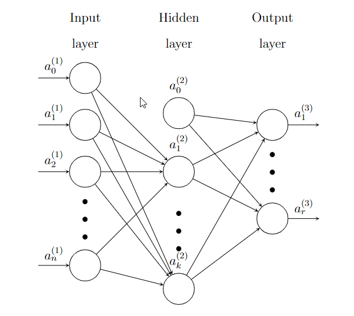
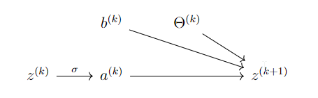
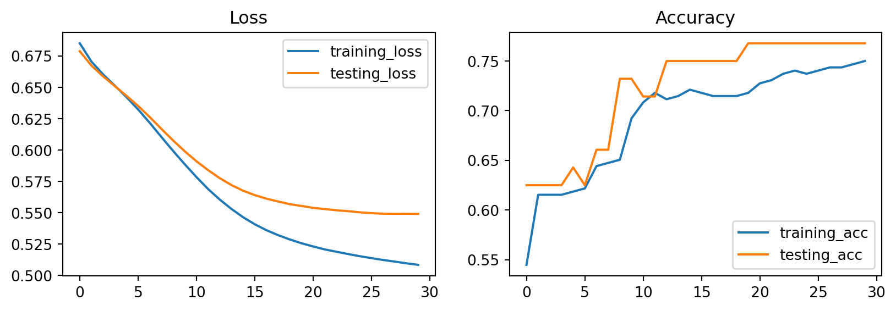
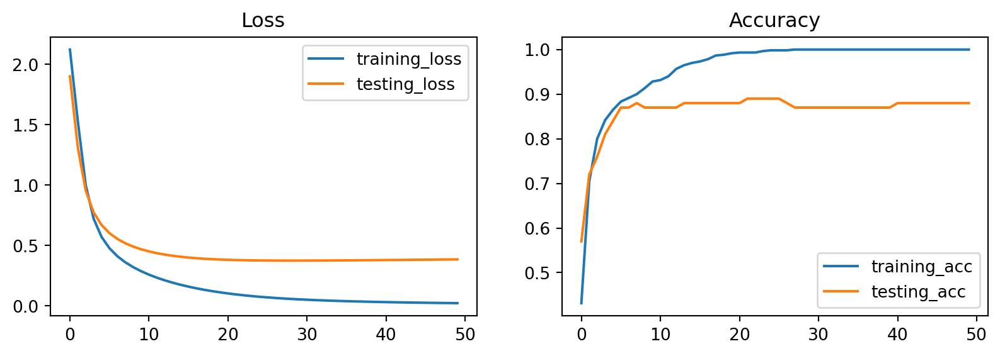
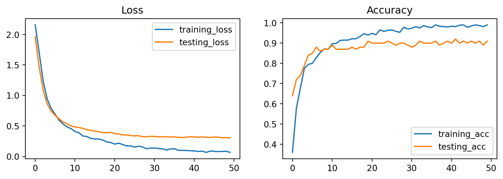

import pandas as pd
import numpy as np
from sklearn.model_selection import train_test_split
filepath = "assests/datasets/horse_colic_clean.csv"
df = pd.read_csv(filepath)
X = df.iloc[:, :22].to_numpy().astype(float)
y = (df.iloc[:, 22]<2).to_numpy().astype(int)
SEED = 42
X_train, X_test, y_train, y_test = train_test_split(X, y, test_size=0.15, random_state=SEED)
from sklearn.preprocessing import MinMaxScaler
mms = MinMaxScaler()
mms.fit(X_train)
X_train = mms.transform(X_train)
X_test = mms.transform(X_test)7 Netural networks
There are many different architects of netural networks. In our course we will only talk about the simplest one: multilayer perceptron (MLP). We will treat it as the generalization of logistic regression. In other words, we will treat logistic regression as an one-layer netural network. Under this idea, all the concepts and ideas, like gradient descent, mini-batch training, loss functions, learning curves, etc.. will be used.
7.1 Neural network: Back propagation
\[ \newcommand\diffp[2]{\dfrac{\partial #1}{\partial #2}} \]
To train a MLP model, we still use gradient descent. Therefore it is very important to know how to compute the gradient. Actually the idea is the same as logistic regreesion. The only issue is that now the model is more complicated. The gradient computation is summrized as an algorithm called back propagation. It is described as follows.
Here is an example of a Neural network with one hidden layer.

\(\Theta\) is the coefficients of the whole Neural network.
- \(a^{(1)}=\hat{\textbf{x}}\) is the input. \(a_0^{(1)}\) is added. This is an \((n+1)\)-dimension column vector.
- \(\Theta^{(1)}\) is the coefficient matrix from the input layer to the hidden layer, of size \(k\times(n+1)\).
- \(z^{(2)}=\Theta^{(1)}a^{(1)}\).
- \(a^{(2)}=\sigma(z^{(2)})\), and then add \(a^{(2)}_0\). This is an \((k+1)\)-dimension column vector.
- \(\Theta^{(2)}\) is the coefficient matrix from the hidden layer to the output layer, of size \(r\times(k+1)\).
- \(z^{(3)}=\Theta^{(2)}a^{(2)}\).
- \(a^{(3)}=\sigma(z^{(3)})\). Since this is the output layer, \(a^{(3)}_0\) won’t be added. % These \(a^{(3)}\) are \(h_{\Theta}(\textbf{x})\).
The dependency is as follows:
- \(J\) depends on \(z^{(3)}\) and \(a^{(3)}\).
- \(z^{(3)}\) and \(a^{(3)}\) depends on \(\Theta^{(2)}\) and \(a^{(2)}\).
- \(z^{(2)}\) and \(a^{(2)}\) depends on \(\Theta^{(1)}\) and \(a^{(1)}\).
- \(J\) depends on \(\Theta^{(1)}\), \(\Theta^{(2)}\) and \(a^{(1)}\).
Each layer is represented by the following diagram:

The diagram says:
\[ z^{(k+1)}=b^{(k)}+\Theta^{(k)}a^{(k)},\quad z^{(k+1)}_j=b^{(k)}_j+\sum \Theta^{(k)}_{jl}a^{(k)}_l,\quad a^{(k)}_j=\sigma(z^{(k)}_j). \]
Assume \(r,j\geq1\). Then
\[ \begin{aligned} \diffp{z^{(k+1)}_i}{a^{(k)}_r}&=\diffp*{\left(b^{(k)}_i+\sum\Theta^{(k)}_{il}a^{(k)}_l\right)}{a^{(k)}_r}=\Theta_{ir}^{(k)},\\ % \diffp{z^{(k+1)}_i}{\Theta^{(k)}_{ij}}&=\diffp*{\qty(a^{(k)}_0+\sum\Theta^{(k)}_{il}a^{(k)}_l)}{\Theta^{(k)}_{ij}}=a^{(k)}_j,\\ \diffp{z^{(k+1)}_i}{z^{(k)}_j}&=\sum_r \diffp{z^{(k+1)}_i}{a^{k}_r}\diffp{a^{(k)}_r}{z^{(k)}_j}+\sum_{p,g}\diffp{z^{(k+1)}_i}{\Theta^{(k)}_{pq}}\diffp{\Theta^{(k)}_{pq}}{z^{(k)}_j}+\sum_r \diffp{z^{(k+1)}_i}{b^{k}_r}\diffp{b^{(k)}_r}{z^{(k)}_j}\\ &=\sum_r \Theta^{(k)}_{ir}\diffp{a^{(k)}_r}{z^{(k)}_j}=\Theta^{(k)}_{ij}\diffp{a^{(k)}_j}{z^{(k)}_j}=\Theta^{(k)}_{ij}\sigma'(z^{(k)}_j),\\ \diffp{J}{z^{(k)}_j}&=\sum_r \diffp{J}{z^{(k+1)}_r}\diffp{z^{(k+1)}_r}{z^{(k)}_j}=\sum_r\diffp{J}{z^{(k+1)}_r}\Theta^{(k)}_{rj}\sigma'(z^{(k)}_j). \end{aligned} \]
We set
- \(\delta^k_j=\diffp{J}{z^{(k)}_j}\), \(\delta^k=\left[\delta^k_1,\delta_2^k,\ldots\right]^T\).
- \(\mathbf{z}^k=\left[z^{(k)}_1,z^{(k)}_2,\ldots\right]^T\), \(\mathbf{a}^k=\left[a^{(k)}_1,a^{(k)}_2,\ldots\right]^T\), \(\hat{\mathbf{a}}^k=\left[a^{(k)}_0,a^{(k)}_1,\ldots\right]^T\).
- \(\Theta^{k}=\left[\Theta^{(k)}_{ij}\right]\).
Then we have the following formula. Note that there are ``\(z_0\)’’ terms.
\[ \delta^k=\left[(\Theta^k)^T\delta^{k+1}\right]\circ \sigma'(\mathbf{z}^k). \]
\[ \begin{aligned} \diffp{z^{(k+1)}_r}{\Theta^{(k)}_{pq}}&=\diffp*{\left(b^{(k)}_r+\sum_l\Theta^{(k)}_{rl}a^{(k)}_l\right)}{\Theta^{(k)}_{pq}}=\begin{cases} 0&\text{ for }r\neq q,\\ a^{(k)}_q&\text{ for }r=q, \end{cases}\\ \diffp{J}{\Theta^{(k)}_{pq}}&=\sum_{r}\diffp{J}{z^{(k+1)}_r}\diffp{z^{(k+1)}_r}{\Theta^{(k)}_{pq}}=\diffp{J}{z^{(k+1)}_p}\diffp{z^{(k+1)}_p}{\Theta^{(k)}_{pq}}=\delta^{k+1}_pa^{k}_q,\\ \diffp{J}{b^{(k)}_{j}}&=\sum_{r}\diffp{J}{z^{(k+1)}_r}\diffp{z^{(k+1)}_r}{b^{(k)}_{j}}=\diffp{J}{z^{(k+1)}_j}\diffp{z^{(k+1)}_j}{b^{(k)}_{j}}=\diffp{J}{z^{(k+1)}_j}=\delta^{k+1}_j. \end{aligned} \]
Extend \(\hat{\Theta}=\left[b^{(k)},\Theta^{(k)}\right]\), and \(\partial^k J=\left[\diffp{J}{\hat{\Theta}^{(k)}_{ij}}\right]\). Then \[ \partial^k J=\left[\delta^{k+1}, \delta^{k+1}(\mathbf{a}^k)^T\right]. \] Then the algorithm is as follows.
- Starting from \(x\), \(y\) and some random \(\Theta\).
- Forward computation: compute \(z^{(k)}\) and \(a^{(k)}\). The last \(a^{(n)}\) is \(h\).
- Compute \(\delta^n=\nabla J\circ\sigma'(z^{(n)})\). In the case of \(J=\frac12||{h-y}||^2\), \(\nabla J=(a^{(n)}-y)\), and then \(\delta^n=(a^{(n)}-y)\circ\sigma'(z^{(n)})\).
- Backwards: \(\delta^k=\left[(\Theta^k)^T\delta^{k+1}\right]\circ \sigma'(\mathbf{z}^k)\), and \(\partial^k J=\left[\delta^{k+1}, \delta^{k+1}(\mathbf{a}^k)^T\right]\) .
Example 7.1 Consider there are 3 layers: input, hidden and output. There are \(m+1\) nodes in the input layer, \(n+1\) nodes in the hidden layer and \(k\) in the output layer. Therefore
- \(a^{(1)}\) and \(\delta^1\) are \(m\)-dim column vectors.
- \(z^{(2)}\), \(a^{(2)}\) and \(\delta^2\) are \(n\)-dim column vectors.
- \(z^{(3)}\), \(a^{(3)}\) and \(\delta^3\) are \(k\)-dim column vectors.
- \(\hat{\Theta}^1\) is \(n\times(m+1)\), \(\hat{\Theta}^2\) is \(k\times(n+1)\).
- \(z^{(2)}=b^{(1)}+\Theta^{(1)}a^{(1)}=\hat{\Theta}^{(1)}\hat{a}^{(1)}\), \(z^{(3)}=b^{(2)}+\Theta^{(2)}a^{(2)}=\hat{\Theta}^{(2)}\hat{a}^{(2)}\).
- \(\delta^3=\nabla_aJ\circ\sigma'(z^{(3)})\). This is a \(k\)-dim column vector.
- \(\partial^2 J=\left[\delta^3,\delta^3(a^{(2)})^T\right]\).
- \(\delta^2=\left[(\Theta^2)^T\delta^3\right]\circ \sigma'(z^{(2)})\), where \((\hat{\Theta^2})^T\delta^3=(\hat{\Theta^2})^T\delta^3\) and then remove the first row.
- \(\delta^1=\begin{bmatrix}(\Theta^1)^T\delta^2\end{bmatrix}\circ \sigma'(z^{(1)})\), where \((\hat{\Theta^1})^T\delta^2=(\hat{\Theta^1})^T\delta^2\) and then remove the first row.
- \(\partial^1 J=\left[\delta^2,\delta^2(a^{(1)})^T\right]\).
- When \(J=-\frac1m\sum y\ln a+(1-y)\ln(1-a)\), \(\delta^3=\frac1m(\sum a^{(3)}-\sum y)\).
7.2 Example 1: Horse colic
Let us take some of our old dataset as an example. This is an continuation of the horse colic dataset from Logistic regression. Note that most of the codes are directly taken from logistic regression section, since MLP is just a generalization of logistic regression.
The data is feed into the dataloader. Note that we change the batch size of the test dataloader to be the whole set, since I don’t want to do batch evaluation. This can be modified accordingly.
import torch
from torch.utils.data import Dataset, DataLoader
class MyDataset(Dataset):
def __init__(self, X, y):
self.X = torch.tensor(X, dtype=torch.float32)
self.y = torch.tensor(y, dtype=torch.float32).view(-1, 1)
def __len__(self):
return self.X.shape[0]
def __getitem__(self, idx):
return (self.X[idx], self.y[idx])
train_loader = DataLoader(MyDataset(X_train, y_train), batch_size =32)
val_loader = DataLoader(MyDataset(X_test, y_test), batch_size=X_test.shape[0])Now we build a neural network. This is a 2-layer model, with 1 hidden layer with 10 nodes. Since we are going to use BCEWithLogitsLoss, we don’t add the final activation function here in the model, but leave it to the loss function.
import torch.nn as nn
class MyModel(nn.Module):
def __init__(self, num_inputs):
super().__init__()
self.linear1 = nn.Linear(num_inputs, 20)
self.act1 = nn.ReLU()
self.linear2 = nn.Linear(20, 1)
# self.act2 = nn.Sigmoid()
def forward(self, x):
x = self.linear1(x)
x = self.act1(x)
x = self.linear2(x)
# x = self.act2(x)
return x
model = MyModel(22)We could use the following code to look at the structure of the model.
total = 0
for n, p in model.named_parameters():
print(n, p.shape, p.numel())
total += p.numel()
print("total params:", total)linear1.weight torch.Size([20, 22]) 440
linear1.bias torch.Size([20]) 20
linear2.weight torch.Size([1, 20]) 20
linear2.bias torch.Size([1]) 1
total params: 481Now we start to train the model and evaluate. Note that the majority part of the code is about evaluating the result. Since we are doing binary classification, our result can be computed by checking whether our model output (before the final sigmoid function) is positive or negative. This is where (p>0) comes from.
import time
import matplotlib.pyplot as plt
from torch.optim import SGD
from torch.nn import BCEWithLogitsLoss
model = MyModel(22)
optim = SGD(model.parameters(), lr=0.1)
loss_fn = BCEWithLogitsLoss()
n_epochs = 30
class Meter:
def __init__(self, total=0.0, count=0, value=0.0):
self.total = total
self.count = count
self.value = value
self.avg = self.total / self.count if self.count > 0 else 0.0
def update(self, value, n=1):
self.value = value
self.total += value * n
self.count += n
self.avg = self.total / self.count if self.count > 0 else 0.0
history = {'loss': [], 'acc': [], 'loss_test': [], 'acc_test': []}
for epoch in range(n_epochs):
monitor_loss = Meter()
monitor_loss_test = Meter()
monitor_acc = Meter()
monitor_acc_test = Meter()
monitor_time = Meter()
for i, (X_batch, y_batch) in enumerate(train_loader):
model.train()
t0 = time.perf_counter()
optim.zero_grad()
p = model(X_batch)
loss = loss_fn(p, y_batch)
loss.backward()
optim.step()
t1 = time.perf_counter()
with torch.no_grad():
pred = (p>0).to(torch.long)
acc = (pred == y_batch).to(torch.float).mean().item()
monitor_acc.update(acc, n=X_batch.shape[0])
monitor_loss.update(loss.item(), n=X_batch.shape[0])
monitor_time.update(t1-t0, n=1)
print(
f'epoch: {epoch}, batch: {i+1}/{len(train_loader)} '
f'time: {monitor_time.value: .4f} ({monitor_time.total: .4f}) '
f'loss: {monitor_loss.value: .4f} ({monitor_loss.avg: .4f}) '
f'acc: {monitor_acc.value: .2f} ({monitor_acc.avg: .2f})'
)
history['loss'].append(monitor_loss.avg)
history['acc'].append(monitor_acc.avg)
with torch.no_grad():
model.eval()
for X_batch_test, y_batch_test in val_loader:
p = model(X_batch_test)
loss_test = loss_fn(p, y_batch_test)
monitor_loss_test.update(loss_test.item(), n=X_batch_test.shape[0])
pred_test = (p>0).to(torch.int)
acc_test = ( pred_test == y_batch_test).to(torch.float).mean().item()
monitor_acc_test.update(acc_test, n=X_batch_test.shape[0])
print(
f'test epoch {epoch} '
f'test loss: {monitor_loss_test.avg: .4f} '
f'test acc: {monitor_acc_test.avg: .2f}'
)
history['loss_test'].append(monitor_loss_test.avg)
history['acc_test'].append(monitor_acc_test.avg)
fig, axs = plt.subplots(1, 2)
fig.set_size_inches((10,3))
axs[0].plot(history['loss'], label='training_loss')
axs[0].plot(history['loss_test'], label='testing_loss')
axs[0].legend()
axs[1].plot(history['acc'], label='training_acc')
axs[1].plot(history['acc_test'], label='testing_acc')
axs[1].legend()
axs[0].set_title('Loss');
axs[1].set_title('Accuracy');Click to view results
epoch: 0, batch: 1/10 time: 0.0040 ( 0.0040) loss: 0.6918 ( 0.6918) acc: 0.50 ( 0.50)
epoch: 0, batch: 2/10 time: 0.0008 ( 0.0048) loss: 0.6996 ( 0.6957) acc: 0.28 ( 0.39)
epoch: 0, batch: 3/10 time: 0.0008 ( 0.0056) loss: 0.6848 ( 0.6921) acc: 0.50 ( 0.43)
epoch: 0, batch: 4/10 time: 0.0007 ( 0.0063) loss: 0.6731 ( 0.6873) acc: 0.69 ( 0.49)
epoch: 0, batch: 5/10 time: 0.0007 ( 0.0070) loss: 0.6762 ( 0.6851) acc: 0.69 ( 0.53)
epoch: 0, batch: 6/10 time: 0.0007 ( 0.0077) loss: 0.6877 ( 0.6855) acc: 0.56 ( 0.54)
epoch: 0, batch: 7/10 time: 0.0006 ( 0.0083) loss: 0.6687 ( 0.6831) acc: 0.75 ( 0.57)
epoch: 0, batch: 8/10 time: 0.0006 ( 0.0089) loss: 0.6886 ( 0.6838) acc: 0.47 ( 0.55)
epoch: 0, batch: 9/10 time: 0.0007 ( 0.0096) loss: 0.6993 ( 0.6855) acc: 0.44 ( 0.54)
epoch: 0, batch: 10/10 time: 0.0007 ( 0.0103) loss: 0.6804 ( 0.6851) acc: 0.58 ( 0.54)
test epoch 0 test loss: 0.6788 test acc: 0.62
epoch: 1, batch: 1/10 time: 0.0010 ( 0.0010) loss: 0.6871 ( 0.6871) acc: 0.53 ( 0.53)
epoch: 1, batch: 2/10 time: 0.0007 ( 0.0017) loss: 0.6629 ( 0.6750) acc: 0.75 ( 0.64)
epoch: 1, batch: 3/10 time: 0.0006 ( 0.0024) loss: 0.6559 ( 0.6686) acc: 0.72 ( 0.67)
epoch: 1, batch: 4/10 time: 0.0006 ( 0.0030) loss: 0.6473 ( 0.6633) acc: 0.69 ( 0.67)
epoch: 1, batch: 5/10 time: 0.0009 ( 0.0038) loss: 0.6561 ( 0.6619) acc: 0.66 ( 0.67)
epoch: 1, batch: 6/10 time: 0.0007 ( 0.0045) loss: 0.6805 ( 0.6650) acc: 0.56 ( 0.65)
epoch: 1, batch: 7/10 time: 0.0006 ( 0.0051) loss: 0.6426 ( 0.6618) acc: 0.75 ( 0.67)
epoch: 1, batch: 8/10 time: 0.0006 ( 0.0057) loss: 0.6944 ( 0.6658) acc: 0.47 ( 0.64)
epoch: 1, batch: 9/10 time: 0.0006 ( 0.0063) loss: 0.7063 ( 0.6703) acc: 0.44 ( 0.62)
epoch: 1, batch: 10/10 time: 0.0005 ( 0.0067) loss: 0.6728 ( 0.6705) acc: 0.58 ( 0.62)
test epoch 1 test loss: 0.6673 test acc: 0.62
epoch: 2, batch: 1/10 time: 0.0006 ( 0.0006) loss: 0.6841 ( 0.6841) acc: 0.53 ( 0.53)
epoch: 2, batch: 2/10 time: 0.0006 ( 0.0012) loss: 0.6397 ( 0.6619) acc: 0.75 ( 0.64)
epoch: 2, batch: 3/10 time: 0.0006 ( 0.0017) loss: 0.6365 ( 0.6534) acc: 0.72 ( 0.67)
epoch: 2, batch: 4/10 time: 0.0007 ( 0.0024) loss: 0.6291 ( 0.6473) acc: 0.69 ( 0.67)
epoch: 2, batch: 5/10 time: 0.0006 ( 0.0029) loss: 0.6417 ( 0.6462) acc: 0.66 ( 0.67)
epoch: 2, batch: 6/10 time: 0.0005 ( 0.0035) loss: 0.6746 ( 0.6509) acc: 0.56 ( 0.65)
epoch: 2, batch: 7/10 time: 0.0003 ( 0.0038) loss: 0.6251 ( 0.6473) acc: 0.75 ( 0.67)
epoch: 2, batch: 8/10 time: 0.0003 ( 0.0041) loss: 0.6979 ( 0.6536) acc: 0.47 ( 0.64)
epoch: 2, batch: 9/10 time: 0.0003 ( 0.0044) loss: 0.7092 ( 0.6598) acc: 0.44 ( 0.62)
epoch: 2, batch: 10/10 time: 0.0007 ( 0.0051) loss: 0.6666 ( 0.6603) acc: 0.58 ( 0.62)
test epoch 2 test loss: 0.6587 test acc: 0.62
epoch: 3, batch: 1/10 time: 0.0009 ( 0.0009) loss: 0.6797 ( 0.6797) acc: 0.53 ( 0.53)
epoch: 3, batch: 2/10 time: 0.0006 ( 0.0014) loss: 0.6260 ( 0.6529) acc: 0.75 ( 0.64)
epoch: 3, batch: 3/10 time: 0.0004 ( 0.0019) loss: 0.6220 ( 0.6426) acc: 0.72 ( 0.67)
epoch: 3, batch: 4/10 time: 0.0005 ( 0.0024) loss: 0.6146 ( 0.6356) acc: 0.69 ( 0.67)
epoch: 3, batch: 5/10 time: 0.0006 ( 0.0030) loss: 0.6297 ( 0.6344) acc: 0.66 ( 0.67)
epoch: 3, batch: 6/10 time: 0.0006 ( 0.0036) loss: 0.6676 ( 0.6399) acc: 0.56 ( 0.65)
epoch: 3, batch: 7/10 time: 0.0005 ( 0.0040) loss: 0.6118 ( 0.6359) acc: 0.75 ( 0.67)
epoch: 3, batch: 8/10 time: 0.0003 ( 0.0043) loss: 0.6972 ( 0.6436) acc: 0.47 ( 0.64)
epoch: 3, batch: 9/10 time: 0.0003 ( 0.0046) loss: 0.7069 ( 0.6506) acc: 0.44 ( 0.62)
epoch: 3, batch: 10/10 time: 0.0003 ( 0.0049) loss: 0.6601 ( 0.6513) acc: 0.58 ( 0.62)
test epoch 3 test loss: 0.6510 test acc: 0.62
epoch: 4, batch: 1/10 time: 0.0003 ( 0.0003) loss: 0.6723 ( 0.6723) acc: 0.53 ( 0.53)
epoch: 4, batch: 2/10 time: 0.0018 ( 0.0022) loss: 0.6168 ( 0.6445) acc: 0.75 ( 0.64)
epoch: 4, batch: 3/10 time: 0.0005 ( 0.0027) loss: 0.6097 ( 0.6329) acc: 0.72 ( 0.67)
epoch: 4, batch: 4/10 time: 0.0003 ( 0.0030) loss: 0.6009 ( 0.6249) acc: 0.69 ( 0.67)
epoch: 4, batch: 5/10 time: 0.0003 ( 0.0033) loss: 0.6177 ( 0.6235) acc: 0.66 ( 0.67)
epoch: 4, batch: 6/10 time: 0.0003 ( 0.0036) loss: 0.6588 ( 0.6294) acc: 0.56 ( 0.65)
epoch: 4, batch: 7/10 time: 0.0003 ( 0.0039) loss: 0.6008 ( 0.6253) acc: 0.75 ( 0.67)
epoch: 4, batch: 8/10 time: 0.0003 ( 0.0042) loss: 0.6937 ( 0.6338) acc: 0.47 ( 0.64)
epoch: 4, batch: 9/10 time: 0.0005 ( 0.0046) loss: 0.7012 ( 0.6413) acc: 0.44 ( 0.62)
epoch: 4, batch: 10/10 time: 0.0004 ( 0.0051) loss: 0.6524 ( 0.6422) acc: 0.62 ( 0.62)
test epoch 4 test loss: 0.6433 test acc: 0.64
epoch: 5, batch: 1/10 time: 0.0003 ( 0.0003) loss: 0.6636 ( 0.6636) acc: 0.53 ( 0.53)
epoch: 5, batch: 2/10 time: 0.0003 ( 0.0007) loss: 0.6087 ( 0.6362) acc: 0.75 ( 0.64)
epoch: 5, batch: 3/10 time: 0.0003 ( 0.0010) loss: 0.5980 ( 0.6234) acc: 0.72 ( 0.67)
epoch: 5, batch: 4/10 time: 0.0003 ( 0.0013) loss: 0.5873 ( 0.6144) acc: 0.69 ( 0.67)
epoch: 5, batch: 5/10 time: 0.0003 ( 0.0016) loss: 0.6053 ( 0.6126) acc: 0.69 ( 0.68)
epoch: 5, batch: 6/10 time: 0.0003 ( 0.0019) loss: 0.6484 ( 0.6185) acc: 0.56 ( 0.66)
epoch: 5, batch: 7/10 time: 0.0003 ( 0.0021) loss: 0.5905 ( 0.6145) acc: 0.75 ( 0.67)
epoch: 5, batch: 8/10 time: 0.0004 ( 0.0025) loss: 0.6883 ( 0.6238) acc: 0.47 ( 0.64)
epoch: 5, batch: 9/10 time: 0.0003 ( 0.0028) loss: 0.6920 ( 0.6313) acc: 0.44 ( 0.62)
epoch: 5, batch: 10/10 time: 0.0003 ( 0.0032) loss: 0.6442 ( 0.6323) acc: 0.62 ( 0.62)
test epoch 5 test loss: 0.6352 test acc: 0.62
epoch: 6, batch: 1/10 time: 0.0004 ( 0.0004) loss: 0.6530 ( 0.6530) acc: 0.56 ( 0.56)
epoch: 6, batch: 2/10 time: 0.0012 ( 0.0016) loss: 0.6016 ( 0.6273) acc: 0.81 ( 0.69)
epoch: 6, batch: 3/10 time: 0.0005 ( 0.0021) loss: 0.5866 ( 0.6137) acc: 0.72 ( 0.70)
epoch: 6, batch: 4/10 time: 0.0003 ( 0.0024) loss: 0.5719 ( 0.6033) acc: 0.69 ( 0.70)
epoch: 6, batch: 5/10 time: 0.0003 ( 0.0027) loss: 0.5920 ( 0.6010) acc: 0.69 ( 0.69)
epoch: 6, batch: 6/10 time: 0.0003 ( 0.0030) loss: 0.6365 ( 0.6069) acc: 0.62 ( 0.68)
epoch: 6, batch: 7/10 time: 0.0003 ( 0.0033) loss: 0.5798 ( 0.6030) acc: 0.78 ( 0.70)
epoch: 6, batch: 8/10 time: 0.0003 ( 0.0036) loss: 0.6823 ( 0.6130) acc: 0.50 ( 0.67)
epoch: 6, batch: 9/10 time: 0.0003 ( 0.0040) loss: 0.6805 ( 0.6205) acc: 0.44 ( 0.65)
epoch: 6, batch: 10/10 time: 0.0004 ( 0.0043) loss: 0.6353 ( 0.6216) acc: 0.62 ( 0.64)
test epoch 6 test loss: 0.6262 test acc: 0.66
epoch: 7, batch: 1/10 time: 0.0003 ( 0.0003) loss: 0.6408 ( 0.6408) acc: 0.50 ( 0.50)
epoch: 7, batch: 2/10 time: 0.0003 ( 0.0007) loss: 0.5946 ( 0.6177) acc: 0.69 ( 0.59)
epoch: 7, batch: 3/10 time: 0.0003 ( 0.0010) loss: 0.5751 ( 0.6035) acc: 0.75 ( 0.65)
epoch: 7, batch: 4/10 time: 0.0003 ( 0.0012) loss: 0.5551 ( 0.5914) acc: 0.72 ( 0.66)
epoch: 7, batch: 5/10 time: 0.0003 ( 0.0015) loss: 0.5782 ( 0.5888) acc: 0.75 ( 0.68)
epoch: 7, batch: 6/10 time: 0.0003 ( 0.0018) loss: 0.6236 ( 0.5946) acc: 0.59 ( 0.67)
epoch: 7, batch: 7/10 time: 0.0003 ( 0.0021) loss: 0.5694 ( 0.5910) acc: 0.78 ( 0.68)
epoch: 7, batch: 8/10 time: 0.0003 ( 0.0024) loss: 0.6758 ( 0.6016) acc: 0.53 ( 0.66)
epoch: 7, batch: 9/10 time: 0.0003 ( 0.0026) loss: 0.6677 ( 0.6089) acc: 0.53 ( 0.65)
epoch: 7, batch: 10/10 time: 0.0003 ( 0.0029) loss: 0.6272 ( 0.6103) acc: 0.62 ( 0.65)
test epoch 7 test loss: 0.6168 test acc: 0.66
epoch: 8, batch: 1/10 time: 0.0004 ( 0.0004) loss: 0.6284 ( 0.6284) acc: 0.56 ( 0.56)
epoch: 8, batch: 2/10 time: 0.0013 ( 0.0017) loss: 0.5884 ( 0.6084) acc: 0.69 ( 0.62)
epoch: 8, batch: 3/10 time: 0.0008 ( 0.0025) loss: 0.5639 ( 0.5936) acc: 0.69 ( 0.65)
epoch: 8, batch: 4/10 time: 0.0006 ( 0.0031) loss: 0.5381 ( 0.5797) acc: 0.75 ( 0.67)
epoch: 8, batch: 5/10 time: 0.0003 ( 0.0034) loss: 0.5646 ( 0.5767) acc: 0.75 ( 0.69)
epoch: 8, batch: 6/10 time: 0.0003 ( 0.0037) loss: 0.6098 ( 0.5822) acc: 0.59 ( 0.67)
epoch: 8, batch: 7/10 time: 0.0003 ( 0.0040) loss: 0.5596 ( 0.5790) acc: 0.75 ( 0.68)
epoch: 8, batch: 8/10 time: 0.0003 ( 0.0043) loss: 0.6697 ( 0.5903) acc: 0.53 ( 0.66)
epoch: 8, batch: 9/10 time: 0.0003 ( 0.0046) loss: 0.6557 ( 0.5976) acc: 0.53 ( 0.65)
epoch: 8, batch: 10/10 time: 0.0003 ( 0.0049) loss: 0.6190 ( 0.5992) acc: 0.67 ( 0.65)
test epoch 8 test loss: 0.6076 test acc: 0.73
epoch: 9, batch: 1/10 time: 0.0005 ( 0.0005) loss: 0.6166 ( 0.6166) acc: 0.69 ( 0.69)
epoch: 9, batch: 2/10 time: 0.0003 ( 0.0008) loss: 0.5829 ( 0.5997) acc: 0.72 ( 0.70)
epoch: 9, batch: 3/10 time: 0.0002 ( 0.0010) loss: 0.5531 ( 0.5842) acc: 0.72 ( 0.71)
epoch: 9, batch: 4/10 time: 0.0002 ( 0.0013) loss: 0.5211 ( 0.5684) acc: 0.81 ( 0.73)
epoch: 9, batch: 5/10 time: 0.0002 ( 0.0015) loss: 0.5511 ( 0.5650) acc: 0.78 ( 0.74)
epoch: 9, batch: 6/10 time: 0.0002 ( 0.0017) loss: 0.5965 ( 0.5702) acc: 0.59 ( 0.72)
epoch: 9, batch: 7/10 time: 0.0002 ( 0.0020) loss: 0.5495 ( 0.5673) acc: 0.75 ( 0.72)
epoch: 9, batch: 8/10 time: 0.0002 ( 0.0022) loss: 0.6651 ( 0.5795) acc: 0.53 ( 0.70)
epoch: 9, batch: 9/10 time: 0.0002 ( 0.0024) loss: 0.6443 ( 0.5867) acc: 0.62 ( 0.69)
epoch: 9, batch: 10/10 time: 0.0002 ( 0.0026) loss: 0.6112 ( 0.5886) acc: 0.71 ( 0.69)
test epoch 9 test loss: 0.5989 test acc: 0.73
epoch: 10, batch: 1/10 time: 0.0002 ( 0.0002) loss: 0.6054 ( 0.6054) acc: 0.69 ( 0.69)
epoch: 10, batch: 2/10 time: 0.0002 ( 0.0004) loss: 0.5779 ( 0.5916) acc: 0.69 ( 0.69)
epoch: 10, batch: 3/10 time: 0.0002 ( 0.0007) loss: 0.5428 ( 0.5753) acc: 0.72 ( 0.70)
epoch: 10, batch: 4/10 time: 0.0008 ( 0.0015) loss: 0.5048 ( 0.5577) acc: 0.81 ( 0.73)
epoch: 10, batch: 5/10 time: 0.0004 ( 0.0019) loss: 0.5381 ( 0.5538) acc: 0.81 ( 0.74)
epoch: 10, batch: 6/10 time: 0.0003 ( 0.0022) loss: 0.5835 ( 0.5587) acc: 0.69 ( 0.73)
epoch: 10, batch: 7/10 time: 0.0003 ( 0.0025) loss: 0.5399 ( 0.5560) acc: 0.75 ( 0.74)
epoch: 10, batch: 8/10 time: 0.0005 ( 0.0030) loss: 0.6610 ( 0.5692) acc: 0.53 ( 0.71)
epoch: 10, batch: 9/10 time: 0.0003 ( 0.0033) loss: 0.6329 ( 0.5762) acc: 0.69 ( 0.71)
epoch: 10, batch: 10/10 time: 0.0007 ( 0.0040) loss: 0.6039 ( 0.5784) acc: 0.71 ( 0.71)
test epoch 10 test loss: 0.5910 test acc: 0.71
epoch: 11, batch: 1/10 time: 0.0004 ( 0.0004) loss: 0.5950 ( 0.5950) acc: 0.69 ( 0.69)
epoch: 11, batch: 2/10 time: 0.0003 ( 0.0007) loss: 0.5741 ( 0.5845) acc: 0.72 ( 0.70)
epoch: 11, batch: 3/10 time: 0.0003 ( 0.0010) loss: 0.5331 ( 0.5674) acc: 0.72 ( 0.71)
epoch: 11, batch: 4/10 time: 0.0003 ( 0.0013) loss: 0.4889 ( 0.5478) acc: 0.84 ( 0.74)
epoch: 11, batch: 5/10 time: 0.0003 ( 0.0016) loss: 0.5261 ( 0.5434) acc: 0.81 ( 0.76)
epoch: 11, batch: 6/10 time: 0.0003 ( 0.0019) loss: 0.5711 ( 0.5480) acc: 0.69 ( 0.74)
epoch: 11, batch: 7/10 time: 0.0008 ( 0.0027) loss: 0.5305 ( 0.5455) acc: 0.75 ( 0.75)
epoch: 11, batch: 8/10 time: 0.0005 ( 0.0033) loss: 0.6574 ( 0.5595) acc: 0.50 ( 0.71)
epoch: 11, batch: 9/10 time: 0.0003 ( 0.0036) loss: 0.6220 ( 0.5665) acc: 0.72 ( 0.72)
epoch: 11, batch: 10/10 time: 0.0003 ( 0.0039) loss: 0.5970 ( 0.5688) acc: 0.75 ( 0.72)
test epoch 11 test loss: 0.5839 test acc: 0.71
epoch: 12, batch: 1/10 time: 0.0003 ( 0.0003) loss: 0.5855 ( 0.5855) acc: 0.69 ( 0.69)
epoch: 12, batch: 2/10 time: 0.0003 ( 0.0006) loss: 0.5715 ( 0.5785) acc: 0.72 ( 0.70)
epoch: 12, batch: 3/10 time: 0.0003 ( 0.0009) loss: 0.5241 ( 0.5604) acc: 0.75 ( 0.72)
epoch: 12, batch: 4/10 time: 0.0008 ( 0.0018) loss: 0.4738 ( 0.5387) acc: 0.84 ( 0.75)
epoch: 12, batch: 5/10 time: 0.0005 ( 0.0023) loss: 0.5149 ( 0.5340) acc: 0.78 ( 0.76)
epoch: 12, batch: 6/10 time: 0.0003 ( 0.0026) loss: 0.5600 ( 0.5383) acc: 0.72 ( 0.75)
epoch: 12, batch: 7/10 time: 0.0003 ( 0.0029) loss: 0.5211 ( 0.5358) acc: 0.75 ( 0.75)
epoch: 12, batch: 8/10 time: 0.0003 ( 0.0032) loss: 0.6560 ( 0.5509) acc: 0.50 ( 0.72)
epoch: 12, batch: 9/10 time: 0.0003 ( 0.0035) loss: 0.6139 ( 0.5579) acc: 0.69 ( 0.72)
epoch: 12, batch: 10/10 time: 0.0007 ( 0.0042) loss: 0.5911 ( 0.5604) acc: 0.67 ( 0.71)
test epoch 12 test loss: 0.5775 test acc: 0.75
epoch: 13, batch: 1/10 time: 0.0005 ( 0.0005) loss: 0.5776 ( 0.5776) acc: 0.69 ( 0.69)
epoch: 13, batch: 2/10 time: 0.0003 ( 0.0008) loss: 0.5698 ( 0.5737) acc: 0.72 ( 0.70)
epoch: 13, batch: 3/10 time: 0.0002 ( 0.0011) loss: 0.5162 ( 0.5545) acc: 0.75 ( 0.72)
epoch: 13, batch: 4/10 time: 0.0002 ( 0.0013) loss: 0.4601 ( 0.5309) acc: 0.84 ( 0.75)
epoch: 13, batch: 5/10 time: 0.0002 ( 0.0015) loss: 0.5052 ( 0.5258) acc: 0.78 ( 0.76)
epoch: 13, batch: 6/10 time: 0.0002 ( 0.0018) loss: 0.5497 ( 0.5298) acc: 0.72 ( 0.75)
epoch: 13, batch: 7/10 time: 0.0002 ( 0.0020) loss: 0.5127 ( 0.5273) acc: 0.75 ( 0.75)
epoch: 13, batch: 8/10 time: 0.0002 ( 0.0022) loss: 0.6546 ( 0.5432) acc: 0.50 ( 0.72)
epoch: 13, batch: 9/10 time: 0.0002 ( 0.0024) loss: 0.6059 ( 0.5502) acc: 0.72 ( 0.72)
epoch: 13, batch: 10/10 time: 0.0006 ( 0.0031) loss: 0.5860 ( 0.5530) acc: 0.67 ( 0.71)
test epoch 13 test loss: 0.5720 test acc: 0.75
epoch: 14, batch: 1/10 time: 0.0004 ( 0.0004) loss: 0.5708 ( 0.5708) acc: 0.72 ( 0.72)
epoch: 14, batch: 2/10 time: 0.0003 ( 0.0008) loss: 0.5680 ( 0.5694) acc: 0.72 ( 0.72)
epoch: 14, batch: 3/10 time: 0.0003 ( 0.0011) loss: 0.5087 ( 0.5492) acc: 0.78 ( 0.74)
epoch: 14, batch: 4/10 time: 0.0003 ( 0.0014) loss: 0.4474 ( 0.5237) acc: 0.84 ( 0.77)
epoch: 14, batch: 5/10 time: 0.0003 ( 0.0017) loss: 0.4967 ( 0.5183) acc: 0.78 ( 0.77)
epoch: 14, batch: 6/10 time: 0.0008 ( 0.0025) loss: 0.5403 ( 0.5220) acc: 0.72 ( 0.76)
epoch: 14, batch: 7/10 time: 0.0005 ( 0.0030) loss: 0.5051 ( 0.5196) acc: 0.75 ( 0.76)
epoch: 14, batch: 8/10 time: 0.0005 ( 0.0035) loss: 0.6541 ( 0.5364) acc: 0.50 ( 0.73)
epoch: 14, batch: 9/10 time: 0.0004 ( 0.0039) loss: 0.5995 ( 0.5434) acc: 0.72 ( 0.73)
epoch: 14, batch: 10/10 time: 0.0004 ( 0.0043) loss: 0.5817 ( 0.5463) acc: 0.67 ( 0.72)
test epoch 14 test loss: 0.5675 test acc: 0.75
epoch: 15, batch: 1/10 time: 0.0004 ( 0.0004) loss: 0.5652 ( 0.5652) acc: 0.72 ( 0.72)
epoch: 15, batch: 2/10 time: 0.0007 ( 0.0011) loss: 0.5674 ( 0.5663) acc: 0.72 ( 0.72)
epoch: 15, batch: 3/10 time: 0.0004 ( 0.0015) loss: 0.5022 ( 0.5449) acc: 0.78 ( 0.74)
epoch: 15, batch: 4/10 time: 0.0003 ( 0.0018) loss: 0.4361 ( 0.5177) acc: 0.84 ( 0.77)
epoch: 15, batch: 5/10 time: 0.0003 ( 0.0021) loss: 0.4896 ( 0.5121) acc: 0.78 ( 0.77)
epoch: 15, batch: 6/10 time: 0.0003 ( 0.0024) loss: 0.5322 ( 0.5154) acc: 0.72 ( 0.76)
epoch: 15, batch: 7/10 time: 0.0003 ( 0.0026) loss: 0.4981 ( 0.5130) acc: 0.75 ( 0.76)
epoch: 15, batch: 8/10 time: 0.0003 ( 0.0029) loss: 0.6538 ( 0.5306) acc: 0.47 ( 0.72)
epoch: 15, batch: 9/10 time: 0.0003 ( 0.0032) loss: 0.5943 ( 0.5376) acc: 0.72 ( 0.72)
epoch: 15, batch: 10/10 time: 0.0003 ( 0.0035) loss: 0.5779 ( 0.5407) acc: 0.67 ( 0.72)
test epoch 15 test loss: 0.5640 test acc: 0.75
epoch: 16, batch: 1/10 time: 0.0006 ( 0.0006) loss: 0.5606 ( 0.5606) acc: 0.72 ( 0.72)
epoch: 16, batch: 2/10 time: 0.0004 ( 0.0010) loss: 0.5675 ( 0.5640) acc: 0.72 ( 0.72)
epoch: 16, batch: 3/10 time: 0.0003 ( 0.0013) loss: 0.4969 ( 0.5417) acc: 0.78 ( 0.74)
epoch: 16, batch: 4/10 time: 0.0003 ( 0.0015) loss: 0.4263 ( 0.5128) acc: 0.84 ( 0.77)
epoch: 16, batch: 5/10 time: 0.0007 ( 0.0023) loss: 0.4835 ( 0.5070) acc: 0.75 ( 0.76)
epoch: 16, batch: 6/10 time: 0.0004 ( 0.0027) loss: 0.5247 ( 0.5099) acc: 0.72 ( 0.76)
epoch: 16, batch: 7/10 time: 0.0003 ( 0.0030) loss: 0.4920 ( 0.5074) acc: 0.75 ( 0.75)
epoch: 16, batch: 8/10 time: 0.0003 ( 0.0033) loss: 0.6537 ( 0.5257) acc: 0.47 ( 0.72)
epoch: 16, batch: 9/10 time: 0.0003 ( 0.0036) loss: 0.5898 ( 0.5328) acc: 0.72 ( 0.72)
epoch: 16, batch: 10/10 time: 0.0003 ( 0.0039) loss: 0.5745 ( 0.5360) acc: 0.67 ( 0.71)
test epoch 16 test loss: 0.5612 test acc: 0.75
epoch: 17, batch: 1/10 time: 0.0003 ( 0.0003) loss: 0.5568 ( 0.5568) acc: 0.72 ( 0.72)
epoch: 17, batch: 2/10 time: 0.0003 ( 0.0006) loss: 0.5677 ( 0.5623) acc: 0.72 ( 0.72)
epoch: 17, batch: 3/10 time: 0.0003 ( 0.0009) loss: 0.4922 ( 0.5389) acc: 0.78 ( 0.74)
epoch: 17, batch: 4/10 time: 0.0003 ( 0.0012) loss: 0.4176 ( 0.5086) acc: 0.84 ( 0.77)
epoch: 17, batch: 5/10 time: 0.0008 ( 0.0020) loss: 0.4784 ( 0.5026) acc: 0.75 ( 0.76)
epoch: 17, batch: 6/10 time: 0.0005 ( 0.0025) loss: 0.5185 ( 0.5052) acc: 0.72 ( 0.76)
epoch: 17, batch: 7/10 time: 0.0003 ( 0.0028) loss: 0.4861 ( 0.5025) acc: 0.75 ( 0.75)
epoch: 17, batch: 8/10 time: 0.0003 ( 0.0031) loss: 0.6546 ( 0.5215) acc: 0.47 ( 0.72)
epoch: 17, batch: 9/10 time: 0.0003 ( 0.0034) loss: 0.5868 ( 0.5288) acc: 0.72 ( 0.72)
epoch: 17, batch: 10/10 time: 0.0003 ( 0.0037) loss: 0.5715 ( 0.5320) acc: 0.67 ( 0.71)
test epoch 17 test loss: 0.5589 test acc: 0.75
epoch: 18, batch: 1/10 time: 0.0003 ( 0.0003) loss: 0.5537 ( 0.5537) acc: 0.72 ( 0.72)
epoch: 18, batch: 2/10 time: 0.0003 ( 0.0006) loss: 0.5678 ( 0.5608) acc: 0.72 ( 0.72)
epoch: 18, batch: 3/10 time: 0.0006 ( 0.0012) loss: 0.4880 ( 0.5365) acc: 0.78 ( 0.74)
epoch: 18, batch: 4/10 time: 0.0005 ( 0.0018) loss: 0.4100 ( 0.5049) acc: 0.84 ( 0.77)
epoch: 18, batch: 5/10 time: 0.0004 ( 0.0021) loss: 0.4743 ( 0.4988) acc: 0.75 ( 0.76)
epoch: 18, batch: 6/10 time: 0.0006 ( 0.0028) loss: 0.5127 ( 0.5011) acc: 0.72 ( 0.76)
epoch: 18, batch: 7/10 time: 0.0005 ( 0.0033) loss: 0.4811 ( 0.4982) acc: 0.75 ( 0.75)
epoch: 18, batch: 8/10 time: 0.0008 ( 0.0040) loss: 0.6553 ( 0.5179) acc: 0.47 ( 0.72)
epoch: 18, batch: 9/10 time: 0.0005 ( 0.0046) loss: 0.5845 ( 0.5253) acc: 0.72 ( 0.72)
epoch: 18, batch: 10/10 time: 0.0004 ( 0.0050) loss: 0.5690 ( 0.5286) acc: 0.67 ( 0.71)
test epoch 18 test loss: 0.5568 test acc: 0.75
epoch: 19, batch: 1/10 time: 0.0005 ( 0.0005) loss: 0.5512 ( 0.5512) acc: 0.75 ( 0.75)
epoch: 19, batch: 2/10 time: 0.0004 ( 0.0008) loss: 0.5677 ( 0.5595) acc: 0.72 ( 0.73)
epoch: 19, batch: 3/10 time: 0.0003 ( 0.0012) loss: 0.4840 ( 0.5343) acc: 0.78 ( 0.75)
epoch: 19, batch: 4/10 time: 0.0003 ( 0.0015) loss: 0.4032 ( 0.5016) acc: 0.84 ( 0.77)
epoch: 19, batch: 5/10 time: 0.0007 ( 0.0022) loss: 0.4709 ( 0.4954) acc: 0.75 ( 0.77)
epoch: 19, batch: 6/10 time: 0.0005 ( 0.0027) loss: 0.5079 ( 0.4975) acc: 0.72 ( 0.76)
epoch: 19, batch: 7/10 time: 0.0003 ( 0.0030) loss: 0.4763 ( 0.4945) acc: 0.75 ( 0.76)
epoch: 19, batch: 8/10 time: 0.0003 ( 0.0033) loss: 0.6562 ( 0.5147) acc: 0.47 ( 0.72)
epoch: 19, batch: 9/10 time: 0.0003 ( 0.0035) loss: 0.5825 ( 0.5222) acc: 0.72 ( 0.72)
epoch: 19, batch: 10/10 time: 0.0003 ( 0.0038) loss: 0.5662 ( 0.5256) acc: 0.67 ( 0.72)
test epoch 19 test loss: 0.5554 test acc: 0.77
epoch: 20, batch: 1/10 time: 0.0003 ( 0.0003) loss: 0.5491 ( 0.5491) acc: 0.75 ( 0.75)
epoch: 20, batch: 2/10 time: 0.0003 ( 0.0006) loss: 0.5683 ( 0.5587) acc: 0.75 ( 0.75)
epoch: 20, batch: 3/10 time: 0.0004 ( 0.0011) loss: 0.4807 ( 0.5327) acc: 0.78 ( 0.76)
epoch: 20, batch: 4/10 time: 0.0004 ( 0.0015) loss: 0.3975 ( 0.4989) acc: 0.84 ( 0.78)
epoch: 20, batch: 5/10 time: 0.0010 ( 0.0025) loss: 0.4679 ( 0.4927) acc: 0.78 ( 0.78)
epoch: 20, batch: 6/10 time: 0.0006 ( 0.0031) loss: 0.5033 ( 0.4945) acc: 0.72 ( 0.77)
epoch: 20, batch: 7/10 time: 0.0006 ( 0.0037) loss: 0.4719 ( 0.4913) acc: 0.75 ( 0.77)
epoch: 20, batch: 8/10 time: 0.0003 ( 0.0040) loss: 0.6571 ( 0.5120) acc: 0.50 ( 0.73)
epoch: 20, batch: 9/10 time: 0.0002 ( 0.0042) loss: 0.5809 ( 0.5196) acc: 0.72 ( 0.73)
epoch: 20, batch: 10/10 time: 0.0004 ( 0.0046) loss: 0.5637 ( 0.5230) acc: 0.67 ( 0.73)
test epoch 20 test loss: 0.5538 test acc: 0.77
epoch: 21, batch: 1/10 time: 0.0003 ( 0.0003) loss: 0.5474 ( 0.5474) acc: 0.75 ( 0.75)
epoch: 21, batch: 2/10 time: 0.0006 ( 0.0009) loss: 0.5683 ( 0.5579) acc: 0.75 ( 0.75)
epoch: 21, batch: 3/10 time: 0.0004 ( 0.0013) loss: 0.4775 ( 0.5311) acc: 0.78 ( 0.76)
epoch: 21, batch: 4/10 time: 0.0003 ( 0.0016) loss: 0.3923 ( 0.4964) acc: 0.84 ( 0.78)
epoch: 21, batch: 5/10 time: 0.0003 ( 0.0019) loss: 0.4654 ( 0.4902) acc: 0.78 ( 0.78)
epoch: 21, batch: 6/10 time: 0.0003 ( 0.0022) loss: 0.4994 ( 0.4917) acc: 0.72 ( 0.77)
epoch: 21, batch: 7/10 time: 0.0005 ( 0.0027) loss: 0.4679 ( 0.4883) acc: 0.78 ( 0.77)
epoch: 21, batch: 8/10 time: 0.0006 ( 0.0033) loss: 0.6578 ( 0.5095) acc: 0.50 ( 0.74)
epoch: 21, batch: 9/10 time: 0.0013 ( 0.0046) loss: 0.5796 ( 0.5173) acc: 0.72 ( 0.74)
epoch: 21, batch: 10/10 time: 0.0005 ( 0.0051) loss: 0.5611 ( 0.5207) acc: 0.67 ( 0.73)
test epoch 21 test loss: 0.5529 test acc: 0.77
epoch: 22, batch: 1/10 time: 0.0004 ( 0.0004) loss: 0.5459 ( 0.5459) acc: 0.75 ( 0.75)
epoch: 22, batch: 2/10 time: 0.0003 ( 0.0007) loss: 0.5693 ( 0.5576) acc: 0.75 ( 0.75)
epoch: 22, batch: 3/10 time: 0.0008 ( 0.0015) loss: 0.4748 ( 0.5300) acc: 0.78 ( 0.76)
epoch: 22, batch: 4/10 time: 0.0006 ( 0.0020) loss: 0.3881 ( 0.4946) acc: 0.84 ( 0.78)
epoch: 22, batch: 5/10 time: 0.0004 ( 0.0024) loss: 0.4634 ( 0.4883) acc: 0.78 ( 0.78)
epoch: 22, batch: 6/10 time: 0.0003 ( 0.0027) loss: 0.4955 ( 0.4895) acc: 0.75 ( 0.78)
epoch: 22, batch: 7/10 time: 0.0003 ( 0.0030) loss: 0.4639 ( 0.4859) acc: 0.78 ( 0.78)
epoch: 22, batch: 8/10 time: 0.0003 ( 0.0033) loss: 0.6591 ( 0.5075) acc: 0.53 ( 0.75)
epoch: 22, batch: 9/10 time: 0.0003 ( 0.0036) loss: 0.5792 ( 0.5155) acc: 0.72 ( 0.74)
epoch: 22, batch: 10/10 time: 0.0003 ( 0.0039) loss: 0.5586 ( 0.5188) acc: 0.67 ( 0.74)
test epoch 22 test loss: 0.5519 test acc: 0.77
epoch: 23, batch: 1/10 time: 0.0003 ( 0.0003) loss: 0.5446 ( 0.5446) acc: 0.75 ( 0.75)
epoch: 23, batch: 2/10 time: 0.0003 ( 0.0006) loss: 0.5699 ( 0.5573) acc: 0.75 ( 0.75)
epoch: 23, batch: 3/10 time: 0.0003 ( 0.0009) loss: 0.4722 ( 0.5289) acc: 0.78 ( 0.76)
epoch: 23, batch: 4/10 time: 0.0003 ( 0.0012) loss: 0.3842 ( 0.4927) acc: 0.84 ( 0.78)
epoch: 23, batch: 5/10 time: 0.0003 ( 0.0015) loss: 0.4616 ( 0.4865) acc: 0.78 ( 0.78)
epoch: 23, batch: 6/10 time: 0.0003 ( 0.0018) loss: 0.4922 ( 0.4874) acc: 0.78 ( 0.78)
epoch: 23, batch: 7/10 time: 0.0003 ( 0.0020) loss: 0.4606 ( 0.4836) acc: 0.78 ( 0.78)
epoch: 23, batch: 8/10 time: 0.0003 ( 0.0023) loss: 0.6597 ( 0.5056) acc: 0.53 ( 0.75)
epoch: 23, batch: 9/10 time: 0.0003 ( 0.0026) loss: 0.5787 ( 0.5137) acc: 0.72 ( 0.75)
epoch: 23, batch: 10/10 time: 0.0005 ( 0.0031) loss: 0.5561 ( 0.5170) acc: 0.67 ( 0.74)
test epoch 23 test loss: 0.5512 test acc: 0.77
epoch: 24, batch: 1/10 time: 0.0003 ( 0.0003) loss: 0.5433 ( 0.5433) acc: 0.75 ( 0.75)
epoch: 24, batch: 2/10 time: 0.0003 ( 0.0006) loss: 0.5704 ( 0.5568) acc: 0.75 ( 0.75)
epoch: 24, batch: 3/10 time: 0.0003 ( 0.0009) loss: 0.4698 ( 0.5278) acc: 0.78 ( 0.76)
epoch: 24, batch: 4/10 time: 0.0003 ( 0.0012) loss: 0.3808 ( 0.4911) acc: 0.84 ( 0.78)
epoch: 24, batch: 5/10 time: 0.0003 ( 0.0015) loss: 0.4600 ( 0.4848) acc: 0.78 ( 0.78)
epoch: 24, batch: 6/10 time: 0.0003 ( 0.0018) loss: 0.4888 ( 0.4855) acc: 0.78 ( 0.78)
epoch: 24, batch: 7/10 time: 0.0006 ( 0.0024) loss: 0.4575 ( 0.4815) acc: 0.75 ( 0.78)
epoch: 24, batch: 8/10 time: 0.0008 ( 0.0032) loss: 0.6601 ( 0.5038) acc: 0.53 ( 0.75)
epoch: 24, batch: 9/10 time: 0.0005 ( 0.0037) loss: 0.5782 ( 0.5121) acc: 0.72 ( 0.74)
epoch: 24, batch: 10/10 time: 0.0003 ( 0.0040) loss: 0.5532 ( 0.5152) acc: 0.67 ( 0.74)
test epoch 24 test loss: 0.5503 test acc: 0.77
epoch: 25, batch: 1/10 time: 0.0004 ( 0.0004) loss: 0.5421 ( 0.5421) acc: 0.78 ( 0.78)
epoch: 25, batch: 2/10 time: 0.0003 ( 0.0007) loss: 0.5703 ( 0.5562) acc: 0.75 ( 0.77)
epoch: 25, batch: 3/10 time: 0.0003 ( 0.0010) loss: 0.4673 ( 0.5265) acc: 0.78 ( 0.77)
epoch: 25, batch: 4/10 time: 0.0003 ( 0.0013) loss: 0.3776 ( 0.4893) acc: 0.84 ( 0.79)
epoch: 25, batch: 5/10 time: 0.0003 ( 0.0016) loss: 0.4586 ( 0.4832) acc: 0.78 ( 0.79)
epoch: 25, batch: 6/10 time: 0.0003 ( 0.0018) loss: 0.4861 ( 0.4837) acc: 0.78 ( 0.79)
epoch: 25, batch: 7/10 time: 0.0003 ( 0.0021) loss: 0.4543 ( 0.4795) acc: 0.75 ( 0.78)
epoch: 25, batch: 8/10 time: 0.0003 ( 0.0024) loss: 0.6610 ( 0.5022) acc: 0.53 ( 0.75)
epoch: 25, batch: 9/10 time: 0.0003 ( 0.0027) loss: 0.5784 ( 0.5106) acc: 0.72 ( 0.75)
epoch: 25, batch: 10/10 time: 0.0003 ( 0.0030) loss: 0.5508 ( 0.5137) acc: 0.67 ( 0.74)
test epoch 25 test loss: 0.5496 test acc: 0.77
epoch: 26, batch: 1/10 time: 0.0003 ( 0.0003) loss: 0.5410 ( 0.5410) acc: 0.78 ( 0.78)
epoch: 26, batch: 2/10 time: 0.0003 ( 0.0006) loss: 0.5704 ( 0.5557) acc: 0.75 ( 0.77)
epoch: 26, batch: 3/10 time: 0.0005 ( 0.0011) loss: 0.4650 ( 0.5255) acc: 0.78 ( 0.77)
epoch: 26, batch: 4/10 time: 0.0004 ( 0.0014) loss: 0.3746 ( 0.4877) acc: 0.84 ( 0.79)
epoch: 26, batch: 5/10 time: 0.0003 ( 0.0018) loss: 0.4573 ( 0.4817) acc: 0.78 ( 0.79)
epoch: 26, batch: 6/10 time: 0.0003 ( 0.0020) loss: 0.4835 ( 0.4820) acc: 0.78 ( 0.79)
epoch: 26, batch: 7/10 time: 0.0003 ( 0.0023) loss: 0.4514 ( 0.4776) acc: 0.78 ( 0.79)
epoch: 26, batch: 8/10 time: 0.0003 ( 0.0026) loss: 0.6614 ( 0.5006) acc: 0.53 ( 0.75)
epoch: 26, batch: 9/10 time: 0.0003 ( 0.0029) loss: 0.5788 ( 0.5093) acc: 0.72 ( 0.75)
epoch: 26, batch: 10/10 time: 0.0008 ( 0.0037) loss: 0.5483 ( 0.5123) acc: 0.67 ( 0.74)
test epoch 26 test loss: 0.5492 test acc: 0.77
epoch: 27, batch: 1/10 time: 0.0007 ( 0.0007) loss: 0.5401 ( 0.5401) acc: 0.78 ( 0.78)
epoch: 27, batch: 2/10 time: 0.0005 ( 0.0012) loss: 0.5708 ( 0.5554) acc: 0.75 ( 0.77)
epoch: 27, batch: 3/10 time: 0.0003 ( 0.0016) loss: 0.4628 ( 0.5246) acc: 0.78 ( 0.77)
epoch: 27, batch: 4/10 time: 0.0003 ( 0.0019) loss: 0.3718 ( 0.4864) acc: 0.84 ( 0.79)
epoch: 27, batch: 5/10 time: 0.0003 ( 0.0022) loss: 0.4561 ( 0.4803) acc: 0.78 ( 0.79)
epoch: 27, batch: 6/10 time: 0.0003 ( 0.0025) loss: 0.4813 ( 0.4805) acc: 0.78 ( 0.79)
epoch: 27, batch: 7/10 time: 0.0003 ( 0.0028) loss: 0.4484 ( 0.4759) acc: 0.78 ( 0.79)
epoch: 27, batch: 8/10 time: 0.0003 ( 0.0031) loss: 0.6621 ( 0.4992) acc: 0.53 ( 0.75)
epoch: 27, batch: 9/10 time: 0.0003 ( 0.0034) loss: 0.5793 ( 0.5081) acc: 0.72 ( 0.75)
epoch: 27, batch: 10/10 time: 0.0003 ( 0.0036) loss: 0.5458 ( 0.5110) acc: 0.67 ( 0.74)
test epoch 27 test loss: 0.5491 test acc: 0.77
epoch: 28, batch: 1/10 time: 0.0003 ( 0.0003) loss: 0.5391 ( 0.5391) acc: 0.78 ( 0.78)
epoch: 28, batch: 2/10 time: 0.0003 ( 0.0006) loss: 0.5716 ( 0.5554) acc: 0.75 ( 0.77)
epoch: 28, batch: 3/10 time: 0.0003 ( 0.0009) loss: 0.4610 ( 0.5239) acc: 0.78 ( 0.77)
epoch: 28, batch: 4/10 time: 0.0003 ( 0.0012) loss: 0.3692 ( 0.4852) acc: 0.84 ( 0.79)
epoch: 28, batch: 5/10 time: 0.0003 ( 0.0015) loss: 0.4550 ( 0.4792) acc: 0.78 ( 0.79)
epoch: 28, batch: 6/10 time: 0.0004 ( 0.0019) loss: 0.4788 ( 0.4791) acc: 0.78 ( 0.79)
epoch: 28, batch: 7/10 time: 0.0003 ( 0.0022) loss: 0.4461 ( 0.4744) acc: 0.78 ( 0.79)
epoch: 28, batch: 8/10 time: 0.0005 ( 0.0027) loss: 0.6614 ( 0.4978) acc: 0.53 ( 0.75)
epoch: 28, batch: 9/10 time: 0.0003 ( 0.0031) loss: 0.5792 ( 0.5068) acc: 0.72 ( 0.75)
epoch: 28, batch: 10/10 time: 0.0003 ( 0.0034) loss: 0.5428 ( 0.5096) acc: 0.71 ( 0.75)
test epoch 28 test loss: 0.5491 test acc: 0.77
epoch: 29, batch: 1/10 time: 0.0007 ( 0.0007) loss: 0.5383 ( 0.5383) acc: 0.78 ( 0.78)
epoch: 29, batch: 2/10 time: 0.0006 ( 0.0012) loss: 0.5725 ( 0.5554) acc: 0.75 ( 0.77)
epoch: 29, batch: 3/10 time: 0.0003 ( 0.0016) loss: 0.4593 ( 0.5234) acc: 0.78 ( 0.77)
epoch: 29, batch: 4/10 time: 0.0007 ( 0.0023) loss: 0.3677 ( 0.4844) acc: 0.88 ( 0.80)
epoch: 29, batch: 5/10 time: 0.0004 ( 0.0026) loss: 0.4540 ( 0.4783) acc: 0.78 ( 0.79)
epoch: 29, batch: 6/10 time: 0.0003 ( 0.0030) loss: 0.4766 ( 0.4780) acc: 0.78 ( 0.79)
epoch: 29, batch: 7/10 time: 0.0003 ( 0.0033) loss: 0.4439 ( 0.4732) acc: 0.78 ( 0.79)
epoch: 29, batch: 8/10 time: 0.0003 ( 0.0036) loss: 0.6607 ( 0.4966) acc: 0.53 ( 0.76)
epoch: 29, batch: 9/10 time: 0.0003 ( 0.0038) loss: 0.5790 ( 0.5058) acc: 0.72 ( 0.75)
epoch: 29, batch: 10/10 time: 0.0003 ( 0.0042) loss: 0.5398 ( 0.5084) acc: 0.71 ( 0.75)
test epoch 29 test loss: 0.5490 test acc: 0.77Click to view results

As you may see, to build a netural network model it requires many testing. There are many established models. When you build your own architecture, you may start from there and modify it to fit your data.
7.3 Example 2: MNIST
The second example is MNIST. The code is almost the same as other project. We only make some modifications in certain places.
7.3.1 Load the dataset
We load the original data into our dataset class, and only convert it into the format we need when output it. This trick will spread the converting time into each time we fetch a data, instead of doing them all at once when creating the dataset.
from datasets import load_dataset
from torch.utils.data import Dataset, DataLoader
from torchvision import transforms
to_tensor = transforms.ToTensor()
class MyDataset(Dataset):
def __init__(self, ds):
self.X = ds["image"]
self.y = ds["label"]
def __len__(self):
return len(self.X)
def __getitem__(self, idx):
X = to_tensor(self.X[idx]).to(torch.float32).reshape(784)
y = self.y[idx]
return (X, y)
mnist_ds = load_dataset("ylecun/mnist")
train_ds = MyDataset(mnist_ds["train"].take(600))
test_ds = MyDataset(mnist_ds["test"].take(100))
train_loader = DataLoader(train_ds, batch_size=32)
test_loader = DataLoader(test_ds, batch_size=32)- In order to make the example easier I only use 600 images for training and 100 images for testing.
to_tensoris a method provided bytorchvision. It will automatically normalize the pixel matrix. In other words, we don’t do additional normalization.- The return format for
__getitem__is a tuple, thatXis a 1D-tensor andyis an integer. Therefore when connected to a dataloader, the output batch will be a tuple of a 2D-tensor and a 1D-tensor. The batched label tensor is 1D is due to the requirement fromCrossEntropyLoss.
7.3.2 Setup the model
import torch
import torch.nn as nn
from torch.optim import SGD
from torch.nn import CrossEntropyLoss
class MyModel(nn.Module):
def __init__(self, num_inputs):
super().__init__()
self.linear1 = nn.Linear(num_inputs, 128)
self.act1 = nn.ReLU()
self.linear2 = nn.Linear(128, 10)
def forward(self, x):
x = self.linear1(x)
x = self.act1(x)
x = self.linear2(x)
return x
model = MyModel(784)
optim = SGD(model.parameters(), lr=0.1)
loss_fn = CrossEntropyLoss()CrossEntropyLoss works like BCEWithLogitsLoss, that it requires no final Softmax activition function.
In order to get the predict value, we could just use .argmax(dim=1) to get the maximal location across each row.
7.3.3 Training loop
In the training loop, most codes are the same as the previous example. Note that this time we record the time for each batch, and use a dictionary to record the loss values and accuracies.
import time
import matplotlib.pyplot as plt
class Meter:
def __init__(self, total=0.0, count=0, value=0.0):
self.total = total
self.count = count
self.value = value
self.avg = self.total / self.count if self.count > 0 else 0.0
def update(self, value, n=1):
self.value = value
self.total += value * n
self.count += n
self.avg = self.total / self.count if self.count > 0 else 0.0
n_epochs = 50
history = {"loss": [], "acc": [], "loss_test": [], "acc_test": []}
for epoch in range(n_epochs):
monitor_loss = Meter()
monitor_loss_test = Meter()
monitor_acc = Meter()
monitor_acc_test = Meter()
monitor_time = Meter()
for i, (X_batch, y_batch) in enumerate(train_loader):
model.train()
t0 = time.perf_counter()
optim.zero_grad()
p = model(X_batch)
loss = loss_fn(p, y_batch)
loss.backward()
optim.step()
t1 = time.perf_counter()
with torch.no_grad():
pred = (p.argmax(dim=1)).to(torch.long)
acc = (pred == y_batch).to(torch.float).mean().item()
monitor_acc.update(acc, n=X_batch.shape[0])
monitor_loss.update(loss.item(), n=X_batch.shape[0])
monitor_time.update(t1 - t0, n=1)
print(
f"epoch: {epoch}, batch: {i + 1}/{len(train_loader)} "
f"time: {monitor_time.value: .4f} ({monitor_time.total: .4f}) "
f"loss: {monitor_loss.value: .4f} ({monitor_loss.avg: .4f}) "
f"acc: {monitor_acc.value: .2f} ({monitor_acc.avg: .2f})"
)
history["loss"].append(monitor_loss.avg)
history["acc"].append(monitor_acc.avg)
with torch.no_grad():
model.eval()
for X_batch_test, y_batch_test in test_loader:
p = model(X_batch_test)
loss_test = loss_fn(p, y_batch_test)
monitor_loss_test.update(loss_test.item(), n=X_batch_test.shape[0])
pred_test = (p.argmax(dim=1)).to(torch.int)
acc_test = (pred_test == y_batch_test).to(torch.float).mean().item()
monitor_acc_test.update(acc_test, n=X_batch_test.shape[0])
print(f"test epoch {epoch} test loss: {monitor_loss_test.avg: .4f} test acc: {monitor_acc_test.avg: .2f}")
history["loss_test"].append(monitor_loss_test.avg)
history["acc_test"].append(monitor_acc_test.avg)
fig, axs = plt.subplots(1, 2)
fig.set_size_inches((10, 3))
axs[0].plot(history["loss"], label="training_loss")
axs[0].plot(history["loss_test"], label="testing_loss")
axs[0].legend()
axs[1].plot(history["acc"], label="training_acc")
axs[1].plot(history["acc_test"], label="testing_acc")
axs[1].legend()
axs[0].set_title("Loss")
axs[1].set_title("Accuracy");Click to view results
epoch: 0, batch: 1/19 time: 0.0016 ( 0.0016) loss: 2.3069 ( 2.3069) acc: 0.03 ( 0.03)
epoch: 0, batch: 2/19 time: 0.0010 ( 0.0026) loss: 2.2952 ( 2.3011) acc: 0.03 ( 0.03)
epoch: 0, batch: 3/19 time: 0.0015 ( 0.0042) loss: 2.2396 ( 2.2806) acc: 0.25 ( 0.10)
epoch: 0, batch: 4/19 time: 0.0010 ( 0.0051) loss: 2.2105 ( 2.2631) acc: 0.34 ( 0.16)
epoch: 0, batch: 5/19 time: 0.0009 ( 0.0060) loss: 2.2519 ( 2.2608) acc: 0.16 ( 0.16)
epoch: 0, batch: 6/19 time: 0.0008 ( 0.0068) loss: 2.2353 ( 2.2566) acc: 0.25 ( 0.18)
epoch: 0, batch: 7/19 time: 0.0011 ( 0.0079) loss: 2.1687 ( 2.2440) acc: 0.47 ( 0.22)
epoch: 0, batch: 8/19 time: 0.0011 ( 0.0090) loss: 2.1636 ( 2.2340) acc: 0.53 ( 0.26)
epoch: 0, batch: 9/19 time: 0.0010 ( 0.0099) loss: 2.2001 ( 2.2302) acc: 0.41 ( 0.27)
epoch: 0, batch: 10/19 time: 0.0011 ( 0.0110) loss: 2.0824 ( 2.2154) acc: 0.56 ( 0.30)
epoch: 0, batch: 11/19 time: 0.0015 ( 0.0125) loss: 2.0916 ( 2.2042) acc: 0.56 ( 0.33)
epoch: 0, batch: 12/19 time: 0.0010 ( 0.0134) loss: 2.0327 ( 2.1899) acc: 0.62 ( 0.35)
epoch: 0, batch: 13/19 time: 0.0011 ( 0.0145) loss: 2.0432 ( 2.1786) acc: 0.66 ( 0.38)
epoch: 0, batch: 14/19 time: 0.0008 ( 0.0153) loss: 2.0096 ( 2.1665) acc: 0.62 ( 0.39)
epoch: 0, batch: 15/19 time: 0.0011 ( 0.0164) loss: 1.9284 ( 2.1506) acc: 0.69 ( 0.41)
epoch: 0, batch: 16/19 time: 0.0008 ( 0.0172) loss: 2.0918 ( 2.1470) acc: 0.38 ( 0.41)
epoch: 0, batch: 17/19 time: 0.0010 ( 0.0182) loss: 2.0029 ( 2.1385) acc: 0.50 ( 0.42)
epoch: 0, batch: 18/19 time: 0.0012 ( 0.0195) loss: 1.9548 ( 2.1283) acc: 0.62 ( 0.43)
epoch: 0, batch: 19/19 time: 0.0011 ( 0.0206) loss: 1.9427 ( 2.1209) acc: 0.54 ( 0.43)
test epoch 0 test loss: 1.8988 test acc: 0.57
epoch: 1, batch: 1/19 time: 0.0012 ( 0.0012) loss: 1.8373 ( 1.8373) acc: 0.69 ( 0.69)
epoch: 1, batch: 2/19 time: 0.0014 ( 0.0026) loss: 1.8244 ( 1.8308) acc: 0.62 ( 0.66)
epoch: 1, batch: 3/19 time: 0.0009 ( 0.0035) loss: 1.6603 ( 1.7740) acc: 0.66 ( 0.66)
epoch: 1, batch: 4/19 time: 0.0012 ( 0.0047) loss: 1.5674 ( 1.7223) acc: 0.72 ( 0.67)
epoch: 1, batch: 5/19 time: 0.0010 ( 0.0057) loss: 1.8143 ( 1.7407) acc: 0.59 ( 0.66)
epoch: 1, batch: 6/19 time: 0.0009 ( 0.0067) loss: 1.7430 ( 1.7411) acc: 0.62 ( 0.65)
epoch: 1, batch: 7/19 time: 0.0010 ( 0.0076) loss: 1.4808 ( 1.7039) acc: 0.75 ( 0.67)
epoch: 1, batch: 8/19 time: 0.0012 ( 0.0088) loss: 1.5753 ( 1.6878) acc: 0.66 ( 0.66)
epoch: 1, batch: 9/19 time: 0.0010 ( 0.0098) loss: 1.6711 ( 1.6860) acc: 0.62 ( 0.66)
epoch: 1, batch: 10/19 time: 0.0009 ( 0.0107) loss: 1.3411 ( 1.6515) acc: 0.81 ( 0.68)
epoch: 1, batch: 11/19 time: 0.0013 ( 0.0120) loss: 1.4174 ( 1.6302) acc: 0.69 ( 0.68)
epoch: 1, batch: 12/19 time: 0.0011 ( 0.0131) loss: 1.3028 ( 1.6029) acc: 0.84 ( 0.69)
epoch: 1, batch: 13/19 time: 0.0010 ( 0.0141) loss: 1.4085 ( 1.5880) acc: 0.81 ( 0.70)
epoch: 1, batch: 14/19 time: 0.0010 ( 0.0152) loss: 1.3595 ( 1.5716) acc: 0.75 ( 0.70)
epoch: 1, batch: 15/19 time: 0.0014 ( 0.0166) loss: 1.2439 ( 1.5498) acc: 0.81 ( 0.71)
epoch: 1, batch: 16/19 time: 0.0011 ( 0.0177) loss: 1.5873 ( 1.5521) acc: 0.59 ( 0.70)
epoch: 1, batch: 17/19 time: 0.0011 ( 0.0189) loss: 1.4689 ( 1.5472) acc: 0.62 ( 0.70)
epoch: 1, batch: 18/19 time: 0.0011 ( 0.0199) loss: 1.2917 ( 1.5330) acc: 0.81 ( 0.70)
epoch: 1, batch: 19/19 time: 0.0009 ( 0.0209) loss: 1.3724 ( 1.5266) acc: 0.71 ( 0.70)
test epoch 1 test loss: 1.3090 test acc: 0.72
epoch: 2, batch: 1/19 time: 0.0014 ( 0.0014) loss: 1.2155 ( 1.2155) acc: 0.81 ( 0.81)
epoch: 2, batch: 2/19 time: 0.0006 ( 0.0020) loss: 1.2381 ( 1.2268) acc: 0.75 ( 0.78)
epoch: 2, batch: 3/19 time: 0.0012 ( 0.0032) loss: 1.0007 ( 1.1514) acc: 0.88 ( 0.81)
epoch: 2, batch: 4/19 time: 0.0011 ( 0.0044) loss: 0.8855 ( 1.0850) acc: 0.91 ( 0.84)
epoch: 2, batch: 5/19 time: 0.0010 ( 0.0053) loss: 1.2594 ( 1.1198) acc: 0.72 ( 0.81)
epoch: 2, batch: 6/19 time: 0.0011 ( 0.0064) loss: 1.1973 ( 1.1327) acc: 0.66 ( 0.79)
epoch: 2, batch: 7/19 time: 0.0012 ( 0.0076) loss: 0.8252 ( 1.0888) acc: 0.91 ( 0.80)
epoch: 2, batch: 8/19 time: 0.0009 ( 0.0086) loss: 1.0546 ( 1.0845) acc: 0.69 ( 0.79)
epoch: 2, batch: 9/19 time: 0.0012 ( 0.0098) loss: 1.1627 ( 1.0932) acc: 0.69 ( 0.78)
epoch: 2, batch: 10/19 time: 0.0012 ( 0.0110) loss: 0.7528 ( 1.0592) acc: 0.88 ( 0.79)
epoch: 2, batch: 11/19 time: 0.0011 ( 0.0120) loss: 0.8702 ( 1.0420) acc: 0.81 ( 0.79)
epoch: 2, batch: 12/19 time: 0.0009 ( 0.0130) loss: 0.7919 ( 1.0211) acc: 0.88 ( 0.80)
epoch: 2, batch: 13/19 time: 0.0009 ( 0.0139) loss: 0.9006 ( 1.0119) acc: 0.88 ( 0.80)
epoch: 2, batch: 14/19 time: 0.0011 ( 0.0150) loss: 0.9080 ( 1.0044) acc: 0.78 ( 0.80)
epoch: 2, batch: 15/19 time: 0.0011 ( 0.0161) loss: 0.8148 ( 0.9918) acc: 0.88 ( 0.81)
epoch: 2, batch: 16/19 time: 0.0014 ( 0.0175) loss: 1.1847 ( 1.0039) acc: 0.62 ( 0.79)
epoch: 2, batch: 17/19 time: 0.0012 ( 0.0187) loss: 1.0597 ( 1.0071) acc: 0.81 ( 0.80)
epoch: 2, batch: 18/19 time: 0.0008 ( 0.0195) loss: 0.8375 ( 0.9977) acc: 0.88 ( 0.80)
epoch: 2, batch: 19/19 time: 0.0010 ( 0.0205) loss: 0.9925 ( 0.9975) acc: 0.79 ( 0.80)
test epoch 2 test loss: 0.9523 test acc: 0.76
epoch: 3, batch: 1/19 time: 0.0014 ( 0.0014) loss: 0.8363 ( 0.8363) acc: 0.84 ( 0.84)
epoch: 3, batch: 2/19 time: 0.0010 ( 0.0025) loss: 0.8845 ( 0.8604) acc: 0.81 ( 0.83)
epoch: 3, batch: 3/19 time: 0.0013 ( 0.0038) loss: 0.6893 ( 0.8034) acc: 0.91 ( 0.85)
epoch: 3, batch: 4/19 time: 0.0010 ( 0.0047) loss: 0.5392 ( 0.7373) acc: 0.91 ( 0.87)
epoch: 3, batch: 5/19 time: 0.0009 ( 0.0056) loss: 0.9477 ( 0.7794) acc: 0.78 ( 0.85)
epoch: 3, batch: 6/19 time: 0.0013 ( 0.0070) loss: 0.8616 ( 0.7931) acc: 0.72 ( 0.83)
epoch: 3, batch: 7/19 time: 0.0010 ( 0.0080) loss: 0.5060 ( 0.7521) acc: 0.97 ( 0.85)
epoch: 3, batch: 8/19 time: 0.0010 ( 0.0089) loss: 0.7970 ( 0.7577) acc: 0.81 ( 0.84)
epoch: 3, batch: 9/19 time: 0.0008 ( 0.0098) loss: 0.8898 ( 0.7724) acc: 0.72 ( 0.83)
epoch: 3, batch: 10/19 time: 0.0009 ( 0.0107) loss: 0.4933 ( 0.7445) acc: 0.91 ( 0.84)
epoch: 3, batch: 11/19 time: 0.0011 ( 0.0118) loss: 0.6093 ( 0.7322) acc: 0.84 ( 0.84)
epoch: 3, batch: 12/19 time: 0.0015 ( 0.0133) loss: 0.5611 ( 0.7179) acc: 0.88 ( 0.84)
epoch: 3, batch: 13/19 time: 0.0011 ( 0.0144) loss: 0.6389 ( 0.7119) acc: 0.88 ( 0.84)
epoch: 3, batch: 14/19 time: 0.0014 ( 0.0158) loss: 0.6735 ( 0.7091) acc: 0.84 ( 0.84)
epoch: 3, batch: 15/19 time: 0.0009 ( 0.0168) loss: 0.6021 ( 0.7020) acc: 0.88 ( 0.85)
epoch: 3, batch: 16/19 time: 0.0011 ( 0.0178) loss: 0.9634 ( 0.7183) acc: 0.75 ( 0.84)
epoch: 3, batch: 17/19 time: 0.0013 ( 0.0191) loss: 0.8184 ( 0.7242) acc: 0.84 ( 0.84)
epoch: 3, batch: 18/19 time: 0.0010 ( 0.0201) loss: 0.5993 ( 0.7173) acc: 0.88 ( 0.84)
epoch: 3, batch: 19/19 time: 0.0010 ( 0.0211) loss: 0.7821 ( 0.7199) acc: 0.83 ( 0.84)
test epoch 3 test loss: 0.7721 test acc: 0.81
epoch: 4, batch: 1/19 time: 0.0011 ( 0.0011) loss: 0.6449 ( 0.6449) acc: 0.81 ( 0.81)
epoch: 4, batch: 2/19 time: 0.0020 ( 0.0031) loss: 0.6863 ( 0.6656) acc: 0.88 ( 0.84)
epoch: 4, batch: 3/19 time: 0.0006 ( 0.0037) loss: 0.5519 ( 0.6277) acc: 0.91 ( 0.86)
epoch: 4, batch: 4/19 time: 0.0010 ( 0.0046) loss: 0.3778 ( 0.5652) acc: 0.94 ( 0.88)
epoch: 4, batch: 5/19 time: 0.0010 ( 0.0057) loss: 0.7736 ( 0.6069) acc: 0.81 ( 0.87)
epoch: 4, batch: 6/19 time: 0.0010 ( 0.0066) loss: 0.6578 ( 0.6154) acc: 0.78 ( 0.85)
epoch: 4, batch: 7/19 time: 0.0011 ( 0.0077) loss: 0.3490 ( 0.5773) acc: 0.97 ( 0.87)
epoch: 4, batch: 8/19 time: 0.0011 ( 0.0088) loss: 0.6691 ( 0.5888) acc: 0.81 ( 0.86)
epoch: 4, batch: 9/19 time: 0.0006 ( 0.0093) loss: 0.7468 ( 0.6064) acc: 0.78 ( 0.85)
epoch: 4, batch: 10/19 time: 0.0008 ( 0.0101) loss: 0.3622 ( 0.5819) acc: 0.94 ( 0.86)
epoch: 4, batch: 11/19 time: 0.0010 ( 0.0112) loss: 0.4667 ( 0.5715) acc: 0.88 ( 0.86)
epoch: 4, batch: 12/19 time: 0.0012 ( 0.0124) loss: 0.4412 ( 0.5606) acc: 0.91 ( 0.87)
epoch: 4, batch: 13/19 time: 0.0011 ( 0.0135) loss: 0.4990 ( 0.5559) acc: 0.88 ( 0.87)
epoch: 4, batch: 14/19 time: 0.0012 ( 0.0146) loss: 0.5384 ( 0.5546) acc: 0.88 ( 0.87)
epoch: 4, batch: 15/19 time: 0.0010 ( 0.0157) loss: 0.4783 ( 0.5495) acc: 0.88 ( 0.87)
epoch: 4, batch: 16/19 time: 0.0009 ( 0.0166) loss: 0.8197 ( 0.5664) acc: 0.75 ( 0.86)
epoch: 4, batch: 17/19 time: 0.0010 ( 0.0176) loss: 0.6668 ( 0.5723) acc: 0.88 ( 0.86)
epoch: 4, batch: 18/19 time: 0.0021 ( 0.0197) loss: 0.4656 ( 0.5664) acc: 0.88 ( 0.86)
epoch: 4, batch: 19/19 time: 0.0010 ( 0.0207) loss: 0.6460 ( 0.5696) acc: 0.92 ( 0.87)
test epoch 4 test loss: 0.6681 test acc: 0.84
epoch: 5, batch: 1/19 time: 0.0010 ( 0.0010) loss: 0.5310 ( 0.5310) acc: 0.84 ( 0.84)
epoch: 5, batch: 2/19 time: 0.0014 ( 0.0024) loss: 0.5610 ( 0.5460) acc: 0.88 ( 0.86)
epoch: 5, batch: 3/19 time: 0.0011 ( 0.0034) loss: 0.4764 ( 0.5228) acc: 0.91 ( 0.88)
epoch: 5, batch: 4/19 time: 0.0009 ( 0.0043) loss: 0.2930 ( 0.4653) acc: 0.94 ( 0.89)
epoch: 5, batch: 5/19 time: 0.0012 ( 0.0055) loss: 0.6598 ( 0.5042) acc: 0.84 ( 0.88)
epoch: 5, batch: 6/19 time: 0.0010 ( 0.0065) loss: 0.5230 ( 0.5074) acc: 0.84 ( 0.88)
epoch: 5, batch: 7/19 time: 0.0011 ( 0.0076) loss: 0.2617 ( 0.4723) acc: 0.97 ( 0.89)
epoch: 5, batch: 8/19 time: 0.0009 ( 0.0085) loss: 0.5968 ( 0.4878) acc: 0.78 ( 0.88)
epoch: 5, batch: 9/19 time: 0.0011 ( 0.0096) loss: 0.6616 ( 0.5072) acc: 0.78 ( 0.86)
epoch: 5, batch: 10/19 time: 0.0010 ( 0.0106) loss: 0.2834 ( 0.4848) acc: 0.97 ( 0.88)
epoch: 5, batch: 11/19 time: 0.0008 ( 0.0115) loss: 0.3721 ( 0.4745) acc: 0.94 ( 0.88)
epoch: 5, batch: 12/19 time: 0.0012 ( 0.0127) loss: 0.3662 ( 0.4655) acc: 0.91 ( 0.88)
epoch: 5, batch: 13/19 time: 0.0009 ( 0.0136) loss: 0.4127 ( 0.4614) acc: 0.88 ( 0.88)
epoch: 5, batch: 14/19 time: 0.0011 ( 0.0147) loss: 0.4517 ( 0.4608) acc: 0.88 ( 0.88)
epoch: 5, batch: 15/19 time: 0.0010 ( 0.0157) loss: 0.3955 ( 0.4564) acc: 0.91 ( 0.88)
epoch: 5, batch: 16/19 time: 0.0011 ( 0.0168) loss: 0.7119 ( 0.4724) acc: 0.81 ( 0.88)
epoch: 5, batch: 17/19 time: 0.0011 ( 0.0178) loss: 0.5648 ( 0.4778) acc: 0.91 ( 0.88)
epoch: 5, batch: 18/19 time: 0.0010 ( 0.0188) loss: 0.3842 ( 0.4726) acc: 0.91 ( 0.88)
epoch: 5, batch: 19/19 time: 0.0011 ( 0.0199) loss: 0.5463 ( 0.4756) acc: 0.92 ( 0.88)
test epoch 5 test loss: 0.6006 test acc: 0.87
epoch: 6, batch: 1/19 time: 0.0009 ( 0.0009) loss: 0.4505 ( 0.4505) acc: 0.84 ( 0.84)
epoch: 6, batch: 2/19 time: 0.0010 ( 0.0020) loss: 0.4752 ( 0.4628) acc: 0.88 ( 0.86)
epoch: 6, batch: 3/19 time: 0.0012 ( 0.0032) loss: 0.4266 ( 0.4508) acc: 0.91 ( 0.88)
epoch: 6, batch: 4/19 time: 0.0010 ( 0.0042) loss: 0.2423 ( 0.3987) acc: 0.94 ( 0.89)
epoch: 6, batch: 5/19 time: 0.0012 ( 0.0054) loss: 0.5769 ( 0.4343) acc: 0.84 ( 0.88)
epoch: 6, batch: 6/19 time: 0.0011 ( 0.0065) loss: 0.4280 ( 0.4332) acc: 0.91 ( 0.89)
epoch: 6, batch: 7/19 time: 0.0017 ( 0.0081) loss: 0.2074 ( 0.4010) acc: 0.97 ( 0.90)
epoch: 6, batch: 8/19 time: 0.0012 ( 0.0093) loss: 0.5493 ( 0.4195) acc: 0.78 ( 0.88)
epoch: 6, batch: 9/19 time: 0.0008 ( 0.0101) loss: 0.5986 ( 0.4394) acc: 0.78 ( 0.87)
epoch: 6, batch: 10/19 time: 0.0010 ( 0.0111) loss: 0.2317 ( 0.4187) acc: 0.97 ( 0.88)
epoch: 6, batch: 11/19 time: 0.0010 ( 0.0121) loss: 0.3039 ( 0.4082) acc: 0.94 ( 0.89)
epoch: 6, batch: 12/19 time: 0.0007 ( 0.0128) loss: 0.3136 ( 0.4003) acc: 0.91 ( 0.89)
epoch: 6, batch: 13/19 time: 0.0009 ( 0.0138) loss: 0.3534 ( 0.3967) acc: 0.88 ( 0.89)
epoch: 6, batch: 14/19 time: 0.0011 ( 0.0149) loss: 0.3913 ( 0.3963) acc: 0.91 ( 0.89)
epoch: 6, batch: 15/19 time: 0.0011 ( 0.0159) loss: 0.3364 ( 0.3923) acc: 0.94 ( 0.89)
epoch: 6, batch: 16/19 time: 0.0009 ( 0.0168) loss: 0.6229 ( 0.4068) acc: 0.84 ( 0.89)
epoch: 6, batch: 17/19 time: 0.0011 ( 0.0179) loss: 0.4898 ( 0.4116) acc: 0.91 ( 0.89)
epoch: 6, batch: 18/19 time: 0.0010 ( 0.0189) loss: 0.3301 ( 0.4071) acc: 0.91 ( 0.89)
epoch: 6, batch: 19/19 time: 0.0006 ( 0.0195) loss: 0.4679 ( 0.4095) acc: 0.92 ( 0.89)
test epoch 6 test loss: 0.5528 test acc: 0.87
epoch: 7, batch: 1/19 time: 0.0010 ( 0.0010) loss: 0.3876 ( 0.3876) acc: 0.84 ( 0.84)
epoch: 7, batch: 2/19 time: 0.0006 ( 0.0016) loss: 0.4129 ( 0.4002) acc: 0.88 ( 0.86)
epoch: 7, batch: 3/19 time: 0.0010 ( 0.0027) loss: 0.3890 ( 0.3965) acc: 0.91 ( 0.88)
epoch: 7, batch: 4/19 time: 0.0014 ( 0.0041) loss: 0.2083 ( 0.3494) acc: 0.97 ( 0.90)
epoch: 7, batch: 5/19 time: 0.0010 ( 0.0051) loss: 0.5128 ( 0.3821) acc: 0.84 ( 0.89)
epoch: 7, batch: 6/19 time: 0.0008 ( 0.0060) loss: 0.3591 ( 0.3783) acc: 0.94 ( 0.90)
epoch: 7, batch: 7/19 time: 0.0010 ( 0.0070) loss: 0.1703 ( 0.3485) acc: 1.00 ( 0.91)
epoch: 7, batch: 8/19 time: 0.0009 ( 0.0079) loss: 0.5119 ( 0.3690) acc: 0.78 ( 0.89)
epoch: 7, batch: 9/19 time: 0.0012 ( 0.0091) loss: 0.5454 ( 0.3886) acc: 0.78 ( 0.88)
epoch: 7, batch: 10/19 time: 0.0010 ( 0.0100) loss: 0.1955 ( 0.3693) acc: 0.97 ( 0.89)
epoch: 7, batch: 11/19 time: 0.0015 ( 0.0115) loss: 0.2534 ( 0.3587) acc: 0.94 ( 0.89)
epoch: 7, batch: 12/19 time: 0.0012 ( 0.0127) loss: 0.2737 ( 0.3516) acc: 0.91 ( 0.90)
epoch: 7, batch: 13/19 time: 0.0011 ( 0.0138) loss: 0.3089 ( 0.3484) acc: 0.94 ( 0.90)
epoch: 7, batch: 14/19 time: 0.0008 ( 0.0145) loss: 0.3468 ( 0.3482) acc: 0.91 ( 0.90)
epoch: 7, batch: 15/19 time: 0.0011 ( 0.0157) loss: 0.2913 ( 0.3444) acc: 0.94 ( 0.90)
epoch: 7, batch: 16/19 time: 0.0010 ( 0.0166) loss: 0.5484 ( 0.3572) acc: 0.84 ( 0.90)
epoch: 7, batch: 17/19 time: 0.0011 ( 0.0177) loss: 0.4307 ( 0.3615) acc: 0.91 ( 0.90)
epoch: 7, batch: 18/19 time: 0.0010 ( 0.0187) loss: 0.2913 ( 0.3576) acc: 0.91 ( 0.90)
epoch: 7, batch: 19/19 time: 0.0011 ( 0.0198) loss: 0.4040 ( 0.3595) acc: 0.92 ( 0.90)
test epoch 7 test loss: 0.5169 test acc: 0.88
epoch: 8, batch: 1/19 time: 0.0011 ( 0.0011) loss: 0.3356 ( 0.3356) acc: 0.88 ( 0.88)
epoch: 8, batch: 2/19 time: 0.0013 ( 0.0024) loss: 0.3662 ( 0.3509) acc: 0.91 ( 0.89)
epoch: 8, batch: 3/19 time: 0.0009 ( 0.0033) loss: 0.3571 ( 0.3530) acc: 0.91 ( 0.90)
epoch: 8, batch: 4/19 time: 0.0010 ( 0.0043) loss: 0.1834 ( 0.3106) acc: 0.97 ( 0.91)
epoch: 8, batch: 5/19 time: 0.0009 ( 0.0053) loss: 0.4602 ( 0.3405) acc: 0.84 ( 0.90)
epoch: 8, batch: 6/19 time: 0.0010 ( 0.0063) loss: 0.3076 ( 0.3350) acc: 0.94 ( 0.91)
epoch: 8, batch: 7/19 time: 0.0010 ( 0.0073) loss: 0.1431 ( 0.3076) acc: 1.00 ( 0.92)
epoch: 8, batch: 8/19 time: 0.0009 ( 0.0083) loss: 0.4789 ( 0.3290) acc: 0.81 ( 0.91)
epoch: 8, batch: 9/19 time: 0.0010 ( 0.0092) loss: 0.4983 ( 0.3478) acc: 0.81 ( 0.90)
epoch: 8, batch: 10/19 time: 0.0014 ( 0.0107) loss: 0.1686 ( 0.3299) acc: 0.97 ( 0.90)
epoch: 8, batch: 11/19 time: 0.0009 ( 0.0116) loss: 0.2154 ( 0.3195) acc: 0.97 ( 0.91)
epoch: 8, batch: 12/19 time: 0.0008 ( 0.0124) loss: 0.2414 ( 0.3130) acc: 0.91 ( 0.91)
epoch: 8, batch: 13/19 time: 0.0010 ( 0.0134) loss: 0.2739 ( 0.3100) acc: 0.94 ( 0.91)
epoch: 8, batch: 14/19 time: 0.0009 ( 0.0143) loss: 0.3119 ( 0.3101) acc: 0.91 ( 0.91)
epoch: 8, batch: 15/19 time: 0.0011 ( 0.0153) loss: 0.2559 ( 0.3065) acc: 0.94 ( 0.91)
epoch: 8, batch: 16/19 time: 0.0012 ( 0.0165) loss: 0.4831 ( 0.3175) acc: 0.91 ( 0.91)
epoch: 8, batch: 17/19 time: 0.0048 ( 0.0213) loss: 0.3806 ( 0.3213) acc: 0.94 ( 0.91)
epoch: 8, batch: 18/19 time: 0.0011 ( 0.0224) loss: 0.2613 ( 0.3179) acc: 0.91 ( 0.91)
epoch: 8, batch: 19/19 time: 0.0011 ( 0.0235) loss: 0.3501 ( 0.3192) acc: 0.92 ( 0.91)
test epoch 8 test loss: 0.4892 test acc: 0.87
epoch: 9, batch: 1/19 time: 0.0011 ( 0.0011) loss: 0.2923 ( 0.2923) acc: 0.97 ( 0.97)
epoch: 9, batch: 2/19 time: 0.0010 ( 0.0020) loss: 0.3284 ( 0.3104) acc: 0.91 ( 0.94)
epoch: 9, batch: 3/19 time: 0.0011 ( 0.0031) loss: 0.3292 ( 0.3166) acc: 0.94 ( 0.94)
epoch: 9, batch: 4/19 time: 0.0005 ( 0.0036) loss: 0.1637 ( 0.2784) acc: 0.97 ( 0.95)
epoch: 9, batch: 5/19 time: 0.0009 ( 0.0045) loss: 0.4150 ( 0.3057) acc: 0.91 ( 0.94)
epoch: 9, batch: 6/19 time: 0.0008 ( 0.0053) loss: 0.2679 ( 0.2994) acc: 0.97 ( 0.94)
epoch: 9, batch: 7/19 time: 0.0010 ( 0.0063) loss: 0.1225 ( 0.2741) acc: 1.00 ( 0.95)
epoch: 9, batch: 8/19 time: 0.0010 ( 0.0073) loss: 0.4477 ( 0.2958) acc: 0.81 ( 0.93)
epoch: 9, batch: 9/19 time: 0.0010 ( 0.0082) loss: 0.4552 ( 0.3135) acc: 0.81 ( 0.92)
epoch: 9, batch: 10/19 time: 0.0008 ( 0.0091) loss: 0.1479 ( 0.2970) acc: 1.00 ( 0.93)
epoch: 9, batch: 11/19 time: 0.0011 ( 0.0102) loss: 0.1859 ( 0.2869) acc: 0.97 ( 0.93)
epoch: 9, batch: 12/19 time: 0.0011 ( 0.0113) loss: 0.2140 ( 0.2808) acc: 0.91 ( 0.93)
epoch: 9, batch: 13/19 time: 0.0007 ( 0.0120) loss: 0.2452 ( 0.2781) acc: 0.94 ( 0.93)
epoch: 9, batch: 14/19 time: 0.0009 ( 0.0128) loss: 0.2835 ( 0.2785) acc: 0.91 ( 0.93)
epoch: 9, batch: 15/19 time: 0.0011 ( 0.0139) loss: 0.2280 ( 0.2751) acc: 0.94 ( 0.93)
epoch: 9, batch: 16/19 time: 0.0009 ( 0.0148) loss: 0.4274 ( 0.2846) acc: 0.91 ( 0.93)
epoch: 9, batch: 17/19 time: 0.0006 ( 0.0154) loss: 0.3365 ( 0.2877) acc: 0.94 ( 0.93)
epoch: 9, batch: 18/19 time: 0.0009 ( 0.0163) loss: 0.2371 ( 0.2849) acc: 0.94 ( 0.93)
epoch: 9, batch: 19/19 time: 0.0009 ( 0.0172) loss: 0.3043 ( 0.2856) acc: 0.92 ( 0.93)
test epoch 9 test loss: 0.4671 test acc: 0.87
epoch: 10, batch: 1/19 time: 0.0012 ( 0.0012) loss: 0.2554 ( 0.2554) acc: 0.97 ( 0.97)
epoch: 10, batch: 2/19 time: 0.0011 ( 0.0023) loss: 0.2970 ( 0.2762) acc: 0.91 ( 0.94)
epoch: 10, batch: 3/19 time: 0.0012 ( 0.0035) loss: 0.3037 ( 0.2854) acc: 0.94 ( 0.94)
epoch: 10, batch: 4/19 time: 0.0011 ( 0.0046) loss: 0.1473 ( 0.2509) acc: 0.97 ( 0.95)
epoch: 10, batch: 5/19 time: 0.0009 ( 0.0055) loss: 0.3753 ( 0.2757) acc: 0.91 ( 0.94)
epoch: 10, batch: 6/19 time: 0.0010 ( 0.0065) loss: 0.2364 ( 0.2692) acc: 0.97 ( 0.94)
epoch: 10, batch: 7/19 time: 0.0010 ( 0.0075) loss: 0.1066 ( 0.2460) acc: 1.00 ( 0.95)
epoch: 10, batch: 8/19 time: 0.0011 ( 0.0086) loss: 0.4170 ( 0.2673) acc: 0.81 ( 0.93)
epoch: 10, batch: 9/19 time: 0.0010 ( 0.0096) loss: 0.4149 ( 0.2837) acc: 0.84 ( 0.92)
epoch: 10, batch: 10/19 time: 0.0010 ( 0.0106) loss: 0.1319 ( 0.2685) acc: 1.00 ( 0.93)
epoch: 10, batch: 11/19 time: 0.0010 ( 0.0117) loss: 0.1621 ( 0.2589) acc: 0.97 ( 0.93)
epoch: 10, batch: 12/19 time: 0.0009 ( 0.0126) loss: 0.1902 ( 0.2531) acc: 0.91 ( 0.93)
epoch: 10, batch: 13/19 time: 0.0015 ( 0.0141) loss: 0.2203 ( 0.2506) acc: 0.94 ( 0.93)
epoch: 10, batch: 14/19 time: 0.0010 ( 0.0151) loss: 0.2595 ( 0.2513) acc: 0.91 ( 0.93)
epoch: 10, batch: 15/19 time: 0.0010 ( 0.0161) loss: 0.2049 ( 0.2482) acc: 0.94 ( 0.93)
epoch: 10, batch: 16/19 time: 0.0011 ( 0.0172) loss: 0.3791 ( 0.2563) acc: 0.94 ( 0.93)
epoch: 10, batch: 17/19 time: 0.0013 ( 0.0185) loss: 0.2990 ( 0.2589) acc: 0.94 ( 0.93)
epoch: 10, batch: 18/19 time: 0.0010 ( 0.0196) loss: 0.2169 ( 0.2565) acc: 0.94 ( 0.93)
epoch: 10, batch: 19/19 time: 0.0010 ( 0.0206) loss: 0.2655 ( 0.2569) acc: 0.92 ( 0.93)
test epoch 10 test loss: 0.4494 test acc: 0.87
epoch: 11, batch: 1/19 time: 0.0012 ( 0.0012) loss: 0.2246 ( 0.2246) acc: 1.00 ( 1.00)
epoch: 11, batch: 2/19 time: 0.0011 ( 0.0023) loss: 0.2703 ( 0.2474) acc: 0.94 ( 0.97)
epoch: 11, batch: 3/19 time: 0.0012 ( 0.0034) loss: 0.2808 ( 0.2586) acc: 0.94 ( 0.96)
epoch: 11, batch: 4/19 time: 0.0013 ( 0.0047) loss: 0.1328 ( 0.2271) acc: 0.97 ( 0.96)
epoch: 11, batch: 5/19 time: 0.0011 ( 0.0058) loss: 0.3402 ( 0.2497) acc: 0.91 ( 0.95)
epoch: 11, batch: 6/19 time: 0.0009 ( 0.0068) loss: 0.2109 ( 0.2433) acc: 1.00 ( 0.96)
epoch: 11, batch: 7/19 time: 0.0008 ( 0.0076) loss: 0.0935 ( 0.2219) acc: 1.00 ( 0.96)
epoch: 11, batch: 8/19 time: 0.0007 ( 0.0083) loss: 0.3868 ( 0.2425) acc: 0.81 ( 0.95)
epoch: 11, batch: 9/19 time: 0.0010 ( 0.0094) loss: 0.3773 ( 0.2575) acc: 0.88 ( 0.94)
epoch: 11, batch: 10/19 time: 0.0012 ( 0.0105) loss: 0.1187 ( 0.2436) acc: 1.00 ( 0.94)
epoch: 11, batch: 11/19 time: 0.0008 ( 0.0113) loss: 0.1428 ( 0.2344) acc: 0.97 ( 0.95)
epoch: 11, batch: 12/19 time: 0.0009 ( 0.0122) loss: 0.1699 ( 0.2290) acc: 0.91 ( 0.94)
epoch: 11, batch: 13/19 time: 0.0012 ( 0.0134) loss: 0.1991 ( 0.2267) acc: 0.97 ( 0.94)
epoch: 11, batch: 14/19 time: 0.0009 ( 0.0142) loss: 0.2389 ( 0.2276) acc: 0.91 ( 0.94)
epoch: 11, batch: 15/19 time: 0.0010 ( 0.0152) loss: 0.1857 ( 0.2248) acc: 0.94 ( 0.94)
epoch: 11, batch: 16/19 time: 0.0015 ( 0.0167) loss: 0.3363 ( 0.2318) acc: 0.94 ( 0.94)
epoch: 11, batch: 17/19 time: 0.0031 ( 0.0198) loss: 0.2658 ( 0.2338) acc: 0.94 ( 0.94)
epoch: 11, batch: 18/19 time: 0.0012 ( 0.0210) loss: 0.1996 ( 0.2319) acc: 0.94 ( 0.94)
epoch: 11, batch: 19/19 time: 0.0008 ( 0.0218) loss: 0.2326 ( 0.2319) acc: 0.92 ( 0.94)
test epoch 11 test loss: 0.4348 test acc: 0.87
epoch: 12, batch: 1/19 time: 0.0012 ( 0.0012) loss: 0.1984 ( 0.1984) acc: 1.00 ( 1.00)
epoch: 12, batch: 2/19 time: 0.0009 ( 0.0021) loss: 0.2462 ( 0.2223) acc: 0.94 ( 0.97)
epoch: 12, batch: 3/19 time: 0.0011 ( 0.0032) loss: 0.2592 ( 0.2346) acc: 0.97 ( 0.97)
epoch: 12, batch: 4/19 time: 0.0011 ( 0.0043) loss: 0.1200 ( 0.2060) acc: 0.97 ( 0.97)
epoch: 12, batch: 5/19 time: 0.0011 ( 0.0054) loss: 0.3088 ( 0.2265) acc: 0.91 ( 0.96)
epoch: 12, batch: 6/19 time: 0.0011 ( 0.0065) loss: 0.1897 ( 0.2204) acc: 1.00 ( 0.96)
epoch: 12, batch: 7/19 time: 0.0010 ( 0.0075) loss: 0.0830 ( 0.2008) acc: 1.00 ( 0.97)
epoch: 12, batch: 8/19 time: 0.0011 ( 0.0086) loss: 0.3572 ( 0.2203) acc: 0.88 ( 0.96)
epoch: 12, batch: 9/19 time: 0.0012 ( 0.0099) loss: 0.3428 ( 0.2339) acc: 0.91 ( 0.95)
epoch: 12, batch: 10/19 time: 0.0009 ( 0.0107) loss: 0.1081 ( 0.2213) acc: 1.00 ( 0.96)
epoch: 12, batch: 11/19 time: 0.0010 ( 0.0118) loss: 0.1268 ( 0.2128) acc: 0.97 ( 0.96)
epoch: 12, batch: 12/19 time: 0.0009 ( 0.0127) loss: 0.1521 ( 0.2077) acc: 0.97 ( 0.96)
epoch: 12, batch: 13/19 time: 0.0016 ( 0.0143) loss: 0.1802 ( 0.2056) acc: 0.97 ( 0.96)
epoch: 12, batch: 14/19 time: 0.0012 ( 0.0154) loss: 0.2211 ( 0.2067) acc: 0.97 ( 0.96)
epoch: 12, batch: 15/19 time: 0.0010 ( 0.0165) loss: 0.1690 ( 0.2042) acc: 0.94 ( 0.96)
epoch: 12, batch: 16/19 time: 0.0008 ( 0.0172) loss: 0.2987 ( 0.2101) acc: 0.94 ( 0.96)
epoch: 12, batch: 17/19 time: 0.0008 ( 0.0180) loss: 0.2364 ( 0.2116) acc: 0.97 ( 0.96)
epoch: 12, batch: 18/19 time: 0.0011 ( 0.0191) loss: 0.1842 ( 0.2101) acc: 0.94 ( 0.96)
epoch: 12, batch: 19/19 time: 0.0014 ( 0.0205) loss: 0.2046 ( 0.2099) acc: 0.96 ( 0.96)
test epoch 12 test loss: 0.4230 test acc: 0.87
epoch: 13, batch: 1/19 time: 0.0009 ( 0.0009) loss: 0.1764 ( 0.1764) acc: 1.00 ( 1.00)
epoch: 13, batch: 2/19 time: 0.0010 ( 0.0018) loss: 0.2247 ( 0.2005) acc: 0.97 ( 0.98)
epoch: 13, batch: 3/19 time: 0.0010 ( 0.0029) loss: 0.2389 ( 0.2133) acc: 0.97 ( 0.98)
epoch: 13, batch: 4/19 time: 0.0008 ( 0.0037) loss: 0.1084 ( 0.1871) acc: 0.97 ( 0.98)
epoch: 13, batch: 5/19 time: 0.0009 ( 0.0046) loss: 0.2807 ( 0.2058) acc: 0.91 ( 0.96)
epoch: 13, batch: 6/19 time: 0.0010 ( 0.0056) loss: 0.1719 ( 0.2002) acc: 1.00 ( 0.97)
epoch: 13, batch: 7/19 time: 0.0008 ( 0.0064) loss: 0.0744 ( 0.1822) acc: 1.00 ( 0.97)
epoch: 13, batch: 8/19 time: 0.0011 ( 0.0075) loss: 0.3290 ( 0.2006) acc: 0.94 ( 0.97)
epoch: 13, batch: 9/19 time: 0.0008 ( 0.0082) loss: 0.3102 ( 0.2127) acc: 0.91 ( 0.96)
epoch: 13, batch: 10/19 time: 0.0013 ( 0.0095) loss: 0.0990 ( 0.2014) acc: 1.00 ( 0.97)
epoch: 13, batch: 11/19 time: 0.0011 ( 0.0106) loss: 0.1134 ( 0.1934) acc: 0.97 ( 0.97)
epoch: 13, batch: 12/19 time: 0.0014 ( 0.0120) loss: 0.1368 ( 0.1887) acc: 0.97 ( 0.97)
epoch: 13, batch: 13/19 time: 0.0008 ( 0.0128) loss: 0.1639 ( 0.1867) acc: 0.97 ( 0.97)
epoch: 13, batch: 14/19 time: 0.0011 ( 0.0139) loss: 0.2053 ( 0.1881) acc: 0.97 ( 0.97)
epoch: 13, batch: 15/19 time: 0.0008 ( 0.0147) loss: 0.1544 ( 0.1858) acc: 0.94 ( 0.96)
epoch: 13, batch: 16/19 time: 0.0020 ( 0.0167) loss: 0.2661 ( 0.1908) acc: 0.94 ( 0.96)
epoch: 13, batch: 17/19 time: 0.0007 ( 0.0174) loss: 0.2112 ( 0.1920) acc: 0.97 ( 0.96)
epoch: 13, batch: 18/19 time: 0.0008 ( 0.0183) loss: 0.1702 ( 0.1908) acc: 1.00 ( 0.97)
epoch: 13, batch: 19/19 time: 0.0005 ( 0.0188) loss: 0.1813 ( 0.1904) acc: 0.96 ( 0.96)
test epoch 13 test loss: 0.4133 test acc: 0.88
epoch: 14, batch: 1/19 time: 0.0010 ( 0.0010) loss: 0.1576 ( 0.1576) acc: 1.00 ( 1.00)
epoch: 14, batch: 2/19 time: 0.0012 ( 0.0022) loss: 0.2050 ( 0.1813) acc: 0.97 ( 0.98)
epoch: 14, batch: 3/19 time: 0.0009 ( 0.0031) loss: 0.2198 ( 0.1941) acc: 0.97 ( 0.98)
epoch: 14, batch: 4/19 time: 0.0017 ( 0.0048) loss: 0.0980 ( 0.1701) acc: 0.97 ( 0.98)
epoch: 14, batch: 5/19 time: 0.0008 ( 0.0056) loss: 0.2551 ( 0.1871) acc: 0.91 ( 0.96)
epoch: 14, batch: 6/19 time: 0.0010 ( 0.0066) loss: 0.1567 ( 0.1820) acc: 1.00 ( 0.97)
epoch: 14, batch: 7/19 time: 0.0008 ( 0.0074) loss: 0.0670 ( 0.1656) acc: 1.00 ( 0.97)
epoch: 14, batch: 8/19 time: 0.0014 ( 0.0088) loss: 0.3021 ( 0.1827) acc: 0.94 ( 0.97)
epoch: 14, batch: 9/19 time: 0.0010 ( 0.0098) loss: 0.2806 ( 0.1936) acc: 0.91 ( 0.96)
epoch: 14, batch: 10/19 time: 0.0009 ( 0.0107) loss: 0.0912 ( 0.1833) acc: 1.00 ( 0.97)
epoch: 14, batch: 11/19 time: 0.0010 ( 0.0117) loss: 0.1016 ( 0.1759) acc: 0.97 ( 0.97)
epoch: 14, batch: 12/19 time: 0.0011 ( 0.0128) loss: 0.1233 ( 0.1715) acc: 0.97 ( 0.97)
epoch: 14, batch: 13/19 time: 0.0007 ( 0.0135) loss: 0.1489 ( 0.1698) acc: 0.97 ( 0.97)
epoch: 14, batch: 14/19 time: 0.0015 ( 0.0150) loss: 0.1914 ( 0.1713) acc: 0.97 ( 0.97)
epoch: 14, batch: 15/19 time: 0.0009 ( 0.0159) loss: 0.1419 ( 0.1694) acc: 0.97 ( 0.97)
epoch: 14, batch: 16/19 time: 0.0011 ( 0.0171) loss: 0.2377 ( 0.1736) acc: 0.94 ( 0.96)
epoch: 14, batch: 17/19 time: 0.0009 ( 0.0180) loss: 0.1892 ( 0.1745) acc: 1.00 ( 0.97)
epoch: 14, batch: 18/19 time: 0.0008 ( 0.0188) loss: 0.1572 ( 0.1736) acc: 1.00 ( 0.97)
epoch: 14, batch: 19/19 time: 0.0011 ( 0.0199) loss: 0.1613 ( 0.1731) acc: 1.00 ( 0.97)
test epoch 14 test loss: 0.4052 test acc: 0.88
epoch: 15, batch: 1/19 time: 0.0007 ( 0.0007) loss: 0.1416 ( 0.1416) acc: 1.00 ( 1.00)
epoch: 15, batch: 2/19 time: 0.0009 ( 0.0017) loss: 0.1867 ( 0.1641) acc: 0.97 ( 0.98)
epoch: 15, batch: 3/19 time: 0.0012 ( 0.0029) loss: 0.2012 ( 0.1765) acc: 0.97 ( 0.98)
epoch: 15, batch: 4/19 time: 0.0016 ( 0.0045) loss: 0.0887 ( 0.1546) acc: 0.97 ( 0.98)
epoch: 15, batch: 5/19 time: 0.0012 ( 0.0057) loss: 0.2321 ( 0.1701) acc: 0.91 ( 0.96)
epoch: 15, batch: 6/19 time: 0.0012 ( 0.0068) loss: 0.1440 ( 0.1657) acc: 1.00 ( 0.97)
epoch: 15, batch: 7/19 time: 0.0015 ( 0.0083) loss: 0.0609 ( 0.1508) acc: 1.00 ( 0.97)
epoch: 15, batch: 8/19 time: 0.0011 ( 0.0094) loss: 0.2764 ( 0.1665) acc: 0.94 ( 0.97)
epoch: 15, batch: 9/19 time: 0.0010 ( 0.0104) loss: 0.2531 ( 0.1761) acc: 0.94 ( 0.97)
epoch: 15, batch: 10/19 time: 0.0013 ( 0.0118) loss: 0.0844 ( 0.1669) acc: 1.00 ( 0.97)
epoch: 15, batch: 11/19 time: 0.0009 ( 0.0127) loss: 0.0917 ( 0.1601) acc: 0.97 ( 0.97)
epoch: 15, batch: 12/19 time: 0.0007 ( 0.0134) loss: 0.1118 ( 0.1561) acc: 1.00 ( 0.97)
epoch: 15, batch: 13/19 time: 0.0010 ( 0.0144) loss: 0.1359 ( 0.1545) acc: 0.97 ( 0.97)
epoch: 15, batch: 14/19 time: 0.0007 ( 0.0151) loss: 0.1791 ( 0.1563) acc: 0.97 ( 0.97)
epoch: 15, batch: 15/19 time: 0.0011 ( 0.0161) loss: 0.1308 ( 0.1546) acc: 0.97 ( 0.97)
epoch: 15, batch: 16/19 time: 0.0013 ( 0.0175) loss: 0.2136 ( 0.1582) acc: 0.94 ( 0.97)
epoch: 15, batch: 17/19 time: 0.0009 ( 0.0183) loss: 0.1702 ( 0.1590) acc: 1.00 ( 0.97)
epoch: 15, batch: 18/19 time: 0.0010 ( 0.0194) loss: 0.1452 ( 0.1582) acc: 1.00 ( 0.97)
epoch: 15, batch: 19/19 time: 0.0013 ( 0.0206) loss: 0.1446 ( 0.1576) acc: 1.00 ( 0.97)
test epoch 15 test loss: 0.3986 test acc: 0.88
epoch: 16, batch: 1/19 time: 0.0011 ( 0.0011) loss: 0.1275 ( 0.1275) acc: 1.00 ( 1.00)
epoch: 16, batch: 2/19 time: 0.0010 ( 0.0021) loss: 0.1701 ( 0.1488) acc: 0.97 ( 0.98)
epoch: 16, batch: 3/19 time: 0.0010 ( 0.0031) loss: 0.1846 ( 0.1607) acc: 0.97 ( 0.98)
epoch: 16, batch: 4/19 time: 0.0010 ( 0.0041) loss: 0.0804 ( 0.1406) acc: 0.97 ( 0.98)
epoch: 16, batch: 5/19 time: 0.0011 ( 0.0052) loss: 0.2112 ( 0.1548) acc: 0.94 ( 0.97)
epoch: 16, batch: 6/19 time: 0.0009 ( 0.0061) loss: 0.1328 ( 0.1511) acc: 1.00 ( 0.97)
epoch: 16, batch: 7/19 time: 0.0011 ( 0.0072) loss: 0.0556 ( 0.1375) acc: 1.00 ( 0.98)
epoch: 16, batch: 8/19 time: 0.0018 ( 0.0090) loss: 0.2525 ( 0.1518) acc: 0.94 ( 0.97)
epoch: 16, batch: 9/19 time: 0.0009 ( 0.0099) loss: 0.2281 ( 0.1603) acc: 0.97 ( 0.97)
epoch: 16, batch: 10/19 time: 0.0012 ( 0.0111) loss: 0.0782 ( 0.1521) acc: 1.00 ( 0.97)
epoch: 16, batch: 11/19 time: 0.0010 ( 0.0121) loss: 0.0831 ( 0.1458) acc: 1.00 ( 0.98)
epoch: 16, batch: 12/19 time: 0.0010 ( 0.0131) loss: 0.1016 ( 0.1421) acc: 1.00 ( 0.98)
epoch: 16, batch: 13/19 time: 0.0011 ( 0.0142) loss: 0.1241 ( 0.1407) acc: 0.97 ( 0.98)
epoch: 16, batch: 14/19 time: 0.0010 ( 0.0152) loss: 0.1675 ( 0.1427) acc: 0.97 ( 0.98)
epoch: 16, batch: 15/19 time: 0.0009 ( 0.0161) loss: 0.1208 ( 0.1412) acc: 0.97 ( 0.98)
epoch: 16, batch: 16/19 time: 0.0012 ( 0.0174) loss: 0.1930 ( 0.1444) acc: 0.94 ( 0.97)
epoch: 16, batch: 17/19 time: 0.0013 ( 0.0187) loss: 0.1539 ( 0.1450) acc: 1.00 ( 0.98)
epoch: 16, batch: 18/19 time: 0.0010 ( 0.0197) loss: 0.1346 ( 0.1444) acc: 1.00 ( 0.98)
epoch: 16, batch: 19/19 time: 0.0010 ( 0.0207) loss: 0.1303 ( 0.1438) acc: 1.00 ( 0.98)
test epoch 16 test loss: 0.3932 test acc: 0.88
epoch: 17, batch: 1/19 time: 0.0009 ( 0.0009) loss: 0.1155 ( 0.1155) acc: 1.00 ( 1.00)
epoch: 17, batch: 2/19 time: 0.0010 ( 0.0019) loss: 0.1545 ( 0.1350) acc: 0.97 ( 0.98)
epoch: 17, batch: 3/19 time: 0.0008 ( 0.0028) loss: 0.1679 ( 0.1460) acc: 0.97 ( 0.98)
epoch: 17, batch: 4/19 time: 0.0008 ( 0.0036) loss: 0.0729 ( 0.1277) acc: 1.00 ( 0.98)
epoch: 17, batch: 5/19 time: 0.0010 ( 0.0046) loss: 0.1924 ( 0.1406) acc: 0.97 ( 0.98)
epoch: 17, batch: 6/19 time: 0.0012 ( 0.0057) loss: 0.1230 ( 0.1377) acc: 1.00 ( 0.98)
epoch: 17, batch: 7/19 time: 0.0006 ( 0.0064) loss: 0.0509 ( 0.1253) acc: 1.00 ( 0.99)
epoch: 17, batch: 8/19 time: 0.0011 ( 0.0074) loss: 0.2300 ( 0.1384) acc: 0.94 ( 0.98)
epoch: 17, batch: 9/19 time: 0.0011 ( 0.0086) loss: 0.2062 ( 0.1459) acc: 0.97 ( 0.98)
epoch: 17, batch: 10/19 time: 0.0007 ( 0.0093) loss: 0.0727 ( 0.1386) acc: 1.00 ( 0.98)
epoch: 17, batch: 11/19 time: 0.0009 ( 0.0102) loss: 0.0757 ( 0.1329) acc: 1.00 ( 0.98)
epoch: 17, batch: 12/19 time: 0.0011 ( 0.0113) loss: 0.0926 ( 0.1295) acc: 1.00 ( 0.98)
epoch: 17, batch: 13/19 time: 0.0009 ( 0.0122) loss: 0.1134 ( 0.1283) acc: 1.00 ( 0.99)
epoch: 17, batch: 14/19 time: 0.0009 ( 0.0131) loss: 0.1572 ( 0.1303) acc: 0.97 ( 0.98)
epoch: 17, batch: 15/19 time: 0.0012 ( 0.0144) loss: 0.1117 ( 0.1291) acc: 0.97 ( 0.98)
epoch: 17, batch: 16/19 time: 0.0013 ( 0.0157) loss: 0.1750 ( 0.1320) acc: 1.00 ( 0.98)
epoch: 17, batch: 17/19 time: 0.0010 ( 0.0166) loss: 0.1401 ( 0.1324) acc: 1.00 ( 0.99)
epoch: 17, batch: 18/19 time: 0.0007 ( 0.0174) loss: 0.1244 ( 0.1320) acc: 1.00 ( 0.99)
epoch: 17, batch: 19/19 time: 0.0011 ( 0.0185) loss: 0.1184 ( 0.1314) acc: 1.00 ( 0.99)
test epoch 17 test loss: 0.3887 test acc: 0.88
epoch: 18, batch: 1/19 time: 0.0012 ( 0.0012) loss: 0.1051 ( 0.1051) acc: 1.00 ( 1.00)
epoch: 18, batch: 2/19 time: 0.0010 ( 0.0022) loss: 0.1400 ( 0.1225) acc: 0.97 ( 0.98)
epoch: 18, batch: 3/19 time: 0.0012 ( 0.0034) loss: 0.1518 ( 0.1323) acc: 0.97 ( 0.98)
epoch: 18, batch: 4/19 time: 0.0010 ( 0.0044) loss: 0.0664 ( 0.1158) acc: 1.00 ( 0.98)
epoch: 18, batch: 5/19 time: 0.0010 ( 0.0055) loss: 0.1753 ( 0.1277) acc: 0.97 ( 0.98)
epoch: 18, batch: 6/19 time: 0.0010 ( 0.0065) loss: 0.1141 ( 0.1254) acc: 1.00 ( 0.98)
epoch: 18, batch: 7/19 time: 0.0011 ( 0.0075) loss: 0.0469 ( 0.1142) acc: 1.00 ( 0.99)
epoch: 18, batch: 8/19 time: 0.0012 ( 0.0087) loss: 0.2095 ( 0.1261) acc: 0.97 ( 0.98)
epoch: 18, batch: 9/19 time: 0.0011 ( 0.0098) loss: 0.1864 ( 0.1328) acc: 0.97 ( 0.98)
epoch: 18, batch: 10/19 time: 0.0010 ( 0.0108) loss: 0.0677 ( 0.1263) acc: 1.00 ( 0.98)
epoch: 18, batch: 11/19 time: 0.0009 ( 0.0117) loss: 0.0693 ( 0.1211) acc: 1.00 ( 0.99)
epoch: 18, batch: 12/19 time: 0.0011 ( 0.0128) loss: 0.0850 ( 0.1181) acc: 1.00 ( 0.99)
epoch: 18, batch: 13/19 time: 0.0008 ( 0.0136) loss: 0.1039 ( 0.1170) acc: 1.00 ( 0.99)
epoch: 18, batch: 14/19 time: 0.0013 ( 0.0149) loss: 0.1477 ( 0.1192) acc: 0.97 ( 0.99)
epoch: 18, batch: 15/19 time: 0.0010 ( 0.0159) loss: 0.1035 ( 0.1182) acc: 0.97 ( 0.99)
epoch: 18, batch: 16/19 time: 0.0007 ( 0.0166) loss: 0.1597 ( 0.1208) acc: 1.00 ( 0.99)
epoch: 18, batch: 17/19 time: 0.0010 ( 0.0176) loss: 0.1276 ( 0.1212) acc: 1.00 ( 0.99)
epoch: 18, batch: 18/19 time: 0.0013 ( 0.0189) loss: 0.1150 ( 0.1208) acc: 1.00 ( 0.99)
epoch: 18, batch: 19/19 time: 0.0010 ( 0.0199) loss: 0.1078 ( 0.1203) acc: 1.00 ( 0.99)
test epoch 18 test loss: 0.3853 test acc: 0.88
epoch: 19, batch: 1/19 time: 0.0010 ( 0.0010) loss: 0.0959 ( 0.0959) acc: 1.00 ( 1.00)
epoch: 19, batch: 2/19 time: 0.0014 ( 0.0024) loss: 0.1271 ( 0.1115) acc: 0.97 ( 0.98)
epoch: 19, batch: 3/19 time: 0.0010 ( 0.0033) loss: 0.1372 ( 0.1200) acc: 0.97 ( 0.98)
epoch: 19, batch: 4/19 time: 0.0010 ( 0.0043) loss: 0.0607 ( 0.1052) acc: 1.00 ( 0.98)
epoch: 19, batch: 5/19 time: 0.0012 ( 0.0055) loss: 0.1599 ( 0.1161) acc: 0.97 ( 0.98)
epoch: 19, batch: 6/19 time: 0.0011 ( 0.0066) loss: 0.1063 ( 0.1145) acc: 1.00 ( 0.98)
epoch: 19, batch: 7/19 time: 0.0011 ( 0.0077) loss: 0.0433 ( 0.1043) acc: 1.00 ( 0.99)
epoch: 19, batch: 8/19 time: 0.0015 ( 0.0092) loss: 0.1901 ( 0.1150) acc: 0.97 ( 0.98)
epoch: 19, batch: 9/19 time: 0.0009 ( 0.0102) loss: 0.1688 ( 0.1210) acc: 1.00 ( 0.99)
epoch: 19, batch: 10/19 time: 0.0010 ( 0.0112) loss: 0.0630 ( 0.1152) acc: 1.00 ( 0.99)
epoch: 19, batch: 11/19 time: 0.0009 ( 0.0121) loss: 0.0635 ( 0.1105) acc: 1.00 ( 0.99)
epoch: 19, batch: 12/19 time: 0.0009 ( 0.0130) loss: 0.0781 ( 0.1078) acc: 1.00 ( 0.99)
epoch: 19, batch: 13/19 time: 0.0011 ( 0.0142) loss: 0.0953 ( 0.1069) acc: 1.00 ( 0.99)
epoch: 19, batch: 14/19 time: 0.0010 ( 0.0152) loss: 0.1390 ( 0.1092) acc: 0.97 ( 0.99)
epoch: 19, batch: 15/19 time: 0.0010 ( 0.0162) loss: 0.0959 ( 0.1083) acc: 1.00 ( 0.99)
epoch: 19, batch: 16/19 time: 0.0011 ( 0.0173) loss: 0.1466 ( 0.1107) acc: 1.00 ( 0.99)
epoch: 19, batch: 17/19 time: 0.0011 ( 0.0184) loss: 0.1169 ( 0.1110) acc: 1.00 ( 0.99)
epoch: 19, batch: 18/19 time: 0.0012 ( 0.0196) loss: 0.1067 ( 0.1108) acc: 1.00 ( 0.99)
epoch: 19, batch: 19/19 time: 0.0011 ( 0.0207) loss: 0.0988 ( 0.1103) acc: 1.00 ( 0.99)
test epoch 19 test loss: 0.3822 test acc: 0.88
epoch: 20, batch: 1/19 time: 0.0008 ( 0.0008) loss: 0.0877 ( 0.0877) acc: 1.00 ( 1.00)
epoch: 20, batch: 2/19 time: 0.0010 ( 0.0018) loss: 0.1154 ( 0.1016) acc: 0.97 ( 0.98)
epoch: 20, batch: 3/19 time: 0.0011 ( 0.0029) loss: 0.1237 ( 0.1089) acc: 0.97 ( 0.98)
epoch: 20, batch: 4/19 time: 0.0011 ( 0.0039) loss: 0.0555 ( 0.0956) acc: 1.00 ( 0.98)
epoch: 20, batch: 5/19 time: 0.0013 ( 0.0052) loss: 0.1464 ( 0.1058) acc: 1.00 ( 0.99)
epoch: 20, batch: 6/19 time: 0.0008 ( 0.0060) loss: 0.0991 ( 0.1047) acc: 1.00 ( 0.99)
epoch: 20, batch: 7/19 time: 0.0011 ( 0.0071) loss: 0.0400 ( 0.0954) acc: 1.00 ( 0.99)
epoch: 20, batch: 8/19 time: 0.0010 ( 0.0081) loss: 0.1727 ( 0.1051) acc: 0.97 ( 0.99)
epoch: 20, batch: 9/19 time: 0.0010 ( 0.0091) loss: 0.1536 ( 0.1105) acc: 1.00 ( 0.99)
epoch: 20, batch: 10/19 time: 0.0013 ( 0.0105) loss: 0.0588 ( 0.1053) acc: 1.00 ( 0.99)
epoch: 20, batch: 11/19 time: 0.0010 ( 0.0114) loss: 0.0587 ( 0.1011) acc: 1.00 ( 0.99)
epoch: 20, batch: 12/19 time: 0.0011 ( 0.0126) loss: 0.0721 ( 0.0987) acc: 1.00 ( 0.99)
epoch: 20, batch: 13/19 time: 0.0009 ( 0.0135) loss: 0.0876 ( 0.0978) acc: 1.00 ( 0.99)
epoch: 20, batch: 14/19 time: 0.0009 ( 0.0144) loss: 0.1309 ( 0.1002) acc: 0.97 ( 0.99)
epoch: 20, batch: 15/19 time: 0.0011 ( 0.0155) loss: 0.0892 ( 0.0994) acc: 1.00 ( 0.99)
epoch: 20, batch: 16/19 time: 0.0013 ( 0.0168) loss: 0.1347 ( 0.1016) acc: 1.00 ( 0.99)
epoch: 20, batch: 17/19 time: 0.0012 ( 0.0180) loss: 0.1076 ( 0.1020) acc: 1.00 ( 0.99)
epoch: 20, batch: 18/19 time: 0.0011 ( 0.0191) loss: 0.0988 ( 0.1018) acc: 1.00 ( 0.99)
epoch: 20, batch: 19/19 time: 0.0011 ( 0.0202) loss: 0.0909 ( 0.1014) acc: 1.00 ( 0.99)
test epoch 20 test loss: 0.3799 test acc: 0.88
epoch: 21, batch: 1/19 time: 0.0011 ( 0.0011) loss: 0.0806 ( 0.0806) acc: 1.00 ( 1.00)
epoch: 21, batch: 2/19 time: 0.0013 ( 0.0024) loss: 0.1048 ( 0.0927) acc: 0.97 ( 0.98)
epoch: 21, batch: 3/19 time: 0.0009 ( 0.0032) loss: 0.1116 ( 0.0990) acc: 0.97 ( 0.98)
epoch: 21, batch: 4/19 time: 0.0015 ( 0.0047) loss: 0.0512 ( 0.0871) acc: 1.00 ( 0.98)
epoch: 21, batch: 5/19 time: 0.0011 ( 0.0058) loss: 0.1339 ( 0.0964) acc: 1.00 ( 0.99)
epoch: 21, batch: 6/19 time: 0.0011 ( 0.0069) loss: 0.0925 ( 0.0958) acc: 1.00 ( 0.99)
epoch: 21, batch: 7/19 time: 0.0007 ( 0.0076) loss: 0.0373 ( 0.0874) acc: 1.00 ( 0.99)
epoch: 21, batch: 8/19 time: 0.0006 ( 0.0082) loss: 0.1565 ( 0.0961) acc: 0.97 ( 0.99)
epoch: 21, batch: 9/19 time: 0.0011 ( 0.0092) loss: 0.1404 ( 0.1010) acc: 1.00 ( 0.99)
epoch: 21, batch: 10/19 time: 0.0008 ( 0.0100) loss: 0.0548 ( 0.0964) acc: 1.00 ( 0.99)
epoch: 21, batch: 11/19 time: 0.0007 ( 0.0107) loss: 0.0543 ( 0.0925) acc: 1.00 ( 0.99)
epoch: 21, batch: 12/19 time: 0.0012 ( 0.0119) loss: 0.0667 ( 0.0904) acc: 1.00 ( 0.99)
epoch: 21, batch: 13/19 time: 0.0011 ( 0.0130) loss: 0.0806 ( 0.0896) acc: 1.00 ( 0.99)
epoch: 21, batch: 14/19 time: 0.0009 ( 0.0139) loss: 0.1233 ( 0.0920) acc: 0.97 ( 0.99)
epoch: 21, batch: 15/19 time: 0.0010 ( 0.0149) loss: 0.0830 ( 0.0914) acc: 1.00 ( 0.99)
epoch: 21, batch: 16/19 time: 0.0009 ( 0.0158) loss: 0.1244 ( 0.0935) acc: 1.00 ( 0.99)
epoch: 21, batch: 17/19 time: 0.0013 ( 0.0171) loss: 0.0996 ( 0.0939) acc: 1.00 ( 0.99)
epoch: 21, batch: 18/19 time: 0.0010 ( 0.0181) loss: 0.0919 ( 0.0938) acc: 1.00 ( 0.99)
epoch: 21, batch: 19/19 time: 0.0009 ( 0.0191) loss: 0.0840 ( 0.0934) acc: 1.00 ( 0.99)
test epoch 21 test loss: 0.3779 test acc: 0.89
epoch: 22, batch: 1/19 time: 0.0010 ( 0.0010) loss: 0.0743 ( 0.0743) acc: 1.00 ( 1.00)
epoch: 22, batch: 2/19 time: 0.0011 ( 0.0021) loss: 0.0953 ( 0.0848) acc: 0.97 ( 0.98)
epoch: 22, batch: 3/19 time: 0.0011 ( 0.0033) loss: 0.1006 ( 0.0901) acc: 0.97 ( 0.98)
epoch: 22, batch: 4/19 time: 0.0009 ( 0.0042) loss: 0.0473 ( 0.0794) acc: 1.00 ( 0.98)
epoch: 22, batch: 5/19 time: 0.0011 ( 0.0053) loss: 0.1229 ( 0.0881) acc: 1.00 ( 0.99)
epoch: 22, batch: 6/19 time: 0.0010 ( 0.0063) loss: 0.0865 ( 0.0878) acc: 1.00 ( 0.99)
epoch: 22, batch: 7/19 time: 0.0008 ( 0.0071) loss: 0.0347 ( 0.0802) acc: 1.00 ( 0.99)
epoch: 22, batch: 8/19 time: 0.0010 ( 0.0081) loss: 0.1420 ( 0.0880) acc: 0.97 ( 0.99)
epoch: 22, batch: 9/19 time: 0.0009 ( 0.0090) loss: 0.1282 ( 0.0924) acc: 1.00 ( 0.99)
epoch: 22, batch: 10/19 time: 0.0012 ( 0.0102) loss: 0.0511 ( 0.0883) acc: 1.00 ( 0.99)
epoch: 22, batch: 11/19 time: 0.0011 ( 0.0112) loss: 0.0506 ( 0.0849) acc: 1.00 ( 0.99)
epoch: 22, batch: 12/19 time: 0.0010 ( 0.0122) loss: 0.0622 ( 0.0830) acc: 1.00 ( 0.99)
epoch: 22, batch: 13/19 time: 0.0011 ( 0.0134) loss: 0.0743 ( 0.0823) acc: 1.00 ( 0.99)
epoch: 22, batch: 14/19 time: 0.0010 ( 0.0144) loss: 0.1162 ( 0.0847) acc: 0.97 ( 0.99)
epoch: 22, batch: 15/19 time: 0.0010 ( 0.0154) loss: 0.0774 ( 0.0843) acc: 1.00 ( 0.99)
epoch: 22, batch: 16/19 time: 0.0007 ( 0.0161) loss: 0.1149 ( 0.0862) acc: 1.00 ( 0.99)
epoch: 22, batch: 17/19 time: 0.0010 ( 0.0172) loss: 0.0923 ( 0.0865) acc: 1.00 ( 0.99)
epoch: 22, batch: 18/19 time: 0.0011 ( 0.0183) loss: 0.0854 ( 0.0865) acc: 1.00 ( 0.99)
epoch: 22, batch: 19/19 time: 0.0013 ( 0.0195) loss: 0.0781 ( 0.0861) acc: 1.00 ( 0.99)
test epoch 22 test loss: 0.3765 test acc: 0.89
epoch: 23, batch: 1/19 time: 0.0008 ( 0.0008) loss: 0.0687 ( 0.0687) acc: 1.00 ( 1.00)
epoch: 23, batch: 2/19 time: 0.0010 ( 0.0018) loss: 0.0870 ( 0.0778) acc: 0.97 ( 0.98)
epoch: 23, batch: 3/19 time: 0.0012 ( 0.0030) loss: 0.0910 ( 0.0822) acc: 1.00 ( 0.99)
epoch: 23, batch: 4/19 time: 0.0011 ( 0.0041) loss: 0.0437 ( 0.0726) acc: 1.00 ( 0.99)
epoch: 23, batch: 5/19 time: 0.0008 ( 0.0049) loss: 0.1132 ( 0.0807) acc: 1.00 ( 0.99)
epoch: 23, batch: 6/19 time: 0.0010 ( 0.0059) loss: 0.0810 ( 0.0807) acc: 1.00 ( 0.99)
epoch: 23, batch: 7/19 time: 0.0012 ( 0.0071) loss: 0.0325 ( 0.0739) acc: 1.00 ( 1.00)
epoch: 23, batch: 8/19 time: 0.0009 ( 0.0080) loss: 0.1286 ( 0.0807) acc: 0.97 ( 0.99)
epoch: 23, batch: 9/19 time: 0.0010 ( 0.0090) loss: 0.1179 ( 0.0848) acc: 1.00 ( 0.99)
epoch: 23, batch: 10/19 time: 0.0009 ( 0.0100) loss: 0.0477 ( 0.0811) acc: 1.00 ( 0.99)
epoch: 23, batch: 11/19 time: 0.0010 ( 0.0110) loss: 0.0472 ( 0.0780) acc: 1.00 ( 0.99)
epoch: 23, batch: 12/19 time: 0.0013 ( 0.0123) loss: 0.0580 ( 0.0764) acc: 1.00 ( 0.99)
epoch: 23, batch: 13/19 time: 0.0013 ( 0.0136) loss: 0.0690 ( 0.0758) acc: 1.00 ( 1.00)
epoch: 23, batch: 14/19 time: 0.0010 ( 0.0146) loss: 0.1095 ( 0.0782) acc: 1.00 ( 1.00)
epoch: 23, batch: 15/19 time: 0.0012 ( 0.0157) loss: 0.0721 ( 0.0778) acc: 1.00 ( 1.00)
epoch: 23, batch: 16/19 time: 0.0010 ( 0.0168) loss: 0.1065 ( 0.0796) acc: 1.00 ( 1.00)
epoch: 23, batch: 17/19 time: 0.0009 ( 0.0177) loss: 0.0857 ( 0.0800) acc: 1.00 ( 1.00)
epoch: 23, batch: 18/19 time: 0.0011 ( 0.0188) loss: 0.0796 ( 0.0799) acc: 1.00 ( 1.00)
epoch: 23, batch: 19/19 time: 0.0014 ( 0.0202) loss: 0.0727 ( 0.0796) acc: 1.00 ( 1.00)
test epoch 23 test loss: 0.3752 test acc: 0.89
epoch: 24, batch: 1/19 time: 0.0010 ( 0.0010) loss: 0.0635 ( 0.0635) acc: 1.00 ( 1.00)
epoch: 24, batch: 2/19 time: 0.0011 ( 0.0021) loss: 0.0795 ( 0.0715) acc: 1.00 ( 1.00)
epoch: 24, batch: 3/19 time: 0.0012 ( 0.0033) loss: 0.0825 ( 0.0752) acc: 1.00 ( 1.00)
epoch: 24, batch: 4/19 time: 0.0012 ( 0.0045) loss: 0.0405 ( 0.0665) acc: 1.00 ( 1.00)
epoch: 24, batch: 5/19 time: 0.0011 ( 0.0055) loss: 0.1046 ( 0.0741) acc: 1.00 ( 1.00)
epoch: 24, batch: 6/19 time: 0.0010 ( 0.0066) loss: 0.0760 ( 0.0745) acc: 1.00 ( 1.00)
epoch: 24, batch: 7/19 time: 0.0010 ( 0.0076) loss: 0.0304 ( 0.0682) acc: 1.00 ( 1.00)
epoch: 24, batch: 8/19 time: 0.0010 ( 0.0086) loss: 0.1168 ( 0.0742) acc: 0.97 ( 1.00)
epoch: 24, batch: 9/19 time: 0.0012 ( 0.0098) loss: 0.1086 ( 0.0780) acc: 1.00 ( 1.00)
epoch: 24, batch: 10/19 time: 0.0010 ( 0.0107) loss: 0.0446 ( 0.0747) acc: 1.00 ( 1.00)
epoch: 24, batch: 11/19 time: 0.0010 ( 0.0118) loss: 0.0441 ( 0.0719) acc: 1.00 ( 1.00)
epoch: 24, batch: 12/19 time: 0.0011 ( 0.0129) loss: 0.0541 ( 0.0704) acc: 1.00 ( 1.00)
epoch: 24, batch: 13/19 time: 0.0011 ( 0.0140) loss: 0.0639 ( 0.0699) acc: 1.00 ( 1.00)
epoch: 24, batch: 14/19 time: 0.0008 ( 0.0148) loss: 0.1033 ( 0.0723) acc: 1.00 ( 1.00)
epoch: 24, batch: 15/19 time: 0.0011 ( 0.0158) loss: 0.0676 ( 0.0720) acc: 1.00 ( 1.00)
epoch: 24, batch: 16/19 time: 0.0009 ( 0.0167) loss: 0.0989 ( 0.0737) acc: 1.00 ( 1.00)
epoch: 24, batch: 17/19 time: 0.0011 ( 0.0178) loss: 0.0800 ( 0.0740) acc: 1.00 ( 1.00)
epoch: 24, batch: 18/19 time: 0.0013 ( 0.0190) loss: 0.0742 ( 0.0741) acc: 1.00 ( 1.00)
epoch: 24, batch: 19/19 time: 0.0012 ( 0.0202) loss: 0.0680 ( 0.0738) acc: 1.00 ( 1.00)
test epoch 24 test loss: 0.3744 test acc: 0.89
epoch: 25, batch: 1/19 time: 0.0013 ( 0.0013) loss: 0.0591 ( 0.0591) acc: 1.00 ( 1.00)
epoch: 25, batch: 2/19 time: 0.0011 ( 0.0024) loss: 0.0731 ( 0.0661) acc: 1.00 ( 1.00)
epoch: 25, batch: 3/19 time: 0.0012 ( 0.0036) loss: 0.0754 ( 0.0692) acc: 1.00 ( 1.00)
epoch: 25, batch: 4/19 time: 0.0013 ( 0.0049) loss: 0.0377 ( 0.0613) acc: 1.00 ( 1.00)
epoch: 25, batch: 5/19 time: 0.0011 ( 0.0060) loss: 0.0968 ( 0.0684) acc: 1.00 ( 1.00)
epoch: 25, batch: 6/19 time: 0.0013 ( 0.0073) loss: 0.0713 ( 0.0689) acc: 1.00 ( 1.00)
epoch: 25, batch: 7/19 time: 0.0011 ( 0.0084) loss: 0.0285 ( 0.0631) acc: 1.00 ( 1.00)
epoch: 25, batch: 8/19 time: 0.0012 ( 0.0096) loss: 0.1062 ( 0.0685) acc: 0.97 ( 1.00)
epoch: 25, batch: 9/19 time: 0.0011 ( 0.0107) loss: 0.1005 ( 0.0721) acc: 1.00 ( 1.00)
epoch: 25, batch: 10/19 time: 0.0011 ( 0.0118) loss: 0.0416 ( 0.0690) acc: 1.00 ( 1.00)
epoch: 25, batch: 11/19 time: 0.0012 ( 0.0131) loss: 0.0415 ( 0.0665) acc: 1.00 ( 1.00)
epoch: 25, batch: 12/19 time: 0.0016 ( 0.0146) loss: 0.0508 ( 0.0652) acc: 1.00 ( 1.00)
epoch: 25, batch: 13/19 time: 0.0009 ( 0.0155) loss: 0.0594 ( 0.0648) acc: 1.00 ( 1.00)
epoch: 25, batch: 14/19 time: 0.0011 ( 0.0167) loss: 0.0976 ( 0.0671) acc: 1.00 ( 1.00)
epoch: 25, batch: 15/19 time: 0.0008 ( 0.0175) loss: 0.0631 ( 0.0668) acc: 1.00 ( 1.00)
epoch: 25, batch: 16/19 time: 0.0009 ( 0.0184) loss: 0.0922 ( 0.0684) acc: 1.00 ( 1.00)
epoch: 25, batch: 17/19 time: 0.0006 ( 0.0190) loss: 0.0747 ( 0.0688) acc: 1.00 ( 1.00)
epoch: 25, batch: 18/19 time: 0.0012 ( 0.0202) loss: 0.0694 ( 0.0688) acc: 1.00 ( 1.00)
epoch: 25, batch: 19/19 time: 0.0011 ( 0.0213) loss: 0.0637 ( 0.0686) acc: 1.00 ( 1.00)
test epoch 25 test loss: 0.3739 test acc: 0.89
epoch: 26, batch: 1/19 time: 0.0009 ( 0.0009) loss: 0.0550 ( 0.0550) acc: 1.00 ( 1.00)
epoch: 26, batch: 2/19 time: 0.0011 ( 0.0020) loss: 0.0672 ( 0.0611) acc: 1.00 ( 1.00)
epoch: 26, batch: 3/19 time: 0.0010 ( 0.0030) loss: 0.0690 ( 0.0637) acc: 1.00 ( 1.00)
epoch: 26, batch: 4/19 time: 0.0008 ( 0.0038) loss: 0.0353 ( 0.0566) acc: 1.00 ( 1.00)
epoch: 26, batch: 5/19 time: 0.0012 ( 0.0050) loss: 0.0898 ( 0.0633) acc: 1.00 ( 1.00)
epoch: 26, batch: 6/19 time: 0.0009 ( 0.0059) loss: 0.0671 ( 0.0639) acc: 1.00 ( 1.00)
epoch: 26, batch: 7/19 time: 0.0014 ( 0.0073) loss: 0.0267 ( 0.0586) acc: 1.00 ( 1.00)
epoch: 26, batch: 8/19 time: 0.0010 ( 0.0083) loss: 0.0967 ( 0.0634) acc: 0.97 ( 1.00)
epoch: 26, batch: 9/19 time: 0.0011 ( 0.0094) loss: 0.0932 ( 0.0667) acc: 1.00 ( 1.00)
epoch: 26, batch: 10/19 time: 0.0010 ( 0.0104) loss: 0.0391 ( 0.0639) acc: 1.00 ( 1.00)
epoch: 26, batch: 11/19 time: 0.0010 ( 0.0114) loss: 0.0388 ( 0.0616) acc: 1.00 ( 1.00)
epoch: 26, batch: 12/19 time: 0.0012 ( 0.0126) loss: 0.0476 ( 0.0605) acc: 1.00 ( 1.00)
epoch: 26, batch: 13/19 time: 0.0010 ( 0.0136) loss: 0.0554 ( 0.0601) acc: 1.00 ( 1.00)
epoch: 26, batch: 14/19 time: 0.0010 ( 0.0147) loss: 0.0922 ( 0.0624) acc: 1.00 ( 1.00)
epoch: 26, batch: 15/19 time: 0.0009 ( 0.0156) loss: 0.0592 ( 0.0622) acc: 1.00 ( 1.00)
epoch: 26, batch: 16/19 time: 0.0008 ( 0.0164) loss: 0.0859 ( 0.0636) acc: 1.00 ( 1.00)
epoch: 26, batch: 17/19 time: 0.0010 ( 0.0174) loss: 0.0698 ( 0.0640) acc: 1.00 ( 1.00)
epoch: 26, batch: 18/19 time: 0.0010 ( 0.0184) loss: 0.0649 ( 0.0641) acc: 1.00 ( 1.00)
epoch: 26, batch: 19/19 time: 0.0006 ( 0.0190) loss: 0.0598 ( 0.0639) acc: 1.00 ( 1.00)
test epoch 26 test loss: 0.3733 test acc: 0.88
epoch: 27, batch: 1/19 time: 0.0015 ( 0.0015) loss: 0.0514 ( 0.0514) acc: 1.00 ( 1.00)
epoch: 27, batch: 2/19 time: 0.0012 ( 0.0027) loss: 0.0621 ( 0.0568) acc: 1.00 ( 1.00)
epoch: 27, batch: 3/19 time: 0.0013 ( 0.0040) loss: 0.0636 ( 0.0591) acc: 1.00 ( 1.00)
epoch: 27, batch: 4/19 time: 0.0010 ( 0.0050) loss: 0.0331 ( 0.0526) acc: 1.00 ( 1.00)
epoch: 27, batch: 5/19 time: 0.0006 ( 0.0055) loss: 0.0834 ( 0.0587) acc: 1.00 ( 1.00)
epoch: 27, batch: 6/19 time: 0.0012 ( 0.0067) loss: 0.0631 ( 0.0595) acc: 1.00 ( 1.00)
epoch: 27, batch: 7/19 time: 0.0012 ( 0.0079) loss: 0.0252 ( 0.0546) acc: 1.00 ( 1.00)
epoch: 27, batch: 8/19 time: 0.0009 ( 0.0087) loss: 0.0882 ( 0.0588) acc: 1.00 ( 1.00)
epoch: 27, batch: 9/19 time: 0.0012 ( 0.0099) loss: 0.0868 ( 0.0619) acc: 1.00 ( 1.00)
epoch: 27, batch: 10/19 time: 0.0008 ( 0.0107) loss: 0.0366 ( 0.0594) acc: 1.00 ( 1.00)
epoch: 27, batch: 11/19 time: 0.0010 ( 0.0118) loss: 0.0367 ( 0.0573) acc: 1.00 ( 1.00)
epoch: 27, batch: 12/19 time: 0.0011 ( 0.0128) loss: 0.0449 ( 0.0563) acc: 1.00 ( 1.00)
epoch: 27, batch: 13/19 time: 0.0010 ( 0.0139) loss: 0.0517 ( 0.0559) acc: 1.00 ( 1.00)
epoch: 27, batch: 14/19 time: 0.0010 ( 0.0149) loss: 0.0871 ( 0.0581) acc: 1.00 ( 1.00)
epoch: 27, batch: 15/19 time: 0.0009 ( 0.0158) loss: 0.0556 ( 0.0580) acc: 1.00 ( 1.00)
epoch: 27, batch: 16/19 time: 0.0010 ( 0.0168) loss: 0.0805 ( 0.0594) acc: 1.00 ( 1.00)
epoch: 27, batch: 17/19 time: 0.0011 ( 0.0178) loss: 0.0655 ( 0.0597) acc: 1.00 ( 1.00)
epoch: 27, batch: 18/19 time: 0.0010 ( 0.0189) loss: 0.0609 ( 0.0598) acc: 1.00 ( 1.00)
epoch: 27, batch: 19/19 time: 0.0018 ( 0.0207) loss: 0.0563 ( 0.0597) acc: 1.00 ( 1.00)
test epoch 27 test loss: 0.3732 test acc: 0.87
epoch: 28, batch: 1/19 time: 0.0008 ( 0.0008) loss: 0.0481 ( 0.0481) acc: 1.00 ( 1.00)
epoch: 28, batch: 2/19 time: 0.0010 ( 0.0018) loss: 0.0577 ( 0.0529) acc: 1.00 ( 1.00)
epoch: 28, batch: 3/19 time: 0.0010 ( 0.0028) loss: 0.0590 ( 0.0549) acc: 1.00 ( 1.00)
epoch: 28, batch: 4/19 time: 0.0007 ( 0.0036) loss: 0.0311 ( 0.0490) acc: 1.00 ( 1.00)
epoch: 28, batch: 5/19 time: 0.0010 ( 0.0046) loss: 0.0779 ( 0.0548) acc: 1.00 ( 1.00)
epoch: 28, batch: 6/19 time: 0.0011 ( 0.0057) loss: 0.0595 ( 0.0555) acc: 1.00 ( 1.00)
epoch: 28, batch: 7/19 time: 0.0012 ( 0.0068) loss: 0.0238 ( 0.0510) acc: 1.00 ( 1.00)
epoch: 28, batch: 8/19 time: 0.0009 ( 0.0077) loss: 0.0811 ( 0.0548) acc: 1.00 ( 1.00)
epoch: 28, batch: 9/19 time: 0.0009 ( 0.0086) loss: 0.0809 ( 0.0577) acc: 1.00 ( 1.00)
epoch: 28, batch: 10/19 time: 0.0008 ( 0.0094) loss: 0.0344 ( 0.0553) acc: 1.00 ( 1.00)
epoch: 28, batch: 11/19 time: 0.0010 ( 0.0104) loss: 0.0347 ( 0.0535) acc: 1.00 ( 1.00)
epoch: 28, batch: 12/19 time: 0.0012 ( 0.0115) loss: 0.0424 ( 0.0525) acc: 1.00 ( 1.00)
epoch: 28, batch: 13/19 time: 0.0010 ( 0.0125) loss: 0.0485 ( 0.0522) acc: 1.00 ( 1.00)
epoch: 28, batch: 14/19 time: 0.0012 ( 0.0138) loss: 0.0823 ( 0.0544) acc: 1.00 ( 1.00)
epoch: 28, batch: 15/19 time: 0.0013 ( 0.0151) loss: 0.0521 ( 0.0542) acc: 1.00 ( 1.00)
epoch: 28, batch: 16/19 time: 0.0012 ( 0.0162) loss: 0.0753 ( 0.0555) acc: 1.00 ( 1.00)
epoch: 28, batch: 17/19 time: 0.0011 ( 0.0174) loss: 0.0616 ( 0.0559) acc: 1.00 ( 1.00)
epoch: 28, batch: 18/19 time: 0.0013 ( 0.0186) loss: 0.0573 ( 0.0560) acc: 1.00 ( 1.00)
epoch: 28, batch: 19/19 time: 0.0010 ( 0.0196) loss: 0.0531 ( 0.0559) acc: 1.00 ( 1.00)
test epoch 28 test loss: 0.3731 test acc: 0.87
epoch: 29, batch: 1/19 time: 0.0010 ( 0.0010) loss: 0.0452 ( 0.0452) acc: 1.00 ( 1.00)
epoch: 29, batch: 2/19 time: 0.0011 ( 0.0021) loss: 0.0537 ( 0.0494) acc: 1.00 ( 1.00)
epoch: 29, batch: 3/19 time: 0.0011 ( 0.0032) loss: 0.0550 ( 0.0513) acc: 1.00 ( 1.00)
epoch: 29, batch: 4/19 time: 0.0010 ( 0.0041) loss: 0.0294 ( 0.0458) acc: 1.00 ( 1.00)
epoch: 29, batch: 5/19 time: 0.0010 ( 0.0052) loss: 0.0726 ( 0.0512) acc: 1.00 ( 1.00)
epoch: 29, batch: 6/19 time: 0.0010 ( 0.0061) loss: 0.0561 ( 0.0520) acc: 1.00 ( 1.00)
epoch: 29, batch: 7/19 time: 0.0011 ( 0.0072) loss: 0.0223 ( 0.0478) acc: 1.00 ( 1.00)
epoch: 29, batch: 8/19 time: 0.0009 ( 0.0082) loss: 0.0748 ( 0.0511) acc: 1.00 ( 1.00)
epoch: 29, batch: 9/19 time: 0.0010 ( 0.0092) loss: 0.0758 ( 0.0539) acc: 1.00 ( 1.00)
epoch: 29, batch: 10/19 time: 0.0010 ( 0.0102) loss: 0.0324 ( 0.0517) acc: 1.00 ( 1.00)
epoch: 29, batch: 11/19 time: 0.0011 ( 0.0113) loss: 0.0328 ( 0.0500) acc: 1.00 ( 1.00)
epoch: 29, batch: 12/19 time: 0.0010 ( 0.0123) loss: 0.0400 ( 0.0492) acc: 1.00 ( 1.00)
epoch: 29, batch: 13/19 time: 0.0009 ( 0.0132) loss: 0.0455 ( 0.0489) acc: 1.00 ( 1.00)
epoch: 29, batch: 14/19 time: 0.0010 ( 0.0142) loss: 0.0779 ( 0.0510) acc: 1.00 ( 1.00)
epoch: 29, batch: 15/19 time: 0.0012 ( 0.0154) loss: 0.0491 ( 0.0508) acc: 1.00 ( 1.00)
epoch: 29, batch: 16/19 time: 0.0011 ( 0.0165) loss: 0.0707 ( 0.0521) acc: 1.00 ( 1.00)
epoch: 29, batch: 17/19 time: 0.0009 ( 0.0174) loss: 0.0579 ( 0.0524) acc: 1.00 ( 1.00)
epoch: 29, batch: 18/19 time: 0.0006 ( 0.0180) loss: 0.0539 ( 0.0525) acc: 1.00 ( 1.00)
epoch: 29, batch: 19/19 time: 0.0007 ( 0.0187) loss: 0.0502 ( 0.0524) acc: 1.00 ( 1.00)
test epoch 29 test loss: 0.3731 test acc: 0.87
epoch: 30, batch: 1/19 time: 0.0010 ( 0.0010) loss: 0.0425 ( 0.0425) acc: 1.00 ( 1.00)
epoch: 30, batch: 2/19 time: 0.0010 ( 0.0021) loss: 0.0503 ( 0.0464) acc: 1.00 ( 1.00)
epoch: 30, batch: 3/19 time: 0.0009 ( 0.0030) loss: 0.0514 ( 0.0481) acc: 1.00 ( 1.00)
epoch: 30, batch: 4/19 time: 0.0011 ( 0.0041) loss: 0.0277 ( 0.0430) acc: 1.00 ( 1.00)
epoch: 30, batch: 5/19 time: 0.0009 ( 0.0050) loss: 0.0681 ( 0.0480) acc: 1.00 ( 1.00)
epoch: 30, batch: 6/19 time: 0.0018 ( 0.0068) loss: 0.0530 ( 0.0488) acc: 1.00 ( 1.00)
epoch: 30, batch: 7/19 time: 0.0011 ( 0.0079) loss: 0.0212 ( 0.0449) acc: 1.00 ( 1.00)
epoch: 30, batch: 8/19 time: 0.0010 ( 0.0089) loss: 0.0690 ( 0.0479) acc: 1.00 ( 1.00)
epoch: 30, batch: 9/19 time: 0.0012 ( 0.0101) loss: 0.0712 ( 0.0505) acc: 1.00 ( 1.00)
epoch: 30, batch: 10/19 time: 0.0010 ( 0.0110) loss: 0.0306 ( 0.0485) acc: 1.00 ( 1.00)
epoch: 30, batch: 11/19 time: 0.0009 ( 0.0120) loss: 0.0312 ( 0.0469) acc: 1.00 ( 1.00)
epoch: 30, batch: 12/19 time: 0.0012 ( 0.0132) loss: 0.0379 ( 0.0462) acc: 1.00 ( 1.00)
epoch: 30, batch: 13/19 time: 0.0013 ( 0.0144) loss: 0.0428 ( 0.0459) acc: 1.00 ( 1.00)
epoch: 30, batch: 14/19 time: 0.0010 ( 0.0155) loss: 0.0737 ( 0.0479) acc: 1.00 ( 1.00)
epoch: 30, batch: 15/19 time: 0.0011 ( 0.0165) loss: 0.0463 ( 0.0478) acc: 1.00 ( 1.00)
epoch: 30, batch: 16/19 time: 0.0011 ( 0.0177) loss: 0.0665 ( 0.0490) acc: 1.00 ( 1.00)
epoch: 30, batch: 17/19 time: 0.0012 ( 0.0188) loss: 0.0548 ( 0.0493) acc: 1.00 ( 1.00)
epoch: 30, batch: 18/19 time: 0.0011 ( 0.0199) loss: 0.0508 ( 0.0494) acc: 1.00 ( 1.00)
epoch: 30, batch: 19/19 time: 0.0011 ( 0.0209) loss: 0.0476 ( 0.0493) acc: 1.00 ( 1.00)
test epoch 30 test loss: 0.3734 test acc: 0.87
epoch: 31, batch: 1/19 time: 0.0011 ( 0.0011) loss: 0.0400 ( 0.0400) acc: 1.00 ( 1.00)
epoch: 31, batch: 2/19 time: 0.0009 ( 0.0020) loss: 0.0470 ( 0.0435) acc: 1.00 ( 1.00)
epoch: 31, batch: 3/19 time: 0.0010 ( 0.0030) loss: 0.0482 ( 0.0451) acc: 1.00 ( 1.00)
epoch: 31, batch: 4/19 time: 0.0006 ( 0.0036) loss: 0.0262 ( 0.0404) acc: 1.00 ( 1.00)
epoch: 31, batch: 5/19 time: 0.0011 ( 0.0047) loss: 0.0638 ( 0.0451) acc: 1.00 ( 1.00)
epoch: 31, batch: 6/19 time: 0.0010 ( 0.0057) loss: 0.0501 ( 0.0459) acc: 1.00 ( 1.00)
epoch: 31, batch: 7/19 time: 0.0014 ( 0.0071) loss: 0.0201 ( 0.0422) acc: 1.00 ( 1.00)
epoch: 31, batch: 8/19 time: 0.0012 ( 0.0083) loss: 0.0642 ( 0.0450) acc: 1.00 ( 1.00)
epoch: 31, batch: 9/19 time: 0.0010 ( 0.0093) loss: 0.0668 ( 0.0474) acc: 1.00 ( 1.00)
epoch: 31, batch: 10/19 time: 0.0014 ( 0.0107) loss: 0.0288 ( 0.0455) acc: 1.00 ( 1.00)
epoch: 31, batch: 11/19 time: 0.0011 ( 0.0118) loss: 0.0296 ( 0.0441) acc: 1.00 ( 1.00)
epoch: 31, batch: 12/19 time: 0.0013 ( 0.0132) loss: 0.0360 ( 0.0434) acc: 1.00 ( 1.00)
epoch: 31, batch: 13/19 time: 0.0012 ( 0.0144) loss: 0.0404 ( 0.0432) acc: 1.00 ( 1.00)
epoch: 31, batch: 14/19 time: 0.0010 ( 0.0153) loss: 0.0700 ( 0.0451) acc: 1.00 ( 1.00)
epoch: 31, batch: 15/19 time: 0.0009 ( 0.0162) loss: 0.0436 ( 0.0450) acc: 1.00 ( 1.00)
epoch: 31, batch: 16/19 time: 0.0008 ( 0.0171) loss: 0.0627 ( 0.0461) acc: 1.00 ( 1.00)
epoch: 31, batch: 17/19 time: 0.0010 ( 0.0180) loss: 0.0518 ( 0.0464) acc: 1.00 ( 1.00)
epoch: 31, batch: 18/19 time: 0.0009 ( 0.0190) loss: 0.0481 ( 0.0465) acc: 1.00 ( 1.00)
epoch: 31, batch: 19/19 time: 0.0009 ( 0.0199) loss: 0.0452 ( 0.0465) acc: 1.00 ( 1.00)
test epoch 31 test loss: 0.3737 test acc: 0.87
epoch: 32, batch: 1/19 time: 0.0011 ( 0.0011) loss: 0.0378 ( 0.0378) acc: 1.00 ( 1.00)
epoch: 32, batch: 2/19 time: 0.0009 ( 0.0020) loss: 0.0442 ( 0.0410) acc: 1.00 ( 1.00)
epoch: 32, batch: 3/19 time: 0.0008 ( 0.0028) loss: 0.0455 ( 0.0425) acc: 1.00 ( 1.00)
epoch: 32, batch: 4/19 time: 0.0010 ( 0.0039) loss: 0.0250 ( 0.0381) acc: 1.00 ( 1.00)
epoch: 32, batch: 5/19 time: 0.0013 ( 0.0052) loss: 0.0601 ( 0.0425) acc: 1.00 ( 1.00)
epoch: 32, batch: 6/19 time: 0.0011 ( 0.0062) loss: 0.0474 ( 0.0433) acc: 1.00 ( 1.00)
epoch: 32, batch: 7/19 time: 0.0010 ( 0.0072) loss: 0.0191 ( 0.0399) acc: 1.00 ( 1.00)
epoch: 32, batch: 8/19 time: 0.0010 ( 0.0082) loss: 0.0598 ( 0.0424) acc: 1.00 ( 1.00)
epoch: 32, batch: 9/19 time: 0.0013 ( 0.0096) loss: 0.0629 ( 0.0446) acc: 1.00 ( 1.00)
epoch: 32, batch: 10/19 time: 0.0013 ( 0.0108) loss: 0.0273 ( 0.0429) acc: 1.00 ( 1.00)
epoch: 32, batch: 11/19 time: 0.0011 ( 0.0119) loss: 0.0282 ( 0.0416) acc: 1.00 ( 1.00)
epoch: 32, batch: 12/19 time: 0.0009 ( 0.0129) loss: 0.0342 ( 0.0410) acc: 1.00 ( 1.00)
epoch: 32, batch: 13/19 time: 0.0010 ( 0.0139) loss: 0.0381 ( 0.0407) acc: 1.00 ( 1.00)
epoch: 32, batch: 14/19 time: 0.0010 ( 0.0149) loss: 0.0663 ( 0.0426) acc: 1.00 ( 1.00)
epoch: 32, batch: 15/19 time: 0.0006 ( 0.0155) loss: 0.0412 ( 0.0425) acc: 1.00 ( 1.00)
epoch: 32, batch: 16/19 time: 0.0011 ( 0.0166) loss: 0.0592 ( 0.0435) acc: 1.00 ( 1.00)
epoch: 32, batch: 17/19 time: 0.0010 ( 0.0176) loss: 0.0490 ( 0.0438) acc: 1.00 ( 1.00)
epoch: 32, batch: 18/19 time: 0.0010 ( 0.0186) loss: 0.0455 ( 0.0439) acc: 1.00 ( 1.00)
epoch: 32, batch: 19/19 time: 0.0008 ( 0.0194) loss: 0.0430 ( 0.0439) acc: 1.00 ( 1.00)
test epoch 32 test loss: 0.3739 test acc: 0.87
epoch: 33, batch: 1/19 time: 0.0020 ( 0.0020) loss: 0.0358 ( 0.0358) acc: 1.00 ( 1.00)
epoch: 33, batch: 2/19 time: 0.0008 ( 0.0027) loss: 0.0417 ( 0.0387) acc: 1.00 ( 1.00)
epoch: 33, batch: 3/19 time: 0.0011 ( 0.0039) loss: 0.0430 ( 0.0402) acc: 1.00 ( 1.00)
epoch: 33, batch: 4/19 time: 0.0009 ( 0.0048) loss: 0.0238 ( 0.0361) acc: 1.00 ( 1.00)
epoch: 33, batch: 5/19 time: 0.0013 ( 0.0061) loss: 0.0566 ( 0.0402) acc: 1.00 ( 1.00)
epoch: 33, batch: 6/19 time: 0.0012 ( 0.0072) loss: 0.0450 ( 0.0410) acc: 1.00 ( 1.00)
epoch: 33, batch: 7/19 time: 0.0008 ( 0.0080) loss: 0.0181 ( 0.0377) acc: 1.00 ( 1.00)
epoch: 33, batch: 8/19 time: 0.0008 ( 0.0088) loss: 0.0559 ( 0.0400) acc: 1.00 ( 1.00)
epoch: 33, batch: 9/19 time: 0.0009 ( 0.0097) loss: 0.0595 ( 0.0422) acc: 1.00 ( 1.00)
epoch: 33, batch: 10/19 time: 0.0009 ( 0.0107) loss: 0.0259 ( 0.0405) acc: 1.00 ( 1.00)
epoch: 33, batch: 11/19 time: 0.0011 ( 0.0118) loss: 0.0269 ( 0.0393) acc: 1.00 ( 1.00)
epoch: 33, batch: 12/19 time: 0.0010 ( 0.0127) loss: 0.0326 ( 0.0387) acc: 1.00 ( 1.00)
epoch: 33, batch: 13/19 time: 0.0010 ( 0.0138) loss: 0.0361 ( 0.0385) acc: 1.00 ( 1.00)
epoch: 33, batch: 14/19 time: 0.0010 ( 0.0148) loss: 0.0630 ( 0.0403) acc: 1.00 ( 1.00)
epoch: 33, batch: 15/19 time: 0.0011 ( 0.0159) loss: 0.0390 ( 0.0402) acc: 1.00 ( 1.00)
epoch: 33, batch: 16/19 time: 0.0009 ( 0.0169) loss: 0.0560 ( 0.0412) acc: 1.00 ( 1.00)
epoch: 33, batch: 17/19 time: 0.0006 ( 0.0174) loss: 0.0465 ( 0.0415) acc: 1.00 ( 1.00)
epoch: 33, batch: 18/19 time: 0.0012 ( 0.0186) loss: 0.0432 ( 0.0416) acc: 1.00 ( 1.00)
epoch: 33, batch: 19/19 time: 0.0010 ( 0.0196) loss: 0.0409 ( 0.0416) acc: 1.00 ( 1.00)
test epoch 33 test loss: 0.3743 test acc: 0.87
epoch: 34, batch: 1/19 time: 0.0011 ( 0.0011) loss: 0.0340 ( 0.0340) acc: 1.00 ( 1.00)
epoch: 34, batch: 2/19 time: 0.0012 ( 0.0023) loss: 0.0394 ( 0.0367) acc: 1.00 ( 1.00)
epoch: 34, batch: 3/19 time: 0.0011 ( 0.0033) loss: 0.0407 ( 0.0380) acc: 1.00 ( 1.00)
epoch: 34, batch: 4/19 time: 0.0010 ( 0.0043) loss: 0.0226 ( 0.0342) acc: 1.00 ( 1.00)
epoch: 34, batch: 5/19 time: 0.0013 ( 0.0056) loss: 0.0535 ( 0.0380) acc: 1.00 ( 1.00)
epoch: 34, batch: 6/19 time: 0.0013 ( 0.0069) loss: 0.0427 ( 0.0388) acc: 1.00 ( 1.00)
epoch: 34, batch: 7/19 time: 0.0010 ( 0.0079) loss: 0.0172 ( 0.0357) acc: 1.00 ( 1.00)
epoch: 34, batch: 8/19 time: 0.0011 ( 0.0090) loss: 0.0525 ( 0.0378) acc: 1.00 ( 1.00)
epoch: 34, batch: 9/19 time: 0.0006 ( 0.0096) loss: 0.0562 ( 0.0399) acc: 1.00 ( 1.00)
epoch: 34, batch: 10/19 time: 0.0011 ( 0.0107) loss: 0.0247 ( 0.0383) acc: 1.00 ( 1.00)
epoch: 34, batch: 11/19 time: 0.0026 ( 0.0132) loss: 0.0256 ( 0.0372) acc: 1.00 ( 1.00)
epoch: 34, batch: 12/19 time: 0.0012 ( 0.0144) loss: 0.0311 ( 0.0367) acc: 1.00 ( 1.00)
epoch: 34, batch: 13/19 time: 0.0009 ( 0.0154) loss: 0.0342 ( 0.0365) acc: 1.00 ( 1.00)
epoch: 34, batch: 14/19 time: 0.0011 ( 0.0165) loss: 0.0599 ( 0.0382) acc: 1.00 ( 1.00)
epoch: 34, batch: 15/19 time: 0.0011 ( 0.0176) loss: 0.0370 ( 0.0381) acc: 1.00 ( 1.00)
epoch: 34, batch: 16/19 time: 0.0011 ( 0.0187) loss: 0.0531 ( 0.0390) acc: 1.00 ( 1.00)
epoch: 34, batch: 17/19 time: 0.0013 ( 0.0200) loss: 0.0442 ( 0.0393) acc: 1.00 ( 1.00)
epoch: 34, batch: 18/19 time: 0.0011 ( 0.0211) loss: 0.0410 ( 0.0394) acc: 1.00 ( 1.00)
epoch: 34, batch: 19/19 time: 0.0015 ( 0.0226) loss: 0.0390 ( 0.0394) acc: 1.00 ( 1.00)
test epoch 34 test loss: 0.3747 test acc: 0.87
epoch: 35, batch: 1/19 time: 0.0008 ( 0.0008) loss: 0.0323 ( 0.0323) acc: 1.00 ( 1.00)
epoch: 35, batch: 2/19 time: 0.0009 ( 0.0017) loss: 0.0373 ( 0.0348) acc: 1.00 ( 1.00)
epoch: 35, batch: 3/19 time: 0.0011 ( 0.0028) loss: 0.0387 ( 0.0361) acc: 1.00 ( 1.00)
epoch: 35, batch: 4/19 time: 0.0012 ( 0.0041) loss: 0.0216 ( 0.0325) acc: 1.00 ( 1.00)
epoch: 35, batch: 5/19 time: 0.0013 ( 0.0054) loss: 0.0506 ( 0.0361) acc: 1.00 ( 1.00)
epoch: 35, batch: 6/19 time: 0.0011 ( 0.0065) loss: 0.0406 ( 0.0369) acc: 1.00 ( 1.00)
epoch: 35, batch: 7/19 time: 0.0010 ( 0.0075) loss: 0.0164 ( 0.0339) acc: 1.00 ( 1.00)
epoch: 35, batch: 8/19 time: 0.0013 ( 0.0088) loss: 0.0494 ( 0.0359) acc: 1.00 ( 1.00)
epoch: 35, batch: 9/19 time: 0.0010 ( 0.0098) loss: 0.0533 ( 0.0378) acc: 1.00 ( 1.00)
epoch: 35, batch: 10/19 time: 0.0012 ( 0.0110) loss: 0.0235 ( 0.0364) acc: 1.00 ( 1.00)
epoch: 35, batch: 11/19 time: 0.0011 ( 0.0121) loss: 0.0245 ( 0.0353) acc: 1.00 ( 1.00)
epoch: 35, batch: 12/19 time: 0.0010 ( 0.0131) loss: 0.0297 ( 0.0348) acc: 1.00 ( 1.00)
epoch: 35, batch: 13/19 time: 0.0012 ( 0.0143) loss: 0.0325 ( 0.0346) acc: 1.00 ( 1.00)
epoch: 35, batch: 14/19 time: 0.0013 ( 0.0156) loss: 0.0570 ( 0.0362) acc: 1.00 ( 1.00)
epoch: 35, batch: 15/19 time: 0.0015 ( 0.0171) loss: 0.0352 ( 0.0362) acc: 1.00 ( 1.00)
epoch: 35, batch: 16/19 time: 0.0009 ( 0.0180) loss: 0.0504 ( 0.0371) acc: 1.00 ( 1.00)
epoch: 35, batch: 17/19 time: 0.0011 ( 0.0191) loss: 0.0421 ( 0.0374) acc: 1.00 ( 1.00)
epoch: 35, batch: 18/19 time: 0.0011 ( 0.0203) loss: 0.0390 ( 0.0374) acc: 1.00 ( 1.00)
epoch: 35, batch: 19/19 time: 0.0012 ( 0.0215) loss: 0.0372 ( 0.0374) acc: 1.00 ( 1.00)
test epoch 35 test loss: 0.3752 test acc: 0.87
epoch: 36, batch: 1/19 time: 0.0012 ( 0.0012) loss: 0.0307 ( 0.0307) acc: 1.00 ( 1.00)
epoch: 36, batch: 2/19 time: 0.0013 ( 0.0024) loss: 0.0354 ( 0.0331) acc: 1.00 ( 1.00)
epoch: 36, batch: 3/19 time: 0.0012 ( 0.0036) loss: 0.0368 ( 0.0343) acc: 1.00 ( 1.00)
epoch: 36, batch: 4/19 time: 0.0011 ( 0.0047) loss: 0.0207 ( 0.0309) acc: 1.00 ( 1.00)
epoch: 36, batch: 5/19 time: 0.0011 ( 0.0058) loss: 0.0480 ( 0.0343) acc: 1.00 ( 1.00)
epoch: 36, batch: 6/19 time: 0.0011 ( 0.0069) loss: 0.0387 ( 0.0351) acc: 1.00 ( 1.00)
epoch: 36, batch: 7/19 time: 0.0009 ( 0.0079) loss: 0.0157 ( 0.0323) acc: 1.00 ( 1.00)
epoch: 36, batch: 8/19 time: 0.0013 ( 0.0092) loss: 0.0466 ( 0.0341) acc: 1.00 ( 1.00)
epoch: 36, batch: 9/19 time: 0.0011 ( 0.0103) loss: 0.0505 ( 0.0359) acc: 1.00 ( 1.00)
epoch: 36, batch: 10/19 time: 0.0011 ( 0.0113) loss: 0.0224 ( 0.0345) acc: 1.00 ( 1.00)
epoch: 36, batch: 11/19 time: 0.0014 ( 0.0127) loss: 0.0235 ( 0.0335) acc: 1.00 ( 1.00)
epoch: 36, batch: 12/19 time: 0.0011 ( 0.0138) loss: 0.0284 ( 0.0331) acc: 1.00 ( 1.00)
epoch: 36, batch: 13/19 time: 0.0010 ( 0.0147) loss: 0.0309 ( 0.0329) acc: 1.00 ( 1.00)
epoch: 36, batch: 14/19 time: 0.0011 ( 0.0158) loss: 0.0543 ( 0.0345) acc: 1.00 ( 1.00)
epoch: 36, batch: 15/19 time: 0.0013 ( 0.0171) loss: 0.0334 ( 0.0344) acc: 1.00 ( 1.00)
epoch: 36, batch: 16/19 time: 0.0013 ( 0.0184) loss: 0.0479 ( 0.0352) acc: 1.00 ( 1.00)
epoch: 36, batch: 17/19 time: 0.0014 ( 0.0198) loss: 0.0400 ( 0.0355) acc: 1.00 ( 1.00)
epoch: 36, batch: 18/19 time: 0.0012 ( 0.0210) loss: 0.0372 ( 0.0356) acc: 1.00 ( 1.00)
epoch: 36, batch: 19/19 time: 0.0013 ( 0.0223) loss: 0.0356 ( 0.0356) acc: 1.00 ( 1.00)
test epoch 36 test loss: 0.3757 test acc: 0.87
epoch: 37, batch: 1/19 time: 0.0012 ( 0.0012) loss: 0.0293 ( 0.0293) acc: 1.00 ( 1.00)
epoch: 37, batch: 2/19 time: 0.0012 ( 0.0023) loss: 0.0337 ( 0.0315) acc: 1.00 ( 1.00)
epoch: 37, batch: 3/19 time: 0.0013 ( 0.0036) loss: 0.0351 ( 0.0327) acc: 1.00 ( 1.00)
epoch: 37, batch: 4/19 time: 0.0012 ( 0.0048) loss: 0.0198 ( 0.0295) acc: 1.00 ( 1.00)
epoch: 37, batch: 5/19 time: 0.0012 ( 0.0060) loss: 0.0457 ( 0.0327) acc: 1.00 ( 1.00)
epoch: 37, batch: 6/19 time: 0.0011 ( 0.0070) loss: 0.0369 ( 0.0334) acc: 1.00 ( 1.00)
epoch: 37, batch: 7/19 time: 0.0013 ( 0.0083) loss: 0.0150 ( 0.0308) acc: 1.00 ( 1.00)
epoch: 37, batch: 8/19 time: 0.0010 ( 0.0093) loss: 0.0441 ( 0.0324) acc: 1.00 ( 1.00)
epoch: 37, batch: 9/19 time: 0.0012 ( 0.0106) loss: 0.0481 ( 0.0342) acc: 1.00 ( 1.00)
epoch: 37, batch: 10/19 time: 0.0016 ( 0.0122) loss: 0.0214 ( 0.0329) acc: 1.00 ( 1.00)
epoch: 37, batch: 11/19 time: 0.0011 ( 0.0133) loss: 0.0225 ( 0.0319) acc: 1.00 ( 1.00)
epoch: 37, batch: 12/19 time: 0.0012 ( 0.0145) loss: 0.0272 ( 0.0316) acc: 1.00 ( 1.00)
epoch: 37, batch: 13/19 time: 0.0014 ( 0.0159) loss: 0.0295 ( 0.0314) acc: 1.00 ( 1.00)
epoch: 37, batch: 14/19 time: 0.0011 ( 0.0170) loss: 0.0517 ( 0.0328) acc: 1.00 ( 1.00)
epoch: 37, batch: 15/19 time: 0.0013 ( 0.0183) loss: 0.0319 ( 0.0328) acc: 1.00 ( 1.00)
epoch: 37, batch: 16/19 time: 0.0011 ( 0.0194) loss: 0.0457 ( 0.0336) acc: 1.00 ( 1.00)
epoch: 37, batch: 17/19 time: 0.0013 ( 0.0207) loss: 0.0383 ( 0.0339) acc: 1.00 ( 1.00)
epoch: 37, batch: 18/19 time: 0.0013 ( 0.0220) loss: 0.0355 ( 0.0340) acc: 1.00 ( 1.00)
epoch: 37, batch: 19/19 time: 0.0016 ( 0.0237) loss: 0.0341 ( 0.0340) acc: 1.00 ( 1.00)
test epoch 37 test loss: 0.3763 test acc: 0.87
epoch: 38, batch: 1/19 time: 0.0014 ( 0.0014) loss: 0.0280 ( 0.0280) acc: 1.00 ( 1.00)
epoch: 38, batch: 2/19 time: 0.0011 ( 0.0025) loss: 0.0320 ( 0.0300) acc: 1.00 ( 1.00)
epoch: 38, batch: 3/19 time: 0.0013 ( 0.0038) loss: 0.0335 ( 0.0312) acc: 1.00 ( 1.00)
epoch: 38, batch: 4/19 time: 0.0015 ( 0.0053) loss: 0.0190 ( 0.0281) acc: 1.00 ( 1.00)
epoch: 38, batch: 5/19 time: 0.0011 ( 0.0064) loss: 0.0434 ( 0.0312) acc: 1.00 ( 1.00)
epoch: 38, batch: 6/19 time: 0.0012 ( 0.0077) loss: 0.0352 ( 0.0318) acc: 1.00 ( 1.00)
epoch: 38, batch: 7/19 time: 0.0013 ( 0.0089) loss: 0.0144 ( 0.0293) acc: 1.00 ( 1.00)
epoch: 38, batch: 8/19 time: 0.0012 ( 0.0101) loss: 0.0418 ( 0.0309) acc: 1.00 ( 1.00)
epoch: 38, batch: 9/19 time: 0.0014 ( 0.0115) loss: 0.0456 ( 0.0325) acc: 1.00 ( 1.00)
epoch: 38, batch: 10/19 time: 0.0016 ( 0.0131) loss: 0.0205 ( 0.0313) acc: 1.00 ( 1.00)
epoch: 38, batch: 11/19 time: 0.0015 ( 0.0145) loss: 0.0216 ( 0.0304) acc: 1.00 ( 1.00)
epoch: 38, batch: 12/19 time: 0.0012 ( 0.0158) loss: 0.0261 ( 0.0301) acc: 1.00 ( 1.00)
epoch: 38, batch: 13/19 time: 0.0014 ( 0.0172) loss: 0.0282 ( 0.0299) acc: 1.00 ( 1.00)
epoch: 38, batch: 14/19 time: 0.0011 ( 0.0183) loss: 0.0493 ( 0.0313) acc: 1.00 ( 1.00)
epoch: 38, batch: 15/19 time: 0.0014 ( 0.0196) loss: 0.0303 ( 0.0313) acc: 1.00 ( 1.00)
epoch: 38, batch: 16/19 time: 0.0014 ( 0.0211) loss: 0.0435 ( 0.0320) acc: 1.00 ( 1.00)
epoch: 38, batch: 17/19 time: 0.0015 ( 0.0226) loss: 0.0366 ( 0.0323) acc: 1.00 ( 1.00)
epoch: 38, batch: 18/19 time: 0.0015 ( 0.0241) loss: 0.0339 ( 0.0324) acc: 1.00 ( 1.00)
epoch: 38, batch: 19/19 time: 0.0011 ( 0.0252) loss: 0.0327 ( 0.0324) acc: 1.00 ( 1.00)
test epoch 38 test loss: 0.3768 test acc: 0.87
epoch: 39, batch: 1/19 time: 0.0013 ( 0.0013) loss: 0.0268 ( 0.0268) acc: 1.00 ( 1.00)
epoch: 39, batch: 2/19 time: 0.0013 ( 0.0026) loss: 0.0306 ( 0.0287) acc: 1.00 ( 1.00)
epoch: 39, batch: 3/19 time: 0.0011 ( 0.0037) loss: 0.0322 ( 0.0298) acc: 1.00 ( 1.00)
epoch: 39, batch: 4/19 time: 0.0014 ( 0.0051) loss: 0.0183 ( 0.0270) acc: 1.00 ( 1.00)
epoch: 39, batch: 5/19 time: 0.0014 ( 0.0065) loss: 0.0414 ( 0.0298) acc: 1.00 ( 1.00)
epoch: 39, batch: 6/19 time: 0.0014 ( 0.0080) loss: 0.0337 ( 0.0305) acc: 1.00 ( 1.00)
epoch: 39, batch: 7/19 time: 0.0018 ( 0.0097) loss: 0.0137 ( 0.0281) acc: 1.00 ( 1.00)
epoch: 39, batch: 8/19 time: 0.0010 ( 0.0107) loss: 0.0397 ( 0.0295) acc: 1.00 ( 1.00)
epoch: 39, batch: 9/19 time: 0.0013 ( 0.0120) loss: 0.0436 ( 0.0311) acc: 1.00 ( 1.00)
epoch: 39, batch: 10/19 time: 0.0016 ( 0.0137) loss: 0.0196 ( 0.0300) acc: 1.00 ( 1.00)
epoch: 39, batch: 11/19 time: 0.0010 ( 0.0147) loss: 0.0208 ( 0.0291) acc: 1.00 ( 1.00)
epoch: 39, batch: 12/19 time: 0.0014 ( 0.0160) loss: 0.0251 ( 0.0288) acc: 1.00 ( 1.00)
epoch: 39, batch: 13/19 time: 0.0011 ( 0.0172) loss: 0.0269 ( 0.0286) acc: 1.00 ( 1.00)
epoch: 39, batch: 14/19 time: 0.0013 ( 0.0185) loss: 0.0472 ( 0.0300) acc: 1.00 ( 1.00)
epoch: 39, batch: 15/19 time: 0.0011 ( 0.0195) loss: 0.0289 ( 0.0299) acc: 1.00 ( 1.00)
epoch: 39, batch: 16/19 time: 0.0014 ( 0.0210) loss: 0.0416 ( 0.0306) acc: 1.00 ( 1.00)
epoch: 39, batch: 17/19 time: 0.0011 ( 0.0221) loss: 0.0350 ( 0.0309) acc: 1.00 ( 1.00)
epoch: 39, batch: 18/19 time: 0.0016 ( 0.0237) loss: 0.0325 ( 0.0310) acc: 1.00 ( 1.00)
epoch: 39, batch: 19/19 time: 0.0010 ( 0.0247) loss: 0.0314 ( 0.0310) acc: 1.00 ( 1.00)
test epoch 39 test loss: 0.3774 test acc: 0.87
epoch: 40, batch: 1/19 time: 0.0014 ( 0.0014) loss: 0.0256 ( 0.0256) acc: 1.00 ( 1.00)
epoch: 40, batch: 2/19 time: 0.0013 ( 0.0026) loss: 0.0293 ( 0.0274) acc: 1.00 ( 1.00)
epoch: 40, batch: 3/19 time: 0.0013 ( 0.0040) loss: 0.0308 ( 0.0285) acc: 1.00 ( 1.00)
epoch: 40, batch: 4/19 time: 0.0012 ( 0.0051) loss: 0.0176 ( 0.0258) acc: 1.00 ( 1.00)
epoch: 40, batch: 5/19 time: 0.0012 ( 0.0063) loss: 0.0395 ( 0.0285) acc: 1.00 ( 1.00)
epoch: 40, batch: 6/19 time: 0.0011 ( 0.0074) loss: 0.0322 ( 0.0291) acc: 1.00 ( 1.00)
epoch: 40, batch: 7/19 time: 0.0013 ( 0.0087) loss: 0.0132 ( 0.0269) acc: 1.00 ( 1.00)
epoch: 40, batch: 8/19 time: 0.0010 ( 0.0097) loss: 0.0378 ( 0.0282) acc: 1.00 ( 1.00)
epoch: 40, batch: 9/19 time: 0.0012 ( 0.0109) loss: 0.0417 ( 0.0297) acc: 1.00 ( 1.00)
epoch: 40, batch: 10/19 time: 0.0012 ( 0.0122) loss: 0.0188 ( 0.0286) acc: 1.00 ( 1.00)
epoch: 40, batch: 11/19 time: 0.0012 ( 0.0134) loss: 0.0199 ( 0.0278) acc: 1.00 ( 1.00)
epoch: 40, batch: 12/19 time: 0.0020 ( 0.0154) loss: 0.0241 ( 0.0275) acc: 1.00 ( 1.00)
epoch: 40, batch: 13/19 time: 0.0014 ( 0.0168) loss: 0.0258 ( 0.0274) acc: 1.00 ( 1.00)
epoch: 40, batch: 14/19 time: 0.0014 ( 0.0182) loss: 0.0452 ( 0.0287) acc: 1.00 ( 1.00)
epoch: 40, batch: 15/19 time: 0.0013 ( 0.0195) loss: 0.0277 ( 0.0286) acc: 1.00 ( 1.00)
epoch: 40, batch: 16/19 time: 0.0012 ( 0.0207) loss: 0.0398 ( 0.0293) acc: 1.00 ( 1.00)
epoch: 40, batch: 17/19 time: 0.0012 ( 0.0219) loss: 0.0335 ( 0.0295) acc: 1.00 ( 1.00)
epoch: 40, batch: 18/19 time: 0.0013 ( 0.0232) loss: 0.0311 ( 0.0296) acc: 1.00 ( 1.00)
epoch: 40, batch: 19/19 time: 0.0013 ( 0.0245) loss: 0.0302 ( 0.0297) acc: 1.00 ( 1.00)
test epoch 40 test loss: 0.3779 test acc: 0.88
epoch: 41, batch: 1/19 time: 0.0013 ( 0.0013) loss: 0.0246 ( 0.0246) acc: 1.00 ( 1.00)
epoch: 41, batch: 2/19 time: 0.0013 ( 0.0026) loss: 0.0280 ( 0.0263) acc: 1.00 ( 1.00)
epoch: 41, batch: 3/19 time: 0.0012 ( 0.0038) loss: 0.0296 ( 0.0274) acc: 1.00 ( 1.00)
epoch: 41, batch: 4/19 time: 0.0013 ( 0.0050) loss: 0.0169 ( 0.0248) acc: 1.00 ( 1.00)
epoch: 41, batch: 5/19 time: 0.0012 ( 0.0062) loss: 0.0378 ( 0.0274) acc: 1.00 ( 1.00)
epoch: 41, batch: 6/19 time: 0.0012 ( 0.0074) loss: 0.0309 ( 0.0279) acc: 1.00 ( 1.00)
epoch: 41, batch: 7/19 time: 0.0012 ( 0.0086) loss: 0.0127 ( 0.0258) acc: 1.00 ( 1.00)
epoch: 41, batch: 8/19 time: 0.0012 ( 0.0097) loss: 0.0360 ( 0.0270) acc: 1.00 ( 1.00)
epoch: 41, batch: 9/19 time: 0.0013 ( 0.0111) loss: 0.0398 ( 0.0285) acc: 1.00 ( 1.00)
epoch: 41, batch: 10/19 time: 0.0013 ( 0.0124) loss: 0.0181 ( 0.0274) acc: 1.00 ( 1.00)
epoch: 41, batch: 11/19 time: 0.0012 ( 0.0135) loss: 0.0192 ( 0.0267) acc: 1.00 ( 1.00)
epoch: 41, batch: 12/19 time: 0.0014 ( 0.0149) loss: 0.0232 ( 0.0264) acc: 1.00 ( 1.00)
epoch: 41, batch: 13/19 time: 0.0013 ( 0.0162) loss: 0.0247 ( 0.0263) acc: 1.00 ( 1.00)
epoch: 41, batch: 14/19 time: 0.0011 ( 0.0173) loss: 0.0432 ( 0.0275) acc: 1.00 ( 1.00)
epoch: 41, batch: 15/19 time: 0.0013 ( 0.0186) loss: 0.0266 ( 0.0274) acc: 1.00 ( 1.00)
epoch: 41, batch: 16/19 time: 0.0013 ( 0.0199) loss: 0.0381 ( 0.0281) acc: 1.00 ( 1.00)
epoch: 41, batch: 17/19 time: 0.0012 ( 0.0211) loss: 0.0322 ( 0.0283) acc: 1.00 ( 1.00)
epoch: 41, batch: 18/19 time: 0.0011 ( 0.0222) loss: 0.0298 ( 0.0284) acc: 1.00 ( 1.00)
epoch: 41, batch: 19/19 time: 0.0012 ( 0.0234) loss: 0.0290 ( 0.0284) acc: 1.00 ( 1.00)
test epoch 41 test loss: 0.3787 test acc: 0.88
epoch: 42, batch: 1/19 time: 0.0014 ( 0.0014) loss: 0.0236 ( 0.0236) acc: 1.00 ( 1.00)
epoch: 42, batch: 2/19 time: 0.0012 ( 0.0026) loss: 0.0269 ( 0.0253) acc: 1.00 ( 1.00)
epoch: 42, batch: 3/19 time: 0.0013 ( 0.0040) loss: 0.0285 ( 0.0263) acc: 1.00 ( 1.00)
epoch: 42, batch: 4/19 time: 0.0014 ( 0.0053) loss: 0.0163 ( 0.0238) acc: 1.00 ( 1.00)
epoch: 42, batch: 5/19 time: 0.0009 ( 0.0062) loss: 0.0361 ( 0.0263) acc: 1.00 ( 1.00)
epoch: 42, batch: 6/19 time: 0.0013 ( 0.0075) loss: 0.0296 ( 0.0268) acc: 1.00 ( 1.00)
epoch: 42, batch: 7/19 time: 0.0012 ( 0.0087) loss: 0.0122 ( 0.0247) acc: 1.00 ( 1.00)
epoch: 42, batch: 8/19 time: 0.0012 ( 0.0098) loss: 0.0344 ( 0.0259) acc: 1.00 ( 1.00)
epoch: 42, batch: 9/19 time: 0.0012 ( 0.0111) loss: 0.0381 ( 0.0273) acc: 1.00 ( 1.00)
epoch: 42, batch: 10/19 time: 0.0011 ( 0.0121) loss: 0.0174 ( 0.0263) acc: 1.00 ( 1.00)
epoch: 42, batch: 11/19 time: 0.0010 ( 0.0132) loss: 0.0185 ( 0.0256) acc: 1.00 ( 1.00)
epoch: 42, batch: 12/19 time: 0.0011 ( 0.0143) loss: 0.0224 ( 0.0253) acc: 1.00 ( 1.00)
epoch: 42, batch: 13/19 time: 0.0013 ( 0.0156) loss: 0.0237 ( 0.0252) acc: 1.00 ( 1.00)
epoch: 42, batch: 14/19 time: 0.0013 ( 0.0169) loss: 0.0414 ( 0.0264) acc: 1.00 ( 1.00)
epoch: 42, batch: 15/19 time: 0.0021 ( 0.0190) loss: 0.0254 ( 0.0263) acc: 1.00 ( 1.00)
epoch: 42, batch: 16/19 time: 0.0012 ( 0.0202) loss: 0.0366 ( 0.0269) acc: 1.00 ( 1.00)
epoch: 42, batch: 17/19 time: 0.0013 ( 0.0215) loss: 0.0309 ( 0.0272) acc: 1.00 ( 1.00)
epoch: 42, batch: 18/19 time: 0.0013 ( 0.0228) loss: 0.0287 ( 0.0273) acc: 1.00 ( 1.00)
epoch: 42, batch: 19/19 time: 0.0014 ( 0.0242) loss: 0.0280 ( 0.0273) acc: 1.00 ( 1.00)
test epoch 42 test loss: 0.3791 test acc: 0.88
epoch: 43, batch: 1/19 time: 0.0010 ( 0.0010) loss: 0.0227 ( 0.0227) acc: 1.00 ( 1.00)
epoch: 43, batch: 2/19 time: 0.0013 ( 0.0023) loss: 0.0258 ( 0.0242) acc: 1.00 ( 1.00)
epoch: 43, batch: 3/19 time: 0.0013 ( 0.0036) loss: 0.0273 ( 0.0253) acc: 1.00 ( 1.00)
epoch: 43, batch: 4/19 time: 0.0013 ( 0.0049) loss: 0.0157 ( 0.0229) acc: 1.00 ( 1.00)
epoch: 43, batch: 5/19 time: 0.0013 ( 0.0062) loss: 0.0347 ( 0.0252) acc: 1.00 ( 1.00)
epoch: 43, batch: 6/19 time: 0.0013 ( 0.0075) loss: 0.0284 ( 0.0258) acc: 1.00 ( 1.00)
epoch: 43, batch: 7/19 time: 0.0010 ( 0.0085) loss: 0.0117 ( 0.0238) acc: 1.00 ( 1.00)
epoch: 43, batch: 8/19 time: 0.0013 ( 0.0098) loss: 0.0330 ( 0.0249) acc: 1.00 ( 1.00)
epoch: 43, batch: 9/19 time: 0.0010 ( 0.0108) loss: 0.0365 ( 0.0262) acc: 1.00 ( 1.00)
epoch: 43, batch: 10/19 time: 0.0014 ( 0.0122) loss: 0.0167 ( 0.0253) acc: 1.00 ( 1.00)
epoch: 43, batch: 11/19 time: 0.0014 ( 0.0136) loss: 0.0179 ( 0.0246) acc: 1.00 ( 1.00)
epoch: 43, batch: 12/19 time: 0.0012 ( 0.0148) loss: 0.0216 ( 0.0243) acc: 1.00 ( 1.00)
epoch: 43, batch: 13/19 time: 0.0013 ( 0.0161) loss: 0.0228 ( 0.0242) acc: 1.00 ( 1.00)
epoch: 43, batch: 14/19 time: 0.0013 ( 0.0173) loss: 0.0397 ( 0.0253) acc: 1.00 ( 1.00)
epoch: 43, batch: 15/19 time: 0.0013 ( 0.0186) loss: 0.0244 ( 0.0253) acc: 1.00 ( 1.00)
epoch: 43, batch: 16/19 time: 0.0012 ( 0.0198) loss: 0.0351 ( 0.0259) acc: 1.00 ( 1.00)
epoch: 43, batch: 17/19 time: 0.0015 ( 0.0213) loss: 0.0298 ( 0.0261) acc: 1.00 ( 1.00)
epoch: 43, batch: 18/19 time: 0.0016 ( 0.0229) loss: 0.0276 ( 0.0262) acc: 1.00 ( 1.00)
epoch: 43, batch: 19/19 time: 0.0013 ( 0.0242) loss: 0.0270 ( 0.0262) acc: 1.00 ( 1.00)
test epoch 43 test loss: 0.3798 test acc: 0.88
epoch: 44, batch: 1/19 time: 0.0016 ( 0.0016) loss: 0.0218 ( 0.0218) acc: 1.00 ( 1.00)
epoch: 44, batch: 2/19 time: 0.0012 ( 0.0028) loss: 0.0248 ( 0.0233) acc: 1.00 ( 1.00)
epoch: 44, batch: 3/19 time: 0.0010 ( 0.0038) loss: 0.0263 ( 0.0243) acc: 1.00 ( 1.00)
epoch: 44, batch: 4/19 time: 0.0013 ( 0.0051) loss: 0.0152 ( 0.0220) acc: 1.00 ( 1.00)
epoch: 44, batch: 5/19 time: 0.0011 ( 0.0062) loss: 0.0333 ( 0.0243) acc: 1.00 ( 1.00)
epoch: 44, batch: 6/19 time: 0.0015 ( 0.0077) loss: 0.0273 ( 0.0248) acc: 1.00 ( 1.00)
epoch: 44, batch: 7/19 time: 0.0016 ( 0.0093) loss: 0.0113 ( 0.0229) acc: 1.00 ( 1.00)
epoch: 44, batch: 8/19 time: 0.0007 ( 0.0100) loss: 0.0316 ( 0.0239) acc: 1.00 ( 1.00)
epoch: 44, batch: 9/19 time: 0.0013 ( 0.0113) loss: 0.0351 ( 0.0252) acc: 1.00 ( 1.00)
epoch: 44, batch: 10/19 time: 0.0013 ( 0.0126) loss: 0.0161 ( 0.0243) acc: 1.00 ( 1.00)
epoch: 44, batch: 11/19 time: 0.0012 ( 0.0138) loss: 0.0173 ( 0.0236) acc: 1.00 ( 1.00)
epoch: 44, batch: 12/19 time: 0.0009 ( 0.0147) loss: 0.0208 ( 0.0234) acc: 1.00 ( 1.00)
epoch: 44, batch: 13/19 time: 0.0011 ( 0.0157) loss: 0.0219 ( 0.0233) acc: 1.00 ( 1.00)
epoch: 44, batch: 14/19 time: 0.0013 ( 0.0171) loss: 0.0382 ( 0.0244) acc: 1.00 ( 1.00)
epoch: 44, batch: 15/19 time: 0.0013 ( 0.0184) loss: 0.0234 ( 0.0243) acc: 1.00 ( 1.00)
epoch: 44, batch: 16/19 time: 0.0012 ( 0.0196) loss: 0.0337 ( 0.0249) acc: 1.00 ( 1.00)
epoch: 44, batch: 17/19 time: 0.0010 ( 0.0206) loss: 0.0287 ( 0.0251) acc: 1.00 ( 1.00)
epoch: 44, batch: 18/19 time: 0.0012 ( 0.0218) loss: 0.0265 ( 0.0252) acc: 1.00 ( 1.00)
epoch: 44, batch: 19/19 time: 0.0011 ( 0.0229) loss: 0.0260 ( 0.0252) acc: 1.00 ( 1.00)
test epoch 44 test loss: 0.3805 test acc: 0.88
epoch: 45, batch: 1/19 time: 0.0014 ( 0.0014) loss: 0.0210 ( 0.0210) acc: 1.00 ( 1.00)
epoch: 45, batch: 2/19 time: 0.0013 ( 0.0027) loss: 0.0239 ( 0.0224) acc: 1.00 ( 1.00)
epoch: 45, batch: 3/19 time: 0.0013 ( 0.0040) loss: 0.0254 ( 0.0234) acc: 1.00 ( 1.00)
epoch: 45, batch: 4/19 time: 0.0017 ( 0.0057) loss: 0.0146 ( 0.0212) acc: 1.00 ( 1.00)
epoch: 45, batch: 5/19 time: 0.0014 ( 0.0071) loss: 0.0320 ( 0.0234) acc: 1.00 ( 1.00)
epoch: 45, batch: 6/19 time: 0.0012 ( 0.0083) loss: 0.0263 ( 0.0239) acc: 1.00 ( 1.00)
epoch: 45, batch: 7/19 time: 0.0014 ( 0.0096) loss: 0.0109 ( 0.0220) acc: 1.00 ( 1.00)
epoch: 45, batch: 8/19 time: 0.0014 ( 0.0111) loss: 0.0303 ( 0.0230) acc: 1.00 ( 1.00)
epoch: 45, batch: 9/19 time: 0.0010 ( 0.0121) loss: 0.0338 ( 0.0242) acc: 1.00 ( 1.00)
epoch: 45, batch: 10/19 time: 0.0012 ( 0.0132) loss: 0.0155 ( 0.0234) acc: 1.00 ( 1.00)
epoch: 45, batch: 11/19 time: 0.0015 ( 0.0147) loss: 0.0167 ( 0.0228) acc: 1.00 ( 1.00)
epoch: 45, batch: 12/19 time: 0.0012 ( 0.0159) loss: 0.0201 ( 0.0225) acc: 1.00 ( 1.00)
epoch: 45, batch: 13/19 time: 0.0013 ( 0.0172) loss: 0.0212 ( 0.0224) acc: 1.00 ( 1.00)
epoch: 45, batch: 14/19 time: 0.0011 ( 0.0183) loss: 0.0367 ( 0.0234) acc: 1.00 ( 1.00)
epoch: 45, batch: 15/19 time: 0.0011 ( 0.0194) loss: 0.0226 ( 0.0234) acc: 1.00 ( 1.00)
epoch: 45, batch: 16/19 time: 0.0013 ( 0.0207) loss: 0.0324 ( 0.0240) acc: 1.00 ( 1.00)
epoch: 45, batch: 17/19 time: 0.0013 ( 0.0220) loss: 0.0276 ( 0.0242) acc: 1.00 ( 1.00)
epoch: 45, batch: 18/19 time: 0.0010 ( 0.0230) loss: 0.0256 ( 0.0242) acc: 1.00 ( 1.00)
epoch: 45, batch: 19/19 time: 0.0014 ( 0.0243) loss: 0.0252 ( 0.0243) acc: 1.00 ( 1.00)
test epoch 45 test loss: 0.3810 test acc: 0.88
epoch: 46, batch: 1/19 time: 0.0016 ( 0.0016) loss: 0.0203 ( 0.0203) acc: 1.00 ( 1.00)
epoch: 46, batch: 2/19 time: 0.0012 ( 0.0028) loss: 0.0230 ( 0.0216) acc: 1.00 ( 1.00)
epoch: 46, batch: 3/19 time: 0.0010 ( 0.0038) loss: 0.0245 ( 0.0226) acc: 1.00 ( 1.00)
epoch: 46, batch: 4/19 time: 0.0009 ( 0.0047) loss: 0.0142 ( 0.0205) acc: 1.00 ( 1.00)
epoch: 46, batch: 5/19 time: 0.0013 ( 0.0060) loss: 0.0308 ( 0.0225) acc: 1.00 ( 1.00)
epoch: 46, batch: 6/19 time: 0.0012 ( 0.0072) loss: 0.0253 ( 0.0230) acc: 1.00 ( 1.00)
epoch: 46, batch: 7/19 time: 0.0013 ( 0.0085) loss: 0.0105 ( 0.0212) acc: 1.00 ( 1.00)
epoch: 46, batch: 8/19 time: 0.0012 ( 0.0097) loss: 0.0291 ( 0.0222) acc: 1.00 ( 1.00)
epoch: 46, batch: 9/19 time: 0.0011 ( 0.0108) loss: 0.0325 ( 0.0233) acc: 1.00 ( 1.00)
epoch: 46, batch: 10/19 time: 0.0012 ( 0.0120) loss: 0.0150 ( 0.0225) acc: 1.00 ( 1.00)
epoch: 46, batch: 11/19 time: 0.0012 ( 0.0133) loss: 0.0161 ( 0.0219) acc: 1.00 ( 1.00)
epoch: 46, batch: 12/19 time: 0.0012 ( 0.0145) loss: 0.0195 ( 0.0217) acc: 1.00 ( 1.00)
epoch: 46, batch: 13/19 time: 0.0012 ( 0.0157) loss: 0.0204 ( 0.0216) acc: 1.00 ( 1.00)
epoch: 46, batch: 14/19 time: 0.0012 ( 0.0169) loss: 0.0353 ( 0.0226) acc: 1.00 ( 1.00)
epoch: 46, batch: 15/19 time: 0.0012 ( 0.0181) loss: 0.0217 ( 0.0225) acc: 1.00 ( 1.00)
epoch: 46, batch: 16/19 time: 0.0013 ( 0.0194) loss: 0.0313 ( 0.0231) acc: 1.00 ( 1.00)
epoch: 46, batch: 17/19 time: 0.0016 ( 0.0210) loss: 0.0267 ( 0.0233) acc: 1.00 ( 1.00)
epoch: 46, batch: 18/19 time: 0.0017 ( 0.0227) loss: 0.0246 ( 0.0234) acc: 1.00 ( 1.00)
epoch: 46, batch: 19/19 time: 0.0011 ( 0.0238) loss: 0.0243 ( 0.0234) acc: 1.00 ( 1.00)
test epoch 46 test loss: 0.3816 test acc: 0.88
epoch: 47, batch: 1/19 time: 0.0013 ( 0.0013) loss: 0.0195 ( 0.0195) acc: 1.00 ( 1.00)
epoch: 47, batch: 2/19 time: 0.0015 ( 0.0028) loss: 0.0222 ( 0.0209) acc: 1.00 ( 1.00)
epoch: 47, batch: 3/19 time: 0.0014 ( 0.0042) loss: 0.0237 ( 0.0218) acc: 1.00 ( 1.00)
epoch: 47, batch: 4/19 time: 0.0011 ( 0.0053) loss: 0.0137 ( 0.0198) acc: 1.00 ( 1.00)
epoch: 47, batch: 5/19 time: 0.0016 ( 0.0069) loss: 0.0296 ( 0.0218) acc: 1.00 ( 1.00)
epoch: 47, batch: 6/19 time: 0.0014 ( 0.0083) loss: 0.0244 ( 0.0222) acc: 1.00 ( 1.00)
epoch: 47, batch: 7/19 time: 0.0013 ( 0.0095) loss: 0.0101 ( 0.0205) acc: 1.00 ( 1.00)
epoch: 47, batch: 8/19 time: 0.0017 ( 0.0112) loss: 0.0280 ( 0.0214) acc: 1.00 ( 1.00)
epoch: 47, batch: 9/19 time: 0.0018 ( 0.0131) loss: 0.0313 ( 0.0225) acc: 1.00 ( 1.00)
epoch: 47, batch: 10/19 time: 0.0016 ( 0.0146) loss: 0.0145 ( 0.0217) acc: 1.00 ( 1.00)
epoch: 47, batch: 11/19 time: 0.0016 ( 0.0162) loss: 0.0156 ( 0.0212) acc: 1.00 ( 1.00)
epoch: 47, batch: 12/19 time: 0.0012 ( 0.0174) loss: 0.0188 ( 0.0210) acc: 1.00 ( 1.00)
epoch: 47, batch: 13/19 time: 0.0013 ( 0.0187) loss: 0.0197 ( 0.0209) acc: 1.00 ( 1.00)
epoch: 47, batch: 14/19 time: 0.0012 ( 0.0199) loss: 0.0340 ( 0.0218) acc: 1.00 ( 1.00)
epoch: 47, batch: 15/19 time: 0.0014 ( 0.0213) loss: 0.0210 ( 0.0217) acc: 1.00 ( 1.00)
epoch: 47, batch: 16/19 time: 0.0009 ( 0.0222) loss: 0.0301 ( 0.0223) acc: 1.00 ( 1.00)
epoch: 47, batch: 17/19 time: 0.0013 ( 0.0235) loss: 0.0257 ( 0.0225) acc: 1.00 ( 1.00)
epoch: 47, batch: 18/19 time: 0.0015 ( 0.0250) loss: 0.0238 ( 0.0225) acc: 1.00 ( 1.00)
epoch: 47, batch: 19/19 time: 0.0010 ( 0.0260) loss: 0.0235 ( 0.0226) acc: 1.00 ( 1.00)
test epoch 47 test loss: 0.3823 test acc: 0.88
epoch: 48, batch: 1/19 time: 0.0013 ( 0.0013) loss: 0.0189 ( 0.0189) acc: 1.00 ( 1.00)
epoch: 48, batch: 2/19 time: 0.0011 ( 0.0024) loss: 0.0214 ( 0.0201) acc: 1.00 ( 1.00)
epoch: 48, batch: 3/19 time: 0.0014 ( 0.0037) loss: 0.0229 ( 0.0211) acc: 1.00 ( 1.00)
epoch: 48, batch: 4/19 time: 0.0013 ( 0.0050) loss: 0.0133 ( 0.0191) acc: 1.00 ( 1.00)
epoch: 48, batch: 5/19 time: 0.0014 ( 0.0065) loss: 0.0286 ( 0.0210) acc: 1.00 ( 1.00)
epoch: 48, batch: 6/19 time: 0.0011 ( 0.0076) loss: 0.0236 ( 0.0214) acc: 1.00 ( 1.00)
epoch: 48, batch: 7/19 time: 0.0011 ( 0.0087) loss: 0.0098 ( 0.0198) acc: 1.00 ( 1.00)
epoch: 48, batch: 8/19 time: 0.0012 ( 0.0099) loss: 0.0270 ( 0.0207) acc: 1.00 ( 1.00)
epoch: 48, batch: 9/19 time: 0.0009 ( 0.0107) loss: 0.0301 ( 0.0217) acc: 1.00 ( 1.00)
epoch: 48, batch: 10/19 time: 0.0014 ( 0.0121) loss: 0.0140 ( 0.0210) acc: 1.00 ( 1.00)
epoch: 48, batch: 11/19 time: 0.0013 ( 0.0135) loss: 0.0151 ( 0.0204) acc: 1.00 ( 1.00)
epoch: 48, batch: 12/19 time: 0.0015 ( 0.0149) loss: 0.0183 ( 0.0202) acc: 1.00 ( 1.00)
epoch: 48, batch: 13/19 time: 0.0012 ( 0.0161) loss: 0.0190 ( 0.0201) acc: 1.00 ( 1.00)
epoch: 48, batch: 14/19 time: 0.0013 ( 0.0175) loss: 0.0328 ( 0.0211) acc: 1.00 ( 1.00)
epoch: 48, batch: 15/19 time: 0.0012 ( 0.0187) loss: 0.0202 ( 0.0210) acc: 1.00 ( 1.00)
epoch: 48, batch: 16/19 time: 0.0016 ( 0.0203) loss: 0.0291 ( 0.0215) acc: 1.00 ( 1.00)
epoch: 48, batch: 17/19 time: 0.0011 ( 0.0214) loss: 0.0249 ( 0.0217) acc: 1.00 ( 1.00)
epoch: 48, batch: 18/19 time: 0.0009 ( 0.0222) loss: 0.0230 ( 0.0218) acc: 1.00 ( 1.00)
epoch: 48, batch: 19/19 time: 0.0013 ( 0.0236) loss: 0.0228 ( 0.0218) acc: 1.00 ( 1.00)
test epoch 48 test loss: 0.3828 test acc: 0.88
epoch: 49, batch: 1/19 time: 0.0014 ( 0.0014) loss: 0.0183 ( 0.0183) acc: 1.00 ( 1.00)
epoch: 49, batch: 2/19 time: 0.0012 ( 0.0026) loss: 0.0207 ( 0.0195) acc: 1.00 ( 1.00)
epoch: 49, batch: 3/19 time: 0.0016 ( 0.0042) loss: 0.0222 ( 0.0204) acc: 1.00 ( 1.00)
epoch: 49, batch: 4/19 time: 0.0013 ( 0.0055) loss: 0.0129 ( 0.0185) acc: 1.00 ( 1.00)
epoch: 49, batch: 5/19 time: 0.0013 ( 0.0068) loss: 0.0276 ( 0.0203) acc: 1.00 ( 1.00)
epoch: 49, batch: 6/19 time: 0.0014 ( 0.0082) loss: 0.0228 ( 0.0207) acc: 1.00 ( 1.00)
epoch: 49, batch: 7/19 time: 0.0012 ( 0.0094) loss: 0.0095 ( 0.0191) acc: 1.00 ( 1.00)
epoch: 49, batch: 8/19 time: 0.0011 ( 0.0105) loss: 0.0260 ( 0.0200) acc: 1.00 ( 1.00)
epoch: 49, batch: 9/19 time: 0.0010 ( 0.0115) loss: 0.0291 ( 0.0210) acc: 1.00 ( 1.00)
epoch: 49, batch: 10/19 time: 0.0016 ( 0.0131) loss: 0.0136 ( 0.0202) acc: 1.00 ( 1.00)
epoch: 49, batch: 11/19 time: 0.0013 ( 0.0143) loss: 0.0146 ( 0.0197) acc: 1.00 ( 1.00)
epoch: 49, batch: 12/19 time: 0.0012 ( 0.0155) loss: 0.0177 ( 0.0196) acc: 1.00 ( 1.00)
epoch: 49, batch: 13/19 time: 0.0013 ( 0.0168) loss: 0.0184 ( 0.0195) acc: 1.00 ( 1.00)
epoch: 49, batch: 14/19 time: 0.0013 ( 0.0181) loss: 0.0316 ( 0.0203) acc: 1.00 ( 1.00)
epoch: 49, batch: 15/19 time: 0.0012 ( 0.0193) loss: 0.0195 ( 0.0203) acc: 1.00 ( 1.00)
epoch: 49, batch: 16/19 time: 0.0013 ( 0.0206) loss: 0.0281 ( 0.0208) acc: 1.00 ( 1.00)
epoch: 49, batch: 17/19 time: 0.0011 ( 0.0217) loss: 0.0240 ( 0.0210) acc: 1.00 ( 1.00)
epoch: 49, batch: 18/19 time: 0.0013 ( 0.0230) loss: 0.0222 ( 0.0210) acc: 1.00 ( 1.00)
epoch: 49, batch: 19/19 time: 0.0010 ( 0.0240) loss: 0.0221 ( 0.0211) acc: 1.00 ( 1.00)
test epoch 49 test loss: 0.3834 test acc: 0.88Click to view results

7.3.4 Overfitting
Two common tricks for a MLP to fight against overfitting is dropout and regularization. Dropout layers are added in the model, and regularization \(\lambda\) is added in optimizer as weight_decay.
class MyModel(nn.Module):
def __init__(self, num_inputs):
super().__init__()
self.linear1 = nn.Linear(num_inputs, 128)
self.act1 = nn.ReLU()
self.dropout1 = nn.Dropout(0.5)
self.linear2 = nn.Linear(128, 10)
def forward(self, x):
x = self.linear1(x)
x = self.act1(x)
x = self.dropout1(x)
x = self.linear2(x)
return x
model = MyModel(784)
optim = SGD(model.parameters(), lr=0.1, weight_decay=5e-4)We rerun the training loop. This time we can see that the test accuracy is higher than the original one.
Code
n_epochs = 50
history = {"loss": [], "acc": [], "loss_test": [], "acc_test": []}
for epoch in range(n_epochs):
monitor_loss = Meter()
monitor_loss_test = Meter()
monitor_acc = Meter()
monitor_acc_test = Meter()
monitor_time = Meter()
for i, (X_batch, y_batch) in enumerate(train_loader):
model.train()
t0 = time.perf_counter()
optim.zero_grad()
p = model(X_batch)
loss = loss_fn(p, y_batch)
loss.backward()
optim.step()
t1 = time.perf_counter()
with torch.no_grad():
pred = (p.argmax(dim=1)).to(torch.long)
acc = (pred == y_batch).to(torch.float).mean().item()
monitor_acc.update(acc, n=X_batch.shape[0])
monitor_loss.update(loss.item(), n=X_batch.shape[0])
monitor_time.update(t1 - t0, n=1)
print(
f"epoch: {epoch}, batch: {i + 1}/{len(train_loader)} "
f"time: {monitor_time.value: .4f} ({monitor_time.total: .4f}) "
f"loss: {monitor_loss.value: .4f} ({monitor_loss.avg: .4f}) "
f"acc: {monitor_acc.value: .2f} ({monitor_acc.avg: .2f})"
)
history["loss"].append(monitor_loss.avg)
history["acc"].append(monitor_acc.avg)
with torch.no_grad():
model.eval()
for X_batch_test, y_batch_test in test_loader:
p = model(X_batch_test)
loss_test = loss_fn(p, y_batch_test)
monitor_loss_test.update(loss_test.item(), n=X_batch_test.shape[0])
pred_test = (p.argmax(dim=1)).to(torch.int)
acc_test = (pred_test == y_batch_test).to(torch.float).mean().item()
monitor_acc_test.update(acc_test, n=X_batch_test.shape[0])
print(f"test epoch {epoch} test loss: {monitor_loss_test.avg: .4f} test acc: {monitor_acc_test.avg: .2f}")
history["loss_test"].append(monitor_loss_test.avg)
history["acc_test"].append(monitor_acc_test.avg)
fig, axs = plt.subplots(1, 2)
fig.set_size_inches((10, 3))
axs[0].plot(history["loss"], label="training_loss")
axs[0].plot(history["loss_test"], label="testing_loss")
axs[0].legend()
axs[1].plot(history["acc"], label="training_acc")
axs[1].plot(history["acc_test"], label="testing_acc")
axs[1].legend()
axs[0].set_title("Loss")
axs[1].set_title("Accuracy");Click to view results
epoch: 0, batch: 1/19 time: 0.0021 ( 0.0021) loss: 2.2705 ( 2.2705) acc: 0.12 ( 0.12)
epoch: 0, batch: 2/19 time: 0.0014 ( 0.0035) loss: 2.3019 ( 2.2862) acc: 0.12 ( 0.12)
epoch: 0, batch: 3/19 time: 0.0015 ( 0.0050) loss: 2.2479 ( 2.2734) acc: 0.25 ( 0.17)
epoch: 0, batch: 4/19 time: 0.0013 ( 0.0063) loss: 2.2324 ( 2.2632) acc: 0.34 ( 0.21)
epoch: 0, batch: 5/19 time: 0.0012 ( 0.0075) loss: 2.2404 ( 2.2586) acc: 0.25 ( 0.22)
epoch: 0, batch: 6/19 time: 0.0013 ( 0.0087) loss: 2.2874 ( 2.2634) acc: 0.19 ( 0.21)
epoch: 0, batch: 7/19 time: 0.0016 ( 0.0103) loss: 2.1572 ( 2.2483) acc: 0.44 ( 0.25)
epoch: 0, batch: 8/19 time: 0.0016 ( 0.0119) loss: 2.1940 ( 2.2415) acc: 0.31 ( 0.25)
epoch: 0, batch: 9/19 time: 0.0018 ( 0.0137) loss: 2.2585 ( 2.2434) acc: 0.28 ( 0.26)
epoch: 0, batch: 10/19 time: 0.0020 ( 0.0157) loss: 2.1458 ( 2.2336) acc: 0.44 ( 0.28)
epoch: 0, batch: 11/19 time: 0.0032 ( 0.0189) loss: 2.1402 ( 2.2251) acc: 0.41 ( 0.29)
epoch: 0, batch: 12/19 time: 0.0016 ( 0.0205) loss: 2.0720 ( 2.2123) acc: 0.53 ( 0.31)
epoch: 0, batch: 13/19 time: 0.0015 ( 0.0220) loss: 2.0698 ( 2.2014) acc: 0.47 ( 0.32)
epoch: 0, batch: 14/19 time: 0.0015 ( 0.0236) loss: 2.0821 ( 2.1929) acc: 0.34 ( 0.32)
epoch: 0, batch: 15/19 time: 0.0008 ( 0.0244) loss: 1.9147 ( 2.1743) acc: 0.75 ( 0.35)
epoch: 0, batch: 16/19 time: 0.0015 ( 0.0259) loss: 2.1307 ( 2.1716) acc: 0.41 ( 0.35)
epoch: 0, batch: 17/19 time: 0.0015 ( 0.0274) loss: 2.1228 ( 2.1687) acc: 0.34 ( 0.35)
epoch: 0, batch: 18/19 time: 0.0016 ( 0.0290) loss: 2.0184 ( 2.1604) acc: 0.44 ( 0.36)
epoch: 0, batch: 19/19 time: 0.0015 ( 0.0305) loss: 2.0637 ( 2.1565) acc: 0.42 ( 0.36)
test epoch 0 test loss: 1.9611 test acc: 0.64
epoch: 1, batch: 1/19 time: 0.0016 ( 0.0016) loss: 1.9090 ( 1.9090) acc: 0.56 ( 0.56)
epoch: 1, batch: 2/19 time: 0.0013 ( 0.0028) loss: 1.9475 ( 1.9282) acc: 0.47 ( 0.52)
epoch: 1, batch: 3/19 time: 0.0012 ( 0.0040) loss: 1.7322 ( 1.8629) acc: 0.66 ( 0.56)
epoch: 1, batch: 4/19 time: 0.0015 ( 0.0055) loss: 1.6577 ( 1.8116) acc: 0.72 ( 0.60)
epoch: 1, batch: 5/19 time: 0.0016 ( 0.0070) loss: 1.8844 ( 1.8261) acc: 0.47 ( 0.57)
epoch: 1, batch: 6/19 time: 0.0015 ( 0.0086) loss: 1.9570 ( 1.8479) acc: 0.44 ( 0.55)
epoch: 1, batch: 7/19 time: 0.0013 ( 0.0099) loss: 1.6476 ( 1.8193) acc: 0.69 ( 0.57)
epoch: 1, batch: 8/19 time: 0.0016 ( 0.0115) loss: 1.7415 ( 1.8096) acc: 0.56 ( 0.57)
epoch: 1, batch: 9/19 time: 0.0014 ( 0.0130) loss: 1.9158 ( 1.8214) acc: 0.53 ( 0.57)
epoch: 1, batch: 10/19 time: 0.0015 ( 0.0145) loss: 1.5576 ( 1.7950) acc: 0.69 ( 0.58)
epoch: 1, batch: 11/19 time: 0.0017 ( 0.0162) loss: 1.6811 ( 1.7847) acc: 0.59 ( 0.58)
epoch: 1, batch: 12/19 time: 0.0016 ( 0.0178) loss: 1.6318 ( 1.7719) acc: 0.72 ( 0.59)
epoch: 1, batch: 13/19 time: 0.0016 ( 0.0193) loss: 1.6600 ( 1.7633) acc: 0.56 ( 0.59)
epoch: 1, batch: 14/19 time: 0.0014 ( 0.0207) loss: 1.5160 ( 1.7457) acc: 0.59 ( 0.59)
epoch: 1, batch: 15/19 time: 0.0020 ( 0.0227) loss: 1.4423 ( 1.7254) acc: 0.69 ( 0.60)
epoch: 1, batch: 16/19 time: 0.0010 ( 0.0238) loss: 1.6967 ( 1.7236) acc: 0.47 ( 0.59)
epoch: 1, batch: 17/19 time: 0.0011 ( 0.0249) loss: 1.6488 ( 1.7192) acc: 0.50 ( 0.58)
epoch: 1, batch: 18/19 time: 0.0016 ( 0.0265) loss: 1.5569 ( 1.7102) acc: 0.53 ( 0.58)
epoch: 1, batch: 19/19 time: 0.0017 ( 0.0282) loss: 1.5819 ( 1.7051) acc: 0.54 ( 0.58)
test epoch 1 test loss: 1.4669 test acc: 0.72
epoch: 2, batch: 1/19 time: 0.0015 ( 0.0015) loss: 1.3943 ( 1.3943) acc: 0.62 ( 0.62)
epoch: 2, batch: 2/19 time: 0.0015 ( 0.0030) loss: 1.4427 ( 1.4185) acc: 0.59 ( 0.61)
epoch: 2, batch: 3/19 time: 0.0016 ( 0.0046) loss: 1.2929 ( 1.3766) acc: 0.72 ( 0.65)
epoch: 2, batch: 4/19 time: 0.0012 ( 0.0058) loss: 1.1480 ( 1.3195) acc: 0.75 ( 0.67)
epoch: 2, batch: 5/19 time: 0.0014 ( 0.0072) loss: 1.3778 ( 1.3311) acc: 0.66 ( 0.67)
epoch: 2, batch: 6/19 time: 0.0015 ( 0.0087) loss: 1.3520 ( 1.3346) acc: 0.66 ( 0.67)
epoch: 2, batch: 7/19 time: 0.0015 ( 0.0103) loss: 1.1164 ( 1.3034) acc: 0.81 ( 0.69)
epoch: 2, batch: 8/19 time: 0.0016 ( 0.0119) loss: 1.3456 ( 1.3087) acc: 0.53 ( 0.67)
epoch: 2, batch: 9/19 time: 0.0019 ( 0.0138) loss: 1.3713 ( 1.3157) acc: 0.56 ( 0.66)
epoch: 2, batch: 10/19 time: 0.0015 ( 0.0153) loss: 1.0274 ( 1.2868) acc: 0.78 ( 0.67)
epoch: 2, batch: 11/19 time: 0.0016 ( 0.0169) loss: 1.1299 ( 1.2726) acc: 0.62 ( 0.66)
epoch: 2, batch: 12/19 time: 0.0016 ( 0.0184) loss: 1.0465 ( 1.2537) acc: 0.81 ( 0.68)
epoch: 2, batch: 13/19 time: 0.0016 ( 0.0201) loss: 1.1383 ( 1.2448) acc: 0.72 ( 0.68)
epoch: 2, batch: 14/19 time: 0.0017 ( 0.0218) loss: 1.1478 ( 1.2379) acc: 0.69 ( 0.68)
epoch: 2, batch: 15/19 time: 0.0017 ( 0.0235) loss: 0.9827 ( 1.2209) acc: 0.84 ( 0.69)
epoch: 2, batch: 16/19 time: 0.0014 ( 0.0249) loss: 1.4442 ( 1.2349) acc: 0.53 ( 0.68)
epoch: 2, batch: 17/19 time: 0.0017 ( 0.0266) loss: 1.2198 ( 1.2340) acc: 0.66 ( 0.68)
epoch: 2, batch: 18/19 time: 0.0011 ( 0.0277) loss: 1.2152 ( 1.2329) acc: 0.72 ( 0.68)
epoch: 2, batch: 19/19 time: 0.0022 ( 0.0299) loss: 1.3920 ( 1.2393) acc: 0.58 ( 0.68)
test epoch 2 test loss: 1.0900 test acc: 0.74
epoch: 3, batch: 1/19 time: 0.0016 ( 0.0016) loss: 1.0300 ( 1.0300) acc: 0.75 ( 0.75)
epoch: 3, batch: 2/19 time: 0.0019 ( 0.0035) loss: 1.1676 ( 1.0988) acc: 0.62 ( 0.69)
epoch: 3, batch: 3/19 time: 0.0020 ( 0.0055) loss: 0.9445 ( 1.0474) acc: 0.84 ( 0.74)
epoch: 3, batch: 4/19 time: 0.0017 ( 0.0072) loss: 0.8174 ( 0.9899) acc: 0.78 ( 0.75)
epoch: 3, batch: 5/19 time: 0.0011 ( 0.0083) loss: 1.1802 ( 1.0279) acc: 0.72 ( 0.74)
epoch: 3, batch: 6/19 time: 0.0016 ( 0.0099) loss: 1.0579 ( 1.0329) acc: 0.72 ( 0.74)
epoch: 3, batch: 7/19 time: 0.0015 ( 0.0114) loss: 0.6861 ( 0.9834) acc: 0.91 ( 0.76)
epoch: 3, batch: 8/19 time: 0.0024 ( 0.0138) loss: 1.0306 ( 0.9893) acc: 0.72 ( 0.76)
epoch: 3, batch: 9/19 time: 0.0015 ( 0.0153) loss: 1.1952 ( 1.0122) acc: 0.69 ( 0.75)
epoch: 3, batch: 10/19 time: 0.0015 ( 0.0168) loss: 0.7062 ( 0.9816) acc: 0.94 ( 0.77)
epoch: 3, batch: 11/19 time: 0.0017 ( 0.0186) loss: 0.9326 ( 0.9771) acc: 0.78 ( 0.77)
epoch: 3, batch: 12/19 time: 0.0014 ( 0.0200) loss: 0.8734 ( 0.9685) acc: 0.75 ( 0.77)
epoch: 3, batch: 13/19 time: 0.0013 ( 0.0213) loss: 0.8629 ( 0.9603) acc: 0.81 ( 0.77)
epoch: 3, batch: 14/19 time: 0.0015 ( 0.0228) loss: 0.8378 ( 0.9516) acc: 0.78 ( 0.77)
epoch: 3, batch: 15/19 time: 0.0014 ( 0.0242) loss: 0.8699 ( 0.9461) acc: 0.78 ( 0.77)
epoch: 3, batch: 16/19 time: 0.0014 ( 0.0257) loss: 1.1808 ( 0.9608) acc: 0.59 ( 0.76)
epoch: 3, batch: 17/19 time: 0.0017 ( 0.0274) loss: 0.9708 ( 0.9614) acc: 0.78 ( 0.76)
epoch: 3, batch: 18/19 time: 0.0018 ( 0.0292) loss: 0.6622 ( 0.9448) acc: 0.94 ( 0.77)
epoch: 3, batch: 19/19 time: 0.0014 ( 0.0306) loss: 0.9974 ( 0.9469) acc: 0.83 ( 0.77)
test epoch 3 test loss: 0.8658 test acc: 0.79
epoch: 4, batch: 1/19 time: 0.0016 ( 0.0016) loss: 0.9482 ( 0.9482) acc: 0.81 ( 0.81)
epoch: 4, batch: 2/19 time: 0.0015 ( 0.0031) loss: 0.9149 ( 0.9315) acc: 0.72 ( 0.77)
epoch: 4, batch: 3/19 time: 0.0014 ( 0.0045) loss: 0.7216 ( 0.8616) acc: 0.81 ( 0.78)
epoch: 4, batch: 4/19 time: 0.0017 ( 0.0062) loss: 0.6855 ( 0.8176) acc: 0.84 ( 0.80)
epoch: 4, batch: 5/19 time: 0.0015 ( 0.0077) loss: 0.9391 ( 0.8419) acc: 0.69 ( 0.78)
epoch: 4, batch: 6/19 time: 0.0014 ( 0.0091) loss: 0.9225 ( 0.8553) acc: 0.66 ( 0.76)
epoch: 4, batch: 7/19 time: 0.0011 ( 0.0103) loss: 0.6223 ( 0.8220) acc: 0.91 ( 0.78)
epoch: 4, batch: 8/19 time: 0.0016 ( 0.0118) loss: 0.8091 ( 0.8204) acc: 0.75 ( 0.77)
epoch: 4, batch: 9/19 time: 0.0016 ( 0.0134) loss: 0.9168 ( 0.8311) acc: 0.69 ( 0.76)
epoch: 4, batch: 10/19 time: 0.0016 ( 0.0150) loss: 0.5537 ( 0.8034) acc: 0.88 ( 0.78)
epoch: 4, batch: 11/19 time: 0.0018 ( 0.0168) loss: 0.6758 ( 0.7918) acc: 0.84 ( 0.78)
epoch: 4, batch: 12/19 time: 0.0019 ( 0.0187) loss: 0.6534 ( 0.7802) acc: 0.81 ( 0.78)
epoch: 4, batch: 13/19 time: 0.0017 ( 0.0204) loss: 0.8118 ( 0.7827) acc: 0.84 ( 0.79)
epoch: 4, batch: 14/19 time: 0.0016 ( 0.0220) loss: 0.7235 ( 0.7784) acc: 0.81 ( 0.79)
epoch: 4, batch: 15/19 time: 0.0017 ( 0.0238) loss: 0.5807 ( 0.7653) acc: 0.91 ( 0.80)
epoch: 4, batch: 16/19 time: 0.0016 ( 0.0253) loss: 1.1218 ( 0.7875) acc: 0.75 ( 0.79)
epoch: 4, batch: 17/19 time: 0.0013 ( 0.0267) loss: 0.8689 ( 0.7923) acc: 0.78 ( 0.79)
epoch: 4, batch: 18/19 time: 0.0016 ( 0.0282) loss: 0.6765 ( 0.7859) acc: 0.84 ( 0.80)
epoch: 4, batch: 19/19 time: 0.0012 ( 0.0295) loss: 0.8555 ( 0.7887) acc: 0.75 ( 0.80)
test epoch 4 test loss: 0.7460 test acc: 0.84
epoch: 5, batch: 1/19 time: 0.0020 ( 0.0020) loss: 0.7901 ( 0.7901) acc: 0.78 ( 0.78)
epoch: 5, batch: 2/19 time: 0.0018 ( 0.0037) loss: 0.8791 ( 0.8346) acc: 0.72 ( 0.75)
epoch: 5, batch: 3/19 time: 0.0018 ( 0.0055) loss: 0.6432 ( 0.7708) acc: 0.81 ( 0.77)
epoch: 5, batch: 4/19 time: 0.0014 ( 0.0070) loss: 0.5168 ( 0.7073) acc: 0.84 ( 0.79)
epoch: 5, batch: 5/19 time: 0.0016 ( 0.0085) loss: 0.9191 ( 0.7496) acc: 0.75 ( 0.78)
epoch: 5, batch: 6/19 time: 0.0028 ( 0.0113) loss: 0.7593 ( 0.7512) acc: 0.69 ( 0.77)
epoch: 5, batch: 7/19 time: 0.0015 ( 0.0128) loss: 0.4353 ( 0.7061) acc: 0.94 ( 0.79)
epoch: 5, batch: 8/19 time: 0.0015 ( 0.0143) loss: 0.8207 ( 0.7204) acc: 0.75 ( 0.79)
epoch: 5, batch: 9/19 time: 0.0571 ( 0.0715) loss: 0.9685 ( 0.7480) acc: 0.72 ( 0.78)
epoch: 5, batch: 10/19 time: 0.0017 ( 0.0731) loss: 0.5295 ( 0.7261) acc: 0.88 ( 0.79)
epoch: 5, batch: 11/19 time: 0.0122 ( 0.0853) loss: 0.5162 ( 0.7071) acc: 0.91 ( 0.80)
epoch: 5, batch: 12/19 time: 0.0018 ( 0.0872) loss: 0.5445 ( 0.6935) acc: 0.84 ( 0.80)
epoch: 5, batch: 13/19 time: 0.0023 ( 0.0894) loss: 0.6805 ( 0.6925) acc: 0.84 ( 0.81)
epoch: 5, batch: 14/19 time: 0.0018 ( 0.0913) loss: 0.5961 ( 0.6856) acc: 0.78 ( 0.80)
epoch: 5, batch: 15/19 time: 0.0019 ( 0.0932) loss: 0.5348 ( 0.6756) acc: 0.88 ( 0.81)
epoch: 5, batch: 16/19 time: 0.0016 ( 0.0948) loss: 1.0457 ( 0.6987) acc: 0.66 ( 0.80)
epoch: 5, batch: 17/19 time: 0.0015 ( 0.0963) loss: 0.7778 ( 0.7034) acc: 0.78 ( 0.80)
epoch: 5, batch: 18/19 time: 0.0015 ( 0.0978) loss: 0.6032 ( 0.6978) acc: 0.84 ( 0.80)
epoch: 5, batch: 19/19 time: 0.0015 ( 0.0994) loss: 0.6127 ( 0.6944) acc: 0.79 ( 0.80)
test epoch 5 test loss: 0.6742 test acc: 0.85
epoch: 6, batch: 1/19 time: 0.0017 ( 0.0017) loss: 0.6351 ( 0.6351) acc: 0.78 ( 0.78)
epoch: 6, batch: 2/19 time: 0.0015 ( 0.0032) loss: 0.6954 ( 0.6653) acc: 0.69 ( 0.73)
epoch: 6, batch: 3/19 time: 0.0014 ( 0.0046) loss: 0.5955 ( 0.6420) acc: 0.91 ( 0.79)
epoch: 6, batch: 4/19 time: 0.0016 ( 0.0063) loss: 0.4258 ( 0.5879) acc: 0.91 ( 0.82)
epoch: 6, batch: 5/19 time: 0.0015 ( 0.0078) loss: 0.9161 ( 0.6536) acc: 0.72 ( 0.80)
epoch: 6, batch: 6/19 time: 0.0013 ( 0.0091) loss: 0.5359 ( 0.6340) acc: 0.78 ( 0.80)
epoch: 6, batch: 7/19 time: 0.0018 ( 0.0109) loss: 0.3442 ( 0.5926) acc: 0.94 ( 0.82)
epoch: 6, batch: 8/19 time: 0.0015 ( 0.0124) loss: 0.7172 ( 0.6081) acc: 0.75 ( 0.81)
epoch: 6, batch: 9/19 time: 0.0015 ( 0.0138) loss: 0.7961 ( 0.6290) acc: 0.78 ( 0.81)
epoch: 6, batch: 10/19 time: 0.0016 ( 0.0155) loss: 0.4747 ( 0.6136) acc: 0.81 ( 0.81)
epoch: 6, batch: 11/19 time: 0.0015 ( 0.0170) loss: 0.5766 ( 0.6102) acc: 0.84 ( 0.81)
epoch: 6, batch: 12/19 time: 0.0018 ( 0.0188) loss: 0.4326 ( 0.5954) acc: 0.94 ( 0.82)
epoch: 6, batch: 13/19 time: 0.0014 ( 0.0203) loss: 0.4783 ( 0.5864) acc: 0.88 ( 0.82)
epoch: 6, batch: 14/19 time: 0.0015 ( 0.0218) loss: 0.4937 ( 0.5798) acc: 0.88 ( 0.83)
epoch: 6, batch: 15/19 time: 0.0015 ( 0.0232) loss: 0.5444 ( 0.5774) acc: 0.84 ( 0.83)
epoch: 6, batch: 16/19 time: 0.0017 ( 0.0249) loss: 0.8863 ( 0.5967) acc: 0.72 ( 0.82)
epoch: 6, batch: 17/19 time: 0.0014 ( 0.0263) loss: 0.6285 ( 0.5986) acc: 0.84 ( 0.82)
epoch: 6, batch: 18/19 time: 0.0015 ( 0.0278) loss: 0.4298 ( 0.5892) acc: 0.94 ( 0.83)
epoch: 6, batch: 19/19 time: 0.0018 ( 0.0297) loss: 0.7039 ( 0.5938) acc: 0.79 ( 0.83)
test epoch 6 test loss: 0.6171 test acc: 0.88
epoch: 7, batch: 1/19 time: 0.0017 ( 0.0017) loss: 0.7080 ( 0.7080) acc: 0.75 ( 0.75)
epoch: 7, batch: 2/19 time: 0.0009 ( 0.0025) loss: 0.5326 ( 0.6203) acc: 0.88 ( 0.81)
epoch: 7, batch: 3/19 time: 0.0009 ( 0.0034) loss: 0.5390 ( 0.5932) acc: 0.88 ( 0.83)
epoch: 7, batch: 4/19 time: 0.0015 ( 0.0049) loss: 0.3432 ( 0.5307) acc: 0.94 ( 0.86)
epoch: 7, batch: 5/19 time: 0.0016 ( 0.0065) loss: 0.7349 ( 0.5716) acc: 0.75 ( 0.84)
epoch: 7, batch: 6/19 time: 0.0014 ( 0.0079) loss: 0.5655 ( 0.5706) acc: 0.75 ( 0.82)
epoch: 7, batch: 7/19 time: 0.0012 ( 0.0091) loss: 0.2221 ( 0.5208) acc: 0.97 ( 0.84)
epoch: 7, batch: 8/19 time: 0.0014 ( 0.0105) loss: 0.7304 ( 0.5470) acc: 0.78 ( 0.84)
epoch: 7, batch: 9/19 time: 0.0015 ( 0.0120) loss: 0.7989 ( 0.5750) acc: 0.72 ( 0.82)
epoch: 7, batch: 10/19 time: 0.0010 ( 0.0130) loss: 0.3272 ( 0.5502) acc: 0.97 ( 0.84)
epoch: 7, batch: 11/19 time: 0.0018 ( 0.0148) loss: 0.4593 ( 0.5419) acc: 0.84 ( 0.84)
epoch: 7, batch: 12/19 time: 0.0017 ( 0.0165) loss: 0.4625 ( 0.5353) acc: 0.91 ( 0.84)
epoch: 7, batch: 13/19 time: 0.0017 ( 0.0182) loss: 0.5187 ( 0.5340) acc: 0.84 ( 0.84)
epoch: 7, batch: 14/19 time: 0.0015 ( 0.0197) loss: 0.5405 ( 0.5345) acc: 0.88 ( 0.85)
epoch: 7, batch: 15/19 time: 0.0014 ( 0.0210) loss: 0.3042 ( 0.5191) acc: 0.97 ( 0.85)
epoch: 7, batch: 16/19 time: 0.0014 ( 0.0224) loss: 0.5911 ( 0.5236) acc: 0.84 ( 0.85)
epoch: 7, batch: 17/19 time: 0.0016 ( 0.0240) loss: 0.6164 ( 0.5291) acc: 0.84 ( 0.85)
epoch: 7, batch: 18/19 time: 0.0011 ( 0.0251) loss: 0.4415 ( 0.5242) acc: 0.94 ( 0.86)
epoch: 7, batch: 19/19 time: 0.0017 ( 0.0268) loss: 0.7494 ( 0.5332) acc: 0.75 ( 0.85)
test epoch 7 test loss: 0.5683 test acc: 0.86
epoch: 8, batch: 1/19 time: 0.0015 ( 0.0015) loss: 0.5333 ( 0.5333) acc: 0.81 ( 0.81)
epoch: 8, batch: 2/19 time: 0.0023 ( 0.0038) loss: 0.5188 ( 0.5261) acc: 0.88 ( 0.84)
epoch: 8, batch: 3/19 time: 0.0016 ( 0.0054) loss: 0.4282 ( 0.4935) acc: 0.94 ( 0.88)
epoch: 8, batch: 4/19 time: 0.0018 ( 0.0072) loss: 0.3147 ( 0.4488) acc: 0.91 ( 0.88)
epoch: 8, batch: 5/19 time: 0.0016 ( 0.0088) loss: 0.6552 ( 0.4901) acc: 0.84 ( 0.88)
epoch: 8, batch: 6/19 time: 0.0021 ( 0.0109) loss: 0.4204 ( 0.4784) acc: 0.94 ( 0.89)
epoch: 8, batch: 7/19 time: 0.0015 ( 0.0123) loss: 0.2532 ( 0.4463) acc: 0.97 ( 0.90)
epoch: 8, batch: 8/19 time: 0.0015 ( 0.0138) loss: 0.6254 ( 0.4687) acc: 0.81 ( 0.89)
epoch: 8, batch: 9/19 time: 0.0012 ( 0.0150) loss: 0.8148 ( 0.5071) acc: 0.78 ( 0.88)
epoch: 8, batch: 10/19 time: 0.0015 ( 0.0165) loss: 0.3832 ( 0.4947) acc: 0.91 ( 0.88)
epoch: 8, batch: 11/19 time: 0.0015 ( 0.0180) loss: 0.3676 ( 0.4832) acc: 0.88 ( 0.88)
epoch: 8, batch: 12/19 time: 0.0016 ( 0.0195) loss: 0.3939 ( 0.4757) acc: 0.91 ( 0.88)
epoch: 8, batch: 13/19 time: 0.0014 ( 0.0210) loss: 0.3999 ( 0.4699) acc: 0.91 ( 0.88)
epoch: 8, batch: 14/19 time: 0.0015 ( 0.0224) loss: 0.4439 ( 0.4680) acc: 0.91 ( 0.88)
epoch: 8, batch: 15/19 time: 0.0013 ( 0.0237) loss: 0.3993 ( 0.4635) acc: 0.91 ( 0.89)
epoch: 8, batch: 16/19 time: 0.0012 ( 0.0249) loss: 0.7112 ( 0.4789) acc: 0.81 ( 0.88)
epoch: 8, batch: 17/19 time: 0.0016 ( 0.0265) loss: 0.4948 ( 0.4799) acc: 0.84 ( 0.88)
epoch: 8, batch: 18/19 time: 0.0013 ( 0.0278) loss: 0.4975 ( 0.4809) acc: 0.81 ( 0.88)
epoch: 8, batch: 19/19 time: 0.0015 ( 0.0294) loss: 0.5843 ( 0.4850) acc: 0.79 ( 0.87)
test epoch 8 test loss: 0.5349 test acc: 0.87
epoch: 9, batch: 1/19 time: 0.0014 ( 0.0014) loss: 0.4876 ( 0.4876) acc: 0.91 ( 0.91)
epoch: 9, batch: 2/19 time: 0.0015 ( 0.0028) loss: 0.5388 ( 0.5132) acc: 0.88 ( 0.89)
epoch: 9, batch: 3/19 time: 0.0015 ( 0.0043) loss: 0.5685 ( 0.5316) acc: 0.88 ( 0.89)
epoch: 9, batch: 4/19 time: 0.0011 ( 0.0054) loss: 0.2667 ( 0.4654) acc: 0.97 ( 0.91)
epoch: 9, batch: 5/19 time: 0.0017 ( 0.0070) loss: 0.5241 ( 0.4771) acc: 0.81 ( 0.89)
epoch: 9, batch: 6/19 time: 0.0014 ( 0.0085) loss: 0.3619 ( 0.4579) acc: 0.91 ( 0.89)
epoch: 9, batch: 7/19 time: 0.0015 ( 0.0100) loss: 0.3012 ( 0.4355) acc: 0.91 ( 0.89)
epoch: 9, batch: 8/19 time: 0.0017 ( 0.0117) loss: 0.6229 ( 0.4590) acc: 0.75 ( 0.88)
epoch: 9, batch: 9/19 time: 0.0016 ( 0.0133) loss: 0.6950 ( 0.4852) acc: 0.81 ( 0.87)
epoch: 9, batch: 10/19 time: 0.0012 ( 0.0145) loss: 0.2833 ( 0.4650) acc: 0.94 ( 0.88)
epoch: 9, batch: 11/19 time: 0.0015 ( 0.0160) loss: 0.3359 ( 0.4533) acc: 0.91 ( 0.88)
epoch: 9, batch: 12/19 time: 0.0016 ( 0.0175) loss: 0.3611 ( 0.4456) acc: 0.91 ( 0.88)
epoch: 9, batch: 13/19 time: 0.0015 ( 0.0191) loss: 0.3354 ( 0.4371) acc: 0.88 ( 0.88)
epoch: 9, batch: 14/19 time: 0.0013 ( 0.0204) loss: 0.4460 ( 0.4377) acc: 0.84 ( 0.88)
epoch: 9, batch: 15/19 time: 0.0021 ( 0.0225) loss: 0.3441 ( 0.4315) acc: 0.94 ( 0.88)
epoch: 9, batch: 16/19 time: 0.0018 ( 0.0243) loss: 0.6486 ( 0.4451) acc: 0.81 ( 0.88)
epoch: 9, batch: 17/19 time: 0.0018 ( 0.0261) loss: 0.6013 ( 0.4543) acc: 0.78 ( 0.87)
epoch: 9, batch: 18/19 time: 0.0014 ( 0.0275) loss: 0.4580 ( 0.4545) acc: 0.84 ( 0.87)
epoch: 9, batch: 19/19 time: 0.0014 ( 0.0288) loss: 0.5143 ( 0.4569) acc: 0.88 ( 0.87)
test epoch 9 test loss: 0.5014 test acc: 0.87
epoch: 10, batch: 1/19 time: 0.0017 ( 0.0017) loss: 0.4273 ( 0.4273) acc: 0.91 ( 0.91)
epoch: 10, batch: 2/19 time: 0.0013 ( 0.0030) loss: 0.3922 ( 0.4098) acc: 0.91 ( 0.91)
epoch: 10, batch: 3/19 time: 0.0015 ( 0.0044) loss: 0.4973 ( 0.4389) acc: 0.88 ( 0.90)
epoch: 10, batch: 4/19 time: 0.0013 ( 0.0058) loss: 0.2602 ( 0.3943) acc: 0.94 ( 0.91)
epoch: 10, batch: 5/19 time: 0.0014 ( 0.0072) loss: 0.6133 ( 0.4381) acc: 0.88 ( 0.90)
epoch: 10, batch: 6/19 time: 0.0017 ( 0.0089) loss: 0.3788 ( 0.4282) acc: 0.88 ( 0.90)
epoch: 10, batch: 7/19 time: 0.0016 ( 0.0105) loss: 0.2506 ( 0.4028) acc: 0.97 ( 0.91)
epoch: 10, batch: 8/19 time: 0.0015 ( 0.0120) loss: 0.5525 ( 0.4215) acc: 0.81 ( 0.89)
epoch: 10, batch: 9/19 time: 0.0014 ( 0.0134) loss: 0.6071 ( 0.4421) acc: 0.81 ( 0.89)
epoch: 10, batch: 10/19 time: 0.0017 ( 0.0152) loss: 0.2080 ( 0.4187) acc: 1.00 ( 0.90)
epoch: 10, batch: 11/19 time: 0.0015 ( 0.0167) loss: 0.3623 ( 0.4136) acc: 0.88 ( 0.89)
epoch: 10, batch: 12/19 time: 0.0014 ( 0.0181) loss: 0.2605 ( 0.4008) acc: 0.97 ( 0.90)
epoch: 10, batch: 13/19 time: 0.0015 ( 0.0196) loss: 0.3950 ( 0.4004) acc: 0.88 ( 0.90)
epoch: 10, batch: 14/19 time: 0.0015 ( 0.0211) loss: 0.3790 ( 0.3989) acc: 0.88 ( 0.90)
epoch: 10, batch: 15/19 time: 0.0018 ( 0.0229) loss: 0.3608 ( 0.3963) acc: 0.94 ( 0.90)
epoch: 10, batch: 16/19 time: 0.0013 ( 0.0242) loss: 0.5789 ( 0.4077) acc: 0.81 ( 0.89)
epoch: 10, batch: 17/19 time: 0.0016 ( 0.0258) loss: 0.4875 ( 0.4124) acc: 0.88 ( 0.89)
epoch: 10, batch: 18/19 time: 0.0014 ( 0.0272) loss: 0.3718 ( 0.4102) acc: 0.94 ( 0.90)
epoch: 10, batch: 19/19 time: 0.0014 ( 0.0286) loss: 0.4339 ( 0.4111) acc: 0.92 ( 0.90)
test epoch 10 test loss: 0.4835 test acc: 0.89
epoch: 11, batch: 1/19 time: 0.0015 ( 0.0015) loss: 0.4663 ( 0.4663) acc: 0.84 ( 0.84)
epoch: 11, batch: 2/19 time: 0.0015 ( 0.0030) loss: 0.3743 ( 0.4203) acc: 0.91 ( 0.88)
epoch: 11, batch: 3/19 time: 0.0016 ( 0.0045) loss: 0.3306 ( 0.3904) acc: 0.94 ( 0.90)
epoch: 11, batch: 4/19 time: 0.0015 ( 0.0060) loss: 0.1646 ( 0.3340) acc: 1.00 ( 0.92)
epoch: 11, batch: 5/19 time: 0.0015 ( 0.0075) loss: 0.4638 ( 0.3599) acc: 0.88 ( 0.91)
epoch: 11, batch: 6/19 time: 0.0019 ( 0.0094) loss: 0.3872 ( 0.3645) acc: 0.88 ( 0.91)
epoch: 11, batch: 7/19 time: 0.0015 ( 0.0110) loss: 0.2400 ( 0.3467) acc: 0.94 ( 0.91)
epoch: 11, batch: 8/19 time: 0.0014 ( 0.0124) loss: 0.4488 ( 0.3595) acc: 0.88 ( 0.91)
epoch: 11, batch: 9/19 time: 0.0014 ( 0.0138) loss: 0.5355 ( 0.3790) acc: 0.84 ( 0.90)
epoch: 11, batch: 10/19 time: 0.0018 ( 0.0157) loss: 0.2832 ( 0.3694) acc: 0.94 ( 0.90)
epoch: 11, batch: 11/19 time: 0.0020 ( 0.0177) loss: 0.3226 ( 0.3652) acc: 0.91 ( 0.90)
epoch: 11, batch: 12/19 time: 0.0017 ( 0.0194) loss: 0.3139 ( 0.3609) acc: 0.91 ( 0.90)
epoch: 11, batch: 13/19 time: 0.0016 ( 0.0211) loss: 0.3221 ( 0.3579) acc: 0.94 ( 0.91)
epoch: 11, batch: 14/19 time: 0.0020 ( 0.0230) loss: 0.3496 ( 0.3573) acc: 0.91 ( 0.91)
epoch: 11, batch: 15/19 time: 0.0015 ( 0.0245) loss: 0.4256 ( 0.3619) acc: 0.88 ( 0.90)
epoch: 11, batch: 16/19 time: 0.0015 ( 0.0260) loss: 0.6214 ( 0.3781) acc: 0.81 ( 0.90)
epoch: 11, batch: 17/19 time: 0.0015 ( 0.0275) loss: 0.5262 ( 0.3868) acc: 0.84 ( 0.90)
epoch: 11, batch: 18/19 time: 0.0018 ( 0.0293) loss: 0.3389 ( 0.3841) acc: 0.97 ( 0.90)
epoch: 11, batch: 19/19 time: 0.0017 ( 0.0310) loss: 0.4624 ( 0.3873) acc: 0.88 ( 0.90)
test epoch 11 test loss: 0.4762 test acc: 0.87
epoch: 12, batch: 1/19 time: 0.0018 ( 0.0018) loss: 0.3942 ( 0.3942) acc: 0.91 ( 0.91)
epoch: 12, batch: 2/19 time: 0.0014 ( 0.0032) loss: 0.3286 ( 0.3614) acc: 0.97 ( 0.94)
epoch: 12, batch: 3/19 time: 0.0020 ( 0.0052) loss: 0.3445 ( 0.3558) acc: 0.97 ( 0.95)
epoch: 12, batch: 4/19 time: 0.0016 ( 0.0069) loss: 0.2261 ( 0.3234) acc: 1.00 ( 0.96)
epoch: 12, batch: 5/19 time: 0.0015 ( 0.0083) loss: 0.3964 ( 0.3380) acc: 0.84 ( 0.94)
epoch: 12, batch: 6/19 time: 0.0013 ( 0.0096) loss: 0.4244 ( 0.3524) acc: 0.88 ( 0.93)
epoch: 12, batch: 7/19 time: 0.0015 ( 0.0111) loss: 0.1334 ( 0.3211) acc: 0.97 ( 0.93)
epoch: 12, batch: 8/19 time: 0.0017 ( 0.0128) loss: 0.5326 ( 0.3475) acc: 0.84 ( 0.92)
epoch: 12, batch: 9/19 time: 0.0018 ( 0.0146) loss: 0.4505 ( 0.3590) acc: 0.88 ( 0.92)
epoch: 12, batch: 10/19 time: 0.0014 ( 0.0160) loss: 0.1968 ( 0.3427) acc: 0.97 ( 0.92)
epoch: 12, batch: 11/19 time: 0.0014 ( 0.0174) loss: 0.2650 ( 0.3357) acc: 0.94 ( 0.92)
epoch: 12, batch: 12/19 time: 0.0015 ( 0.0189) loss: 0.1919 ( 0.3237) acc: 0.94 ( 0.92)
epoch: 12, batch: 13/19 time: 0.0015 ( 0.0205) loss: 0.3197 ( 0.3234) acc: 0.91 ( 0.92)
epoch: 12, batch: 14/19 time: 0.0017 ( 0.0221) loss: 0.3018 ( 0.3218) acc: 0.91 ( 0.92)
epoch: 12, batch: 15/19 time: 0.0017 ( 0.0238) loss: 0.2903 ( 0.3197) acc: 0.91 ( 0.92)
epoch: 12, batch: 16/19 time: 0.0017 ( 0.0255) loss: 0.5006 ( 0.3310) acc: 0.84 ( 0.92)
epoch: 12, batch: 17/19 time: 0.0016 ( 0.0270) loss: 0.4274 ( 0.3367) acc: 0.88 ( 0.91)
epoch: 12, batch: 18/19 time: 0.0013 ( 0.0283) loss: 0.3648 ( 0.3383) acc: 0.88 ( 0.91)
epoch: 12, batch: 19/19 time: 0.0013 ( 0.0297) loss: 0.2543 ( 0.3349) acc: 0.96 ( 0.91)
test epoch 12 test loss: 0.4601 test acc: 0.87
epoch: 13, batch: 1/19 time: 0.0018 ( 0.0018) loss: 0.2923 ( 0.2923) acc: 0.91 ( 0.91)
epoch: 13, batch: 2/19 time: 0.0014 ( 0.0032) loss: 0.3473 ( 0.3198) acc: 0.91 ( 0.91)
epoch: 13, batch: 3/19 time: 0.0015 ( 0.0047) loss: 0.4554 ( 0.3650) acc: 0.84 ( 0.89)
epoch: 13, batch: 4/19 time: 0.0014 ( 0.0062) loss: 0.1840 ( 0.3198) acc: 0.94 ( 0.90)
epoch: 13, batch: 5/19 time: 0.0014 ( 0.0076) loss: 0.4647 ( 0.3487) acc: 0.88 ( 0.89)
epoch: 13, batch: 6/19 time: 0.0017 ( 0.0093) loss: 0.2126 ( 0.3261) acc: 1.00 ( 0.91)
epoch: 13, batch: 7/19 time: 0.0014 ( 0.0106) loss: 0.1206 ( 0.2967) acc: 1.00 ( 0.92)
epoch: 13, batch: 8/19 time: 0.0014 ( 0.0120) loss: 0.4425 ( 0.3149) acc: 0.84 ( 0.91)
epoch: 13, batch: 9/19 time: 0.0015 ( 0.0135) loss: 0.4928 ( 0.3347) acc: 0.84 ( 0.91)
epoch: 13, batch: 10/19 time: 0.0017 ( 0.0152) loss: 0.1403 ( 0.3152) acc: 1.00 ( 0.92)
epoch: 13, batch: 11/19 time: 0.0015 ( 0.0167) loss: 0.2845 ( 0.3125) acc: 0.97 ( 0.92)
epoch: 13, batch: 12/19 time: 0.0018 ( 0.0185) loss: 0.3628 ( 0.3166) acc: 0.88 ( 0.92)
epoch: 13, batch: 13/19 time: 0.0016 ( 0.0201) loss: 0.2615 ( 0.3124) acc: 0.91 ( 0.92)
epoch: 13, batch: 14/19 time: 0.0015 ( 0.0216) loss: 0.3865 ( 0.3177) acc: 0.91 ( 0.92)
epoch: 13, batch: 15/19 time: 0.0014 ( 0.0230) loss: 0.2249 ( 0.3115) acc: 0.97 ( 0.92)
epoch: 13, batch: 16/19 time: 0.0016 ( 0.0246) loss: 0.4981 ( 0.3232) acc: 0.84 ( 0.91)
epoch: 13, batch: 17/19 time: 0.0014 ( 0.0260) loss: 0.3657 ( 0.3257) acc: 0.88 ( 0.91)
epoch: 13, batch: 18/19 time: 0.0014 ( 0.0274) loss: 0.3371 ( 0.3263) acc: 0.94 ( 0.91)
epoch: 13, batch: 19/19 time: 0.0014 ( 0.0288) loss: 0.3552 ( 0.3275) acc: 0.96 ( 0.91)
test epoch 13 test loss: 0.4390 test acc: 0.87
epoch: 14, batch: 1/19 time: 0.0018 ( 0.0018) loss: 0.3444 ( 0.3444) acc: 0.91 ( 0.91)
epoch: 14, batch: 2/19 time: 0.0037 ( 0.0054) loss: 0.3801 ( 0.3623) acc: 0.88 ( 0.89)
epoch: 14, batch: 3/19 time: 0.0014 ( 0.0068) loss: 0.3290 ( 0.3512) acc: 0.88 ( 0.89)
epoch: 14, batch: 4/19 time: 0.0015 ( 0.0083) loss: 0.1996 ( 0.3133) acc: 0.97 ( 0.91)
epoch: 14, batch: 5/19 time: 0.0015 ( 0.0099) loss: 0.4031 ( 0.3312) acc: 0.84 ( 0.89)
epoch: 14, batch: 6/19 time: 0.0014 ( 0.0112) loss: 0.3079 ( 0.3273) acc: 0.94 ( 0.90)
epoch: 14, batch: 7/19 time: 0.0014 ( 0.0126) loss: 0.1307 ( 0.2992) acc: 0.97 ( 0.91)
epoch: 14, batch: 8/19 time: 0.0018 ( 0.0144) loss: 0.3494 ( 0.3055) acc: 0.94 ( 0.91)
epoch: 14, batch: 9/19 time: 0.0018 ( 0.0162) loss: 0.4749 ( 0.3243) acc: 0.84 ( 0.91)
epoch: 14, batch: 10/19 time: 0.0017 ( 0.0179) loss: 0.1858 ( 0.3105) acc: 0.97 ( 0.91)
epoch: 14, batch: 11/19 time: 0.0015 ( 0.0194) loss: 0.1849 ( 0.2991) acc: 0.94 ( 0.91)
epoch: 14, batch: 12/19 time: 0.0016 ( 0.0210) loss: 0.3288 ( 0.3015) acc: 0.91 ( 0.91)
epoch: 14, batch: 13/19 time: 0.0011 ( 0.0221) loss: 0.3060 ( 0.3019) acc: 0.94 ( 0.92)
epoch: 14, batch: 14/19 time: 0.0017 ( 0.0238) loss: 0.3587 ( 0.3059) acc: 0.84 ( 0.91)
epoch: 14, batch: 15/19 time: 0.0014 ( 0.0252) loss: 0.2666 ( 0.3033) acc: 0.94 ( 0.91)
epoch: 14, batch: 16/19 time: 0.0016 ( 0.0268) loss: 0.3205 ( 0.3044) acc: 0.91 ( 0.91)
epoch: 14, batch: 17/19 time: 0.0019 ( 0.0287) loss: 0.2865 ( 0.3033) acc: 0.91 ( 0.91)
epoch: 14, batch: 18/19 time: 0.0014 ( 0.0302) loss: 0.2255 ( 0.2990) acc: 0.94 ( 0.91)
epoch: 14, batch: 19/19 time: 0.0013 ( 0.0315) loss: 0.2114 ( 0.2955) acc: 0.96 ( 0.91)
test epoch 14 test loss: 0.4294 test acc: 0.87
epoch: 15, batch: 1/19 time: 0.0031 ( 0.0031) loss: 0.2581 ( 0.2581) acc: 0.94 ( 0.94)
epoch: 15, batch: 2/19 time: 0.0018 ( 0.0049) loss: 0.2891 ( 0.2736) acc: 0.94 ( 0.94)
epoch: 15, batch: 3/19 time: 0.0014 ( 0.0064) loss: 0.3342 ( 0.2938) acc: 0.94 ( 0.94)
epoch: 15, batch: 4/19 time: 0.0015 ( 0.0079) loss: 0.2065 ( 0.2720) acc: 0.97 ( 0.95)
epoch: 15, batch: 5/19 time: 0.0017 ( 0.0095) loss: 0.4227 ( 0.3021) acc: 0.91 ( 0.94)
epoch: 15, batch: 6/19 time: 0.0018 ( 0.0113) loss: 0.2607 ( 0.2952) acc: 0.91 ( 0.93)
epoch: 15, batch: 7/19 time: 0.0016 ( 0.0129) loss: 0.1509 ( 0.2746) acc: 1.00 ( 0.94)
epoch: 15, batch: 8/19 time: 0.0019 ( 0.0148) loss: 0.3712 ( 0.2867) acc: 0.84 ( 0.93)
epoch: 15, batch: 9/19 time: 0.0014 ( 0.0162) loss: 0.4029 ( 0.2996) acc: 0.91 ( 0.93)
epoch: 15, batch: 10/19 time: 0.0013 ( 0.0175) loss: 0.1809 ( 0.2877) acc: 0.97 ( 0.93)
epoch: 15, batch: 11/19 time: 0.0013 ( 0.0188) loss: 0.1769 ( 0.2777) acc: 0.94 ( 0.93)
epoch: 15, batch: 12/19 time: 0.0015 ( 0.0203) loss: 0.3113 ( 0.2805) acc: 0.88 ( 0.93)
epoch: 15, batch: 13/19 time: 0.0017 ( 0.0220) loss: 0.1749 ( 0.2723) acc: 0.97 ( 0.93)
epoch: 15, batch: 14/19 time: 0.0014 ( 0.0234) loss: 0.4302 ( 0.2836) acc: 0.88 ( 0.93)
epoch: 15, batch: 15/19 time: 0.0013 ( 0.0247) loss: 0.2651 ( 0.2824) acc: 0.88 ( 0.92)
epoch: 15, batch: 16/19 time: 0.0017 ( 0.0264) loss: 0.3107 ( 0.2842) acc: 0.94 ( 0.92)
epoch: 15, batch: 17/19 time: 0.0011 ( 0.0275) loss: 0.2934 ( 0.2847) acc: 0.94 ( 0.92)
epoch: 15, batch: 18/19 time: 0.0017 ( 0.0292) loss: 0.3610 ( 0.2889) acc: 0.88 ( 0.92)
epoch: 15, batch: 19/19 time: 0.0014 ( 0.0306) loss: 0.2584 ( 0.2877) acc: 0.92 ( 0.92)
test epoch 15 test loss: 0.4134 test acc: 0.88
epoch: 16, batch: 1/19 time: 0.0016 ( 0.0016) loss: 0.2753 ( 0.2753) acc: 0.94 ( 0.94)
epoch: 16, batch: 2/19 time: 0.0015 ( 0.0030) loss: 0.3507 ( 0.3130) acc: 0.91 ( 0.92)
epoch: 16, batch: 3/19 time: 0.0017 ( 0.0048) loss: 0.2615 ( 0.2958) acc: 0.97 ( 0.94)
epoch: 16, batch: 4/19 time: 0.0013 ( 0.0060) loss: 0.1827 ( 0.2675) acc: 0.97 ( 0.95)
epoch: 16, batch: 5/19 time: 0.0017 ( 0.0078) loss: 0.4049 ( 0.2950) acc: 0.88 ( 0.93)
epoch: 16, batch: 6/19 time: 0.0017 ( 0.0095) loss: 0.2905 ( 0.2942) acc: 0.91 ( 0.93)
epoch: 16, batch: 7/19 time: 0.0013 ( 0.0108) loss: 0.1735 ( 0.2770) acc: 0.97 ( 0.93)
epoch: 16, batch: 8/19 time: 0.0019 ( 0.0126) loss: 0.4575 ( 0.2996) acc: 0.78 ( 0.91)
epoch: 16, batch: 9/19 time: 0.0023 ( 0.0149) loss: 0.3415 ( 0.3042) acc: 0.88 ( 0.91)
epoch: 16, batch: 10/19 time: 0.0014 ( 0.0163) loss: 0.1668 ( 0.2905) acc: 0.97 ( 0.92)
epoch: 16, batch: 11/19 time: 0.0014 ( 0.0177) loss: 0.1724 ( 0.2797) acc: 0.97 ( 0.92)
epoch: 16, batch: 12/19 time: 0.0015 ( 0.0192) loss: 0.2598 ( 0.2781) acc: 0.91 ( 0.92)
epoch: 16, batch: 13/19 time: 0.0018 ( 0.0210) loss: 0.2386 ( 0.2750) acc: 0.97 ( 0.92)
epoch: 16, batch: 14/19 time: 0.0014 ( 0.0224) loss: 0.2643 ( 0.2743) acc: 0.94 ( 0.92)
epoch: 16, batch: 15/19 time: 0.0015 ( 0.0240) loss: 0.1540 ( 0.2662) acc: 1.00 ( 0.93)
epoch: 16, batch: 16/19 time: 0.0013 ( 0.0253) loss: 0.5249 ( 0.2824) acc: 0.81 ( 0.92)
epoch: 16, batch: 17/19 time: 0.0016 ( 0.0269) loss: 0.2922 ( 0.2830) acc: 0.94 ( 0.92)
epoch: 16, batch: 18/19 time: 0.0015 ( 0.0284) loss: 0.2944 ( 0.2836) acc: 0.94 ( 0.92)
epoch: 16, batch: 19/19 time: 0.0015 ( 0.0299) loss: 0.3514 ( 0.2863) acc: 0.88 ( 0.92)
test epoch 16 test loss: 0.4066 test acc: 0.87
epoch: 17, batch: 1/19 time: 0.0023 ( 0.0023) loss: 0.3319 ( 0.3319) acc: 0.97 ( 0.97)
epoch: 17, batch: 2/19 time: 0.0015 ( 0.0037) loss: 0.2430 ( 0.2875) acc: 0.91 ( 0.94)
epoch: 17, batch: 3/19 time: 0.0016 ( 0.0053) loss: 0.3753 ( 0.3168) acc: 0.94 ( 0.94)
epoch: 17, batch: 4/19 time: 0.0015 ( 0.0068) loss: 0.2087 ( 0.2897) acc: 0.97 ( 0.95)
epoch: 17, batch: 5/19 time: 0.0016 ( 0.0085) loss: 0.3266 ( 0.2971) acc: 0.91 ( 0.94)
epoch: 17, batch: 6/19 time: 0.0016 ( 0.0100) loss: 0.2855 ( 0.2952) acc: 0.94 ( 0.94)
epoch: 17, batch: 7/19 time: 0.0014 ( 0.0114) loss: 0.1104 ( 0.2688) acc: 1.00 ( 0.95)
epoch: 17, batch: 8/19 time: 0.0013 ( 0.0127) loss: 0.3146 ( 0.2745) acc: 0.88 ( 0.94)
epoch: 17, batch: 9/19 time: 0.0017 ( 0.0143) loss: 0.4209 ( 0.2908) acc: 0.91 ( 0.93)
epoch: 17, batch: 10/19 time: 0.0014 ( 0.0157) loss: 0.2371 ( 0.2854) acc: 0.94 ( 0.93)
epoch: 17, batch: 11/19 time: 0.0014 ( 0.0171) loss: 0.1071 ( 0.2692) acc: 1.00 ( 0.94)
epoch: 17, batch: 12/19 time: 0.0015 ( 0.0186) loss: 0.1919 ( 0.2628) acc: 0.91 ( 0.94)
epoch: 17, batch: 13/19 time: 0.0016 ( 0.0201) loss: 0.2113 ( 0.2588) acc: 0.97 ( 0.94)
epoch: 17, batch: 14/19 time: 0.0015 ( 0.0217) loss: 0.3123 ( 0.2626) acc: 0.91 ( 0.94)
epoch: 17, batch: 15/19 time: 0.0013 ( 0.0230) loss: 0.2278 ( 0.2603) acc: 0.97 ( 0.94)
epoch: 17, batch: 16/19 time: 0.0033 ( 0.0263) loss: 0.3815 ( 0.2679) acc: 0.91 ( 0.94)
epoch: 17, batch: 17/19 time: 0.0014 ( 0.0277) loss: 0.3269 ( 0.2713) acc: 0.94 ( 0.94)
epoch: 17, batch: 18/19 time: 0.0014 ( 0.0291) loss: 0.2440 ( 0.2698) acc: 0.88 ( 0.93)
epoch: 17, batch: 19/19 time: 0.0013 ( 0.0304) loss: 0.2612 ( 0.2695) acc: 0.92 ( 0.93)
test epoch 17 test loss: 0.3904 test acc: 0.88
epoch: 18, batch: 1/19 time: 0.0015 ( 0.0015) loss: 0.2513 ( 0.2513) acc: 0.97 ( 0.97)
epoch: 18, batch: 2/19 time: 0.0019 ( 0.0034) loss: 0.2345 ( 0.2429) acc: 0.97 ( 0.97)
epoch: 18, batch: 3/19 time: 0.0018 ( 0.0052) loss: 0.3308 ( 0.2722) acc: 0.91 ( 0.95)
epoch: 18, batch: 4/19 time: 0.0015 ( 0.0067) loss: 0.1347 ( 0.2378) acc: 0.97 ( 0.95)
epoch: 18, batch: 5/19 time: 0.0015 ( 0.0082) loss: 0.2867 ( 0.2476) acc: 0.94 ( 0.95)
epoch: 18, batch: 6/19 time: 0.0015 ( 0.0097) loss: 0.2027 ( 0.2401) acc: 1.00 ( 0.96)
epoch: 18, batch: 7/19 time: 0.0014 ( 0.0111) loss: 0.1493 ( 0.2272) acc: 1.00 ( 0.96)
epoch: 18, batch: 8/19 time: 0.0015 ( 0.0125) loss: 0.3781 ( 0.2460) acc: 0.84 ( 0.95)
epoch: 18, batch: 9/19 time: 0.0013 ( 0.0139) loss: 0.2963 ( 0.2516) acc: 0.88 ( 0.94)
epoch: 18, batch: 10/19 time: 0.0013 ( 0.0152) loss: 0.1909 ( 0.2455) acc: 0.97 ( 0.94)
epoch: 18, batch: 11/19 time: 0.0015 ( 0.0168) loss: 0.1733 ( 0.2390) acc: 0.97 ( 0.95)
epoch: 18, batch: 12/19 time: 0.0014 ( 0.0182) loss: 0.1575 ( 0.2322) acc: 0.97 ( 0.95)
epoch: 18, batch: 13/19 time: 0.0018 ( 0.0200) loss: 0.1536 ( 0.2261) acc: 0.97 ( 0.95)
epoch: 18, batch: 14/19 time: 0.0014 ( 0.0214) loss: 0.2802 ( 0.2300) acc: 0.94 ( 0.95)
epoch: 18, batch: 15/19 time: 0.0015 ( 0.0229) loss: 0.1976 ( 0.2278) acc: 0.97 ( 0.95)
epoch: 18, batch: 16/19 time: 0.0015 ( 0.0244) loss: 0.3421 ( 0.2350) acc: 0.91 ( 0.95)
epoch: 18, batch: 17/19 time: 0.0011 ( 0.0255) loss: 0.3320 ( 0.2407) acc: 0.88 ( 0.94)
epoch: 18, batch: 18/19 time: 0.0011 ( 0.0266) loss: 0.1628 ( 0.2364) acc: 1.00 ( 0.95)
epoch: 18, batch: 19/19 time: 0.0013 ( 0.0278) loss: 0.2646 ( 0.2375) acc: 0.96 ( 0.95)
test epoch 18 test loss: 0.3894 test acc: 0.88
epoch: 19, batch: 1/19 time: 0.0019 ( 0.0019) loss: 0.1927 ( 0.1927) acc: 0.97 ( 0.97)
epoch: 19, batch: 2/19 time: 0.0014 ( 0.0034) loss: 0.2129 ( 0.2028) acc: 0.97 ( 0.97)
epoch: 19, batch: 3/19 time: 0.0014 ( 0.0047) loss: 0.3040 ( 0.2366) acc: 0.94 ( 0.96)
epoch: 19, batch: 4/19 time: 0.0017 ( 0.0065) loss: 0.1798 ( 0.2224) acc: 0.94 ( 0.95)
epoch: 19, batch: 5/19 time: 0.0016 ( 0.0081) loss: 0.2569 ( 0.2293) acc: 0.94 ( 0.95)
epoch: 19, batch: 6/19 time: 0.0015 ( 0.0096) loss: 0.2675 ( 0.2357) acc: 0.88 ( 0.94)
epoch: 19, batch: 7/19 time: 0.0016 ( 0.0112) loss: 0.1285 ( 0.2203) acc: 1.00 ( 0.95)
epoch: 19, batch: 8/19 time: 0.0015 ( 0.0127) loss: 0.2517 ( 0.2243) acc: 0.97 ( 0.95)
epoch: 19, batch: 9/19 time: 0.0020 ( 0.0147) loss: 0.2282 ( 0.2247) acc: 1.00 ( 0.95)
epoch: 19, batch: 10/19 time: 0.0014 ( 0.0161) loss: 0.1737 ( 0.2196) acc: 0.94 ( 0.95)
epoch: 19, batch: 11/19 time: 0.0016 ( 0.0176) loss: 0.1212 ( 0.2107) acc: 0.97 ( 0.95)
epoch: 19, batch: 12/19 time: 0.0014 ( 0.0191) loss: 0.1562 ( 0.2061) acc: 0.94 ( 0.95)
epoch: 19, batch: 13/19 time: 0.0013 ( 0.0203) loss: 0.2553 ( 0.2099) acc: 0.94 ( 0.95)
epoch: 19, batch: 14/19 time: 0.0016 ( 0.0219) loss: 0.2506 ( 0.2128) acc: 0.91 ( 0.95)
epoch: 19, batch: 15/19 time: 0.0012 ( 0.0231) loss: 0.2025 ( 0.2121) acc: 0.94 ( 0.95)
epoch: 19, batch: 16/19 time: 0.0015 ( 0.0246) loss: 0.3624 ( 0.2215) acc: 0.91 ( 0.95)
epoch: 19, batch: 17/19 time: 0.0014 ( 0.0260) loss: 0.3260 ( 0.2277) acc: 0.88 ( 0.94)
epoch: 19, batch: 18/19 time: 0.0019 ( 0.0279) loss: 0.2713 ( 0.2301) acc: 0.91 ( 0.94)
epoch: 19, batch: 19/19 time: 0.0013 ( 0.0292) loss: 0.2187 ( 0.2296) acc: 0.96 ( 0.94)
test epoch 19 test loss: 0.3952 test acc: 0.91
epoch: 20, batch: 1/19 time: 0.0014 ( 0.0014) loss: 0.2467 ( 0.2467) acc: 0.97 ( 0.97)
epoch: 20, batch: 2/19 time: 0.0017 ( 0.0031) loss: 0.1980 ( 0.2223) acc: 0.97 ( 0.97)
epoch: 20, batch: 3/19 time: 0.0015 ( 0.0047) loss: 0.2629 ( 0.2358) acc: 0.91 ( 0.95)
epoch: 20, batch: 4/19 time: 0.0012 ( 0.0059) loss: 0.1524 ( 0.2150) acc: 0.97 ( 0.95)
epoch: 20, batch: 5/19 time: 0.0013 ( 0.0072) loss: 0.2647 ( 0.2249) acc: 0.94 ( 0.95)
epoch: 20, batch: 6/19 time: 0.0016 ( 0.0089) loss: 0.1539 ( 0.2131) acc: 0.97 ( 0.95)
epoch: 20, batch: 7/19 time: 0.0015 ( 0.0103) loss: 0.0811 ( 0.1942) acc: 1.00 ( 0.96)
epoch: 20, batch: 8/19 time: 0.0014 ( 0.0118) loss: 0.2990 ( 0.2073) acc: 0.94 ( 0.96)
epoch: 20, batch: 9/19 time: 0.0013 ( 0.0131) loss: 0.2584 ( 0.2130) acc: 0.94 ( 0.95)
epoch: 20, batch: 10/19 time: 0.0016 ( 0.0147) loss: 0.0754 ( 0.1992) acc: 1.00 ( 0.96)
epoch: 20, batch: 11/19 time: 0.0016 ( 0.0163) loss: 0.0876 ( 0.1891) acc: 1.00 ( 0.96)
epoch: 20, batch: 12/19 time: 0.0015 ( 0.0178) loss: 0.2441 ( 0.1937) acc: 0.91 ( 0.96)
epoch: 20, batch: 13/19 time: 0.0017 ( 0.0195) loss: 0.1206 ( 0.1881) acc: 1.00 ( 0.96)
epoch: 20, batch: 14/19 time: 0.0021 ( 0.0217) loss: 0.2061 ( 0.1893) acc: 0.94 ( 0.96)
epoch: 20, batch: 15/19 time: 0.0013 ( 0.0230) loss: 0.2480 ( 0.1933) acc: 0.91 ( 0.96)
epoch: 20, batch: 16/19 time: 0.0014 ( 0.0245) loss: 0.2927 ( 0.1995) acc: 0.84 ( 0.95)
epoch: 20, batch: 17/19 time: 0.0019 ( 0.0263) loss: 0.2689 ( 0.2036) acc: 0.94 ( 0.95)
epoch: 20, batch: 18/19 time: 0.0013 ( 0.0276) loss: 0.1766 ( 0.2021) acc: 0.94 ( 0.95)
epoch: 20, batch: 19/19 time: 0.0014 ( 0.0290) loss: 0.2060 ( 0.2022) acc: 0.96 ( 0.95)
test epoch 20 test loss: 0.3746 test acc: 0.90
epoch: 21, batch: 1/19 time: 0.0012 ( 0.0012) loss: 0.3059 ( 0.3059) acc: 0.91 ( 0.91)
epoch: 21, batch: 2/19 time: 0.0014 ( 0.0026) loss: 0.2031 ( 0.2545) acc: 0.97 ( 0.94)
epoch: 21, batch: 3/19 time: 0.0018 ( 0.0044) loss: 0.2789 ( 0.2626) acc: 0.91 ( 0.93)
epoch: 21, batch: 4/19 time: 0.0015 ( 0.0058) loss: 0.1197 ( 0.2269) acc: 0.97 ( 0.94)
epoch: 21, batch: 5/19 time: 0.0013 ( 0.0072) loss: 0.3966 ( 0.2608) acc: 0.88 ( 0.93)
epoch: 21, batch: 6/19 time: 0.0009 ( 0.0081) loss: 0.3087 ( 0.2688) acc: 0.91 ( 0.92)
epoch: 21, batch: 7/19 time: 0.0015 ( 0.0096) loss: 0.0664 ( 0.2399) acc: 1.00 ( 0.93)
epoch: 21, batch: 8/19 time: 0.0013 ( 0.0109) loss: 0.2805 ( 0.2450) acc: 0.94 ( 0.93)
epoch: 21, batch: 9/19 time: 0.0015 ( 0.0124) loss: 0.2016 ( 0.2401) acc: 0.97 ( 0.94)
epoch: 21, batch: 10/19 time: 0.0025 ( 0.0149) loss: 0.1000 ( 0.2261) acc: 1.00 ( 0.94)
epoch: 21, batch: 11/19 time: 0.0011 ( 0.0160) loss: 0.1334 ( 0.2177) acc: 0.97 ( 0.95)
epoch: 21, batch: 12/19 time: 0.0012 ( 0.0173) loss: 0.2255 ( 0.2183) acc: 0.91 ( 0.94)
epoch: 21, batch: 13/19 time: 0.0011 ( 0.0183) loss: 0.1692 ( 0.2146) acc: 0.94 ( 0.94)
epoch: 21, batch: 14/19 time: 0.0008 ( 0.0192) loss: 0.1986 ( 0.2134) acc: 0.97 ( 0.94)
epoch: 21, batch: 15/19 time: 0.0012 ( 0.0204) loss: 0.1824 ( 0.2114) acc: 0.94 ( 0.94)
epoch: 21, batch: 16/19 time: 0.0010 ( 0.0214) loss: 0.3618 ( 0.2208) acc: 0.88 ( 0.94)
epoch: 21, batch: 17/19 time: 0.0015 ( 0.0229) loss: 0.2415 ( 0.2220) acc: 0.94 ( 0.94)
epoch: 21, batch: 18/19 time: 0.0016 ( 0.0246) loss: 0.2216 ( 0.2220) acc: 0.94 ( 0.94)
epoch: 21, batch: 19/19 time: 0.0014 ( 0.0260) loss: 0.1443 ( 0.2189) acc: 1.00 ( 0.94)
test epoch 21 test loss: 0.3683 test acc: 0.90
epoch: 22, batch: 1/19 time: 0.0014 ( 0.0014) loss: 0.1575 ( 0.1575) acc: 0.97 ( 0.97)
epoch: 22, batch: 2/19 time: 0.0019 ( 0.0033) loss: 0.3293 ( 0.2434) acc: 0.94 ( 0.95)
epoch: 22, batch: 3/19 time: 0.0014 ( 0.0047) loss: 0.2529 ( 0.2466) acc: 0.94 ( 0.95)
epoch: 22, batch: 4/19 time: 0.0015 ( 0.0062) loss: 0.0725 ( 0.2031) acc: 1.00 ( 0.96)
epoch: 22, batch: 5/19 time: 0.0022 ( 0.0084) loss: 0.1828 ( 0.1990) acc: 1.00 ( 0.97)
epoch: 22, batch: 6/19 time: 0.0020 ( 0.0104) loss: 0.2277 ( 0.2038) acc: 0.97 ( 0.97)
epoch: 22, batch: 7/19 time: 0.0018 ( 0.0121) loss: 0.1691 ( 0.1988) acc: 0.94 ( 0.96)
epoch: 22, batch: 8/19 time: 0.0014 ( 0.0135) loss: 0.2595 ( 0.2064) acc: 0.94 ( 0.96)
epoch: 22, batch: 9/19 time: 0.0017 ( 0.0152) loss: 0.2360 ( 0.2097) acc: 0.94 ( 0.96)
epoch: 22, batch: 10/19 time: 0.0018 ( 0.0170) loss: 0.1755 ( 0.2063) acc: 0.97 ( 0.96)
epoch: 22, batch: 11/19 time: 0.0018 ( 0.0188) loss: 0.1145 ( 0.1979) acc: 1.00 ( 0.96)
epoch: 22, batch: 12/19 time: 0.0018 ( 0.0206) loss: 0.1266 ( 0.1920) acc: 1.00 ( 0.97)
epoch: 22, batch: 13/19 time: 0.0018 ( 0.0224) loss: 0.2027 ( 0.1928) acc: 0.97 ( 0.97)
epoch: 22, batch: 14/19 time: 0.0020 ( 0.0244) loss: 0.2044 ( 0.1936) acc: 0.97 ( 0.97)
epoch: 22, batch: 15/19 time: 0.0012 ( 0.0256) loss: 0.1251 ( 0.1891) acc: 0.97 ( 0.97)
epoch: 22, batch: 16/19 time: 0.0016 ( 0.0271) loss: 0.2898 ( 0.1954) acc: 0.94 ( 0.96)
epoch: 22, batch: 17/19 time: 0.0015 ( 0.0286) loss: 0.2434 ( 0.1982) acc: 0.97 ( 0.97)
epoch: 22, batch: 18/19 time: 0.0016 ( 0.0303) loss: 0.1440 ( 0.1952) acc: 0.97 ( 0.97)
epoch: 22, batch: 19/19 time: 0.0017 ( 0.0319) loss: 0.1940 ( 0.1951) acc: 0.96 ( 0.96)
test epoch 22 test loss: 0.3536 test acc: 0.90
epoch: 23, batch: 1/19 time: 0.0019 ( 0.0019) loss: 0.1736 ( 0.1736) acc: 1.00 ( 1.00)
epoch: 23, batch: 2/19 time: 0.0008 ( 0.0028) loss: 0.2205 ( 0.1970) acc: 0.97 ( 0.98)
epoch: 23, batch: 3/19 time: 0.0015 ( 0.0043) loss: 0.1197 ( 0.1713) acc: 1.00 ( 0.99)
epoch: 23, batch: 4/19 time: 0.0013 ( 0.0055) loss: 0.0763 ( 0.1475) acc: 1.00 ( 0.99)
epoch: 23, batch: 5/19 time: 0.0014 ( 0.0070) loss: 0.2593 ( 0.1699) acc: 0.94 ( 0.98)
epoch: 23, batch: 6/19 time: 0.0016 ( 0.0086) loss: 0.2127 ( 0.1770) acc: 0.94 ( 0.97)
epoch: 23, batch: 7/19 time: 0.0015 ( 0.0100) loss: 0.0789 ( 0.1630) acc: 1.00 ( 0.98)
epoch: 23, batch: 8/19 time: 0.0014 ( 0.0114) loss: 0.2041 ( 0.1681) acc: 0.94 ( 0.97)
epoch: 23, batch: 9/19 time: 0.0013 ( 0.0127) loss: 0.3187 ( 0.1849) acc: 0.88 ( 0.96)
epoch: 23, batch: 10/19 time: 0.0018 ( 0.0145) loss: 0.0961 ( 0.1760) acc: 1.00 ( 0.97)
epoch: 23, batch: 11/19 time: 0.0016 ( 0.0161) loss: 0.0992 ( 0.1690) acc: 0.97 ( 0.97)
epoch: 23, batch: 12/19 time: 0.0017 ( 0.0178) loss: 0.1842 ( 0.1703) acc: 0.91 ( 0.96)
epoch: 23, batch: 13/19 time: 0.0014 ( 0.0193) loss: 0.1660 ( 0.1700) acc: 0.97 ( 0.96)
epoch: 23, batch: 14/19 time: 0.0015 ( 0.0208) loss: 0.1537 ( 0.1688) acc: 0.97 ( 0.96)
epoch: 23, batch: 15/19 time: 0.0014 ( 0.0222) loss: 0.1000 ( 0.1642) acc: 1.00 ( 0.96)
epoch: 23, batch: 16/19 time: 0.0016 ( 0.0237) loss: 0.3256 ( 0.1743) acc: 0.88 ( 0.96)
epoch: 23, batch: 17/19 time: 0.0014 ( 0.0251) loss: 0.1990 ( 0.1757) acc: 0.94 ( 0.96)
epoch: 23, batch: 18/19 time: 0.0013 ( 0.0264) loss: 0.1492 ( 0.1743) acc: 0.97 ( 0.96)
epoch: 23, batch: 19/19 time: 0.0014 ( 0.0278) loss: 0.1426 ( 0.1730) acc: 0.96 ( 0.96)
test epoch 23 test loss: 0.3535 test acc: 0.90
epoch: 24, batch: 1/19 time: 0.0014 ( 0.0014) loss: 0.1772 ( 0.1772) acc: 1.00 ( 1.00)
epoch: 24, batch: 2/19 time: 0.0015 ( 0.0028) loss: 0.1954 ( 0.1863) acc: 0.94 ( 0.97)
epoch: 24, batch: 3/19 time: 0.0013 ( 0.0042) loss: 0.1497 ( 0.1741) acc: 0.97 ( 0.97)
epoch: 24, batch: 4/19 time: 0.0016 ( 0.0058) loss: 0.0655 ( 0.1469) acc: 1.00 ( 0.98)
epoch: 24, batch: 5/19 time: 0.0016 ( 0.0074) loss: 0.3415 ( 0.1858) acc: 0.91 ( 0.96)
epoch: 24, batch: 6/19 time: 0.0014 ( 0.0087) loss: 0.2234 ( 0.1921) acc: 0.91 ( 0.95)
epoch: 24, batch: 7/19 time: 0.0016 ( 0.0103) loss: 0.0882 ( 0.1773) acc: 1.00 ( 0.96)
epoch: 24, batch: 8/19 time: 0.0014 ( 0.0117) loss: 0.2229 ( 0.1830) acc: 1.00 ( 0.96)
epoch: 24, batch: 9/19 time: 0.0013 ( 0.0129) loss: 0.2139 ( 0.1864) acc: 0.97 ( 0.97)
epoch: 24, batch: 10/19 time: 0.0015 ( 0.0145) loss: 0.0706 ( 0.1748) acc: 1.00 ( 0.97)
epoch: 24, batch: 11/19 time: 0.0011 ( 0.0155) loss: 0.1830 ( 0.1756) acc: 0.91 ( 0.96)
epoch: 24, batch: 12/19 time: 0.0015 ( 0.0170) loss: 0.1079 ( 0.1699) acc: 0.97 ( 0.96)
epoch: 24, batch: 13/19 time: 0.0014 ( 0.0184) loss: 0.1058 ( 0.1650) acc: 1.00 ( 0.97)
epoch: 24, batch: 14/19 time: 0.0015 ( 0.0200) loss: 0.1943 ( 0.1671) acc: 0.94 ( 0.96)
epoch: 24, batch: 15/19 time: 0.0023 ( 0.0223) loss: 0.0998 ( 0.1626) acc: 1.00 ( 0.97)
epoch: 24, batch: 16/19 time: 0.0009 ( 0.0231) loss: 0.2857 ( 0.1703) acc: 0.91 ( 0.96)
epoch: 24, batch: 17/19 time: 0.0018 ( 0.0249) loss: 0.2296 ( 0.1738) acc: 0.94 ( 0.96)
epoch: 24, batch: 18/19 time: 0.0018 ( 0.0267) loss: 0.1178 ( 0.1707) acc: 1.00 ( 0.96)
epoch: 24, batch: 19/19 time: 0.0014 ( 0.0281) loss: 0.2389 ( 0.1734) acc: 0.96 ( 0.96)
test epoch 24 test loss: 0.3420 test acc: 0.91
epoch: 25, batch: 1/19 time: 0.0014 ( 0.0014) loss: 0.1218 ( 0.1218) acc: 0.97 ( 0.97)
epoch: 25, batch: 2/19 time: 0.0014 ( 0.0028) loss: 0.1545 ( 0.1382) acc: 0.97 ( 0.97)
epoch: 25, batch: 3/19 time: 0.0015 ( 0.0043) loss: 0.1648 ( 0.1470) acc: 0.97 ( 0.97)
epoch: 25, batch: 4/19 time: 0.0015 ( 0.0058) loss: 0.1312 ( 0.1431) acc: 0.97 ( 0.97)
epoch: 25, batch: 5/19 time: 0.0011 ( 0.0069) loss: 0.2184 ( 0.1582) acc: 0.91 ( 0.96)
epoch: 25, batch: 6/19 time: 0.0008 ( 0.0078) loss: 0.1258 ( 0.1528) acc: 0.97 ( 0.96)
epoch: 25, batch: 7/19 time: 0.0011 ( 0.0088) loss: 0.0909 ( 0.1439) acc: 0.97 ( 0.96)
epoch: 25, batch: 8/19 time: 0.0014 ( 0.0102) loss: 0.2666 ( 0.1593) acc: 0.91 ( 0.95)
epoch: 25, batch: 9/19 time: 0.0015 ( 0.0117) loss: 0.1511 ( 0.1584) acc: 1.00 ( 0.96)
epoch: 25, batch: 10/19 time: 0.0014 ( 0.0130) loss: 0.0761 ( 0.1501) acc: 1.00 ( 0.96)
epoch: 25, batch: 11/19 time: 0.0016 ( 0.0146) loss: 0.1849 ( 0.1533) acc: 0.94 ( 0.96)
epoch: 25, batch: 12/19 time: 0.0016 ( 0.0161) loss: 0.1153 ( 0.1501) acc: 0.94 ( 0.96)
epoch: 25, batch: 13/19 time: 0.0015 ( 0.0176) loss: 0.0895 ( 0.1455) acc: 1.00 ( 0.96)
epoch: 25, batch: 14/19 time: 0.0014 ( 0.0190) loss: 0.2038 ( 0.1496) acc: 1.00 ( 0.96)
epoch: 25, batch: 15/19 time: 0.0015 ( 0.0205) loss: 0.1238 ( 0.1479) acc: 1.00 ( 0.97)
epoch: 25, batch: 16/19 time: 0.0014 ( 0.0219) loss: 0.2665 ( 0.1553) acc: 0.91 ( 0.96)
epoch: 25, batch: 17/19 time: 0.0015 ( 0.0233) loss: 0.1113 ( 0.1527) acc: 1.00 ( 0.97)
epoch: 25, batch: 18/19 time: 0.0015 ( 0.0249) loss: 0.1329 ( 0.1516) acc: 0.97 ( 0.97)
epoch: 25, batch: 19/19 time: 0.0013 ( 0.0262) loss: 0.1809 ( 0.1528) acc: 0.96 ( 0.96)
test epoch 25 test loss: 0.3376 test acc: 0.90
epoch: 26, batch: 1/19 time: 0.0016 ( 0.0016) loss: 0.2365 ( 0.2365) acc: 0.94 ( 0.94)
epoch: 26, batch: 2/19 time: 0.0018 ( 0.0034) loss: 0.1574 ( 0.1969) acc: 0.94 ( 0.94)
epoch: 26, batch: 3/19 time: 0.0013 ( 0.0047) loss: 0.1779 ( 0.1906) acc: 0.94 ( 0.94)
epoch: 26, batch: 4/19 time: 0.0017 ( 0.0063) loss: 0.1468 ( 0.1796) acc: 0.97 ( 0.95)
epoch: 26, batch: 5/19 time: 0.0015 ( 0.0078) loss: 0.2183 ( 0.1874) acc: 0.94 ( 0.94)
epoch: 26, batch: 6/19 time: 0.0016 ( 0.0094) loss: 0.2427 ( 0.1966) acc: 0.91 ( 0.94)
epoch: 26, batch: 7/19 time: 0.0019 ( 0.0113) loss: 0.0760 ( 0.1794) acc: 1.00 ( 0.95)
epoch: 26, batch: 8/19 time: 0.0019 ( 0.0132) loss: 0.1993 ( 0.1819) acc: 0.94 ( 0.95)
epoch: 26, batch: 9/19 time: 0.0014 ( 0.0146) loss: 0.2318 ( 0.1874) acc: 0.94 ( 0.94)
epoch: 26, batch: 10/19 time: 0.0018 ( 0.0164) loss: 0.0909 ( 0.1778) acc: 1.00 ( 0.95)
epoch: 26, batch: 11/19 time: 0.0015 ( 0.0179) loss: 0.1129 ( 0.1719) acc: 1.00 ( 0.95)
epoch: 26, batch: 12/19 time: 0.0015 ( 0.0194) loss: 0.1385 ( 0.1691) acc: 0.91 ( 0.95)
epoch: 26, batch: 13/19 time: 0.0015 ( 0.0209) loss: 0.0879 ( 0.1628) acc: 1.00 ( 0.95)
epoch: 26, batch: 14/19 time: 0.0019 ( 0.0228) loss: 0.2029 ( 0.1657) acc: 0.94 ( 0.95)
epoch: 26, batch: 15/19 time: 0.0011 ( 0.0239) loss: 0.0909 ( 0.1607) acc: 1.00 ( 0.96)
epoch: 26, batch: 16/19 time: 0.0020 ( 0.0259) loss: 0.1140 ( 0.1578) acc: 1.00 ( 0.96)
epoch: 26, batch: 17/19 time: 0.0020 ( 0.0279) loss: 0.2714 ( 0.1645) acc: 0.97 ( 0.96)
epoch: 26, batch: 18/19 time: 0.0018 ( 0.0297) loss: 0.2016 ( 0.1665) acc: 0.97 ( 0.96)
epoch: 26, batch: 19/19 time: 0.0013 ( 0.0311) loss: 0.2259 ( 0.1689) acc: 0.92 ( 0.96)
test epoch 26 test loss: 0.3404 test acc: 0.89
epoch: 27, batch: 1/19 time: 0.0031 ( 0.0031) loss: 0.1602 ( 0.1602) acc: 0.97 ( 0.97)
epoch: 27, batch: 2/19 time: 0.0015 ( 0.0046) loss: 0.1443 ( 0.1522) acc: 0.97 ( 0.97)
epoch: 27, batch: 3/19 time: 0.0015 ( 0.0061) loss: 0.1231 ( 0.1425) acc: 0.97 ( 0.97)
epoch: 27, batch: 4/19 time: 0.0014 ( 0.0075) loss: 0.0857 ( 0.1283) acc: 0.97 ( 0.97)
epoch: 27, batch: 5/19 time: 0.0016 ( 0.0091) loss: 0.2061 ( 0.1439) acc: 0.97 ( 0.97)
epoch: 27, batch: 6/19 time: 0.0014 ( 0.0105) loss: 0.1556 ( 0.1458) acc: 0.94 ( 0.96)
epoch: 27, batch: 7/19 time: 0.0012 ( 0.0118) loss: 0.1033 ( 0.1397) acc: 0.94 ( 0.96)
epoch: 27, batch: 8/19 time: 0.0013 ( 0.0131) loss: 0.2271 ( 0.1507) acc: 0.94 ( 0.96)
epoch: 27, batch: 9/19 time: 0.0014 ( 0.0144) loss: 0.2039 ( 0.1566) acc: 0.94 ( 0.95)
epoch: 27, batch: 10/19 time: 0.0014 ( 0.0158) loss: 0.1175 ( 0.1527) acc: 0.94 ( 0.95)
epoch: 27, batch: 11/19 time: 0.0018 ( 0.0177) loss: 0.0957 ( 0.1475) acc: 1.00 ( 0.96)
epoch: 27, batch: 12/19 time: 0.0012 ( 0.0189) loss: 0.0817 ( 0.1420) acc: 1.00 ( 0.96)
epoch: 27, batch: 13/19 time: 0.0015 ( 0.0205) loss: 0.1312 ( 0.1412) acc: 0.97 ( 0.96)
epoch: 27, batch: 14/19 time: 0.0019 ( 0.0223) loss: 0.1647 ( 0.1428) acc: 0.94 ( 0.96)
epoch: 27, batch: 15/19 time: 0.0013 ( 0.0236) loss: 0.1186 ( 0.1412) acc: 0.97 ( 0.96)
epoch: 27, batch: 16/19 time: 0.0015 ( 0.0251) loss: 0.3247 ( 0.1527) acc: 0.88 ( 0.96)
epoch: 27, batch: 17/19 time: 0.0015 ( 0.0266) loss: 0.2281 ( 0.1571) acc: 0.91 ( 0.95)
epoch: 27, batch: 18/19 time: 0.0015 ( 0.0281) loss: 0.1985 ( 0.1594) acc: 0.94 ( 0.95)
epoch: 27, batch: 19/19 time: 0.0018 ( 0.0299) loss: 0.0733 ( 0.1560) acc: 1.00 ( 0.95)
test epoch 27 test loss: 0.3245 test acc: 0.90
epoch: 28, batch: 1/19 time: 0.0017 ( 0.0017) loss: 0.0832 ( 0.0832) acc: 1.00 ( 1.00)
epoch: 28, batch: 2/19 time: 0.0016 ( 0.0033) loss: 0.1142 ( 0.0987) acc: 0.97 ( 0.98)
epoch: 28, batch: 3/19 time: 0.0016 ( 0.0048) loss: 0.1135 ( 0.1036) acc: 1.00 ( 0.99)
epoch: 28, batch: 4/19 time: 0.0026 ( 0.0075) loss: 0.1096 ( 0.1051) acc: 0.97 ( 0.98)
epoch: 28, batch: 5/19 time: 0.0009 ( 0.0084) loss: 0.1925 ( 0.1226) acc: 0.97 ( 0.98)
epoch: 28, batch: 6/19 time: 0.0015 ( 0.0098) loss: 0.1194 ( 0.1221) acc: 0.97 ( 0.98)
epoch: 28, batch: 7/19 time: 0.0015 ( 0.0113) loss: 0.0869 ( 0.1170) acc: 1.00 ( 0.98)
epoch: 28, batch: 8/19 time: 0.0014 ( 0.0127) loss: 0.1909 ( 0.1263) acc: 1.00 ( 0.98)
epoch: 28, batch: 9/19 time: 0.0015 ( 0.0141) loss: 0.1672 ( 0.1308) acc: 0.97 ( 0.98)
epoch: 28, batch: 10/19 time: 0.0016 ( 0.0157) loss: 0.1073 ( 0.1285) acc: 0.97 ( 0.98)
epoch: 28, batch: 11/19 time: 0.0013 ( 0.0171) loss: 0.1092 ( 0.1267) acc: 0.97 ( 0.98)
epoch: 28, batch: 12/19 time: 0.0014 ( 0.0185) loss: 0.0527 ( 0.1205) acc: 1.00 ( 0.98)
epoch: 28, batch: 13/19 time: 0.0014 ( 0.0199) loss: 0.1563 ( 0.1233) acc: 0.97 ( 0.98)
epoch: 28, batch: 14/19 time: 0.0016 ( 0.0214) loss: 0.1073 ( 0.1222) acc: 1.00 ( 0.98)
epoch: 28, batch: 15/19 time: 0.0015 ( 0.0229) loss: 0.0823 ( 0.1195) acc: 1.00 ( 0.98)
epoch: 28, batch: 16/19 time: 0.0019 ( 0.0248) loss: 0.1675 ( 0.1225) acc: 0.91 ( 0.98)
epoch: 28, batch: 17/19 time: 0.0015 ( 0.0263) loss: 0.1407 ( 0.1236) acc: 0.97 ( 0.98)
epoch: 28, batch: 18/19 time: 0.0014 ( 0.0277) loss: 0.1781 ( 0.1266) acc: 0.97 ( 0.98)
epoch: 28, batch: 19/19 time: 0.0013 ( 0.0290) loss: 0.1104 ( 0.1260) acc: 1.00 ( 0.98)
test epoch 28 test loss: 0.3228 test acc: 0.90
epoch: 29, batch: 1/19 time: 0.0016 ( 0.0016) loss: 0.1432 ( 0.1432) acc: 0.94 ( 0.94)
epoch: 29, batch: 2/19 time: 0.0013 ( 0.0028) loss: 0.1347 ( 0.1389) acc: 0.97 ( 0.95)
epoch: 29, batch: 3/19 time: 0.0014 ( 0.0043) loss: 0.1161 ( 0.1313) acc: 0.97 ( 0.96)
epoch: 29, batch: 4/19 time: 0.0017 ( 0.0059) loss: 0.0442 ( 0.1095) acc: 1.00 ( 0.97)
epoch: 29, batch: 5/19 time: 0.0011 ( 0.0071) loss: 0.1964 ( 0.1269) acc: 0.97 ( 0.97)
epoch: 29, batch: 6/19 time: 0.0014 ( 0.0085) loss: 0.0998 ( 0.1224) acc: 0.97 ( 0.97)
epoch: 29, batch: 7/19 time: 0.0014 ( 0.0098) loss: 0.0857 ( 0.1171) acc: 1.00 ( 0.97)
epoch: 29, batch: 8/19 time: 0.0015 ( 0.0113) loss: 0.1893 ( 0.1262) acc: 0.91 ( 0.96)
epoch: 29, batch: 9/19 time: 0.0014 ( 0.0127) loss: 0.2571 ( 0.1407) acc: 0.91 ( 0.96)
epoch: 29, batch: 10/19 time: 0.0015 ( 0.0142) loss: 0.0682 ( 0.1335) acc: 1.00 ( 0.96)
epoch: 29, batch: 11/19 time: 0.0014 ( 0.0157) loss: 0.1074 ( 0.1311) acc: 1.00 ( 0.97)
epoch: 29, batch: 12/19 time: 0.0015 ( 0.0171) loss: 0.1345 ( 0.1314) acc: 0.97 ( 0.97)
epoch: 29, batch: 13/19 time: 0.0014 ( 0.0186) loss: 0.1191 ( 0.1304) acc: 0.97 ( 0.97)
epoch: 29, batch: 14/19 time: 0.0014 ( 0.0200) loss: 0.1535 ( 0.1321) acc: 0.97 ( 0.97)
epoch: 29, batch: 15/19 time: 0.0019 ( 0.0219) loss: 0.1568 ( 0.1337) acc: 0.97 ( 0.97)
epoch: 29, batch: 16/19 time: 0.0012 ( 0.0231) loss: 0.1550 ( 0.1350) acc: 1.00 ( 0.97)
epoch: 29, batch: 17/19 time: 0.0015 ( 0.0246) loss: 0.1473 ( 0.1358) acc: 0.97 ( 0.97)
epoch: 29, batch: 18/19 time: 0.0014 ( 0.0260) loss: 0.1285 ( 0.1354) acc: 1.00 ( 0.97)
epoch: 29, batch: 19/19 time: 0.0013 ( 0.0274) loss: 0.1855 ( 0.1374) acc: 0.96 ( 0.97)
test epoch 29 test loss: 0.3308 test acc: 0.89
epoch: 30, batch: 1/19 time: 0.0014 ( 0.0014) loss: 0.1209 ( 0.1209) acc: 1.00 ( 1.00)
epoch: 30, batch: 2/19 time: 0.0015 ( 0.0029) loss: 0.2403 ( 0.1806) acc: 0.97 ( 0.98)
epoch: 30, batch: 3/19 time: 0.0017 ( 0.0045) loss: 0.1261 ( 0.1624) acc: 0.97 ( 0.98)
epoch: 30, batch: 4/19 time: 0.0016 ( 0.0062) loss: 0.0780 ( 0.1413) acc: 1.00 ( 0.98)
epoch: 30, batch: 5/19 time: 0.0014 ( 0.0076) loss: 0.2380 ( 0.1607) acc: 0.94 ( 0.97)
epoch: 30, batch: 6/19 time: 0.0014 ( 0.0090) loss: 0.1847 ( 0.1647) acc: 0.94 ( 0.97)
epoch: 30, batch: 7/19 time: 0.0013 ( 0.0103) loss: 0.0696 ( 0.1511) acc: 1.00 ( 0.97)
epoch: 30, batch: 8/19 time: 0.0014 ( 0.0117) loss: 0.1009 ( 0.1448) acc: 1.00 ( 0.98)
epoch: 30, batch: 9/19 time: 0.0018 ( 0.0135) loss: 0.2186 ( 0.1530) acc: 0.94 ( 0.97)
epoch: 30, batch: 10/19 time: 0.0027 ( 0.0162) loss: 0.0802 ( 0.1457) acc: 0.97 ( 0.97)
epoch: 30, batch: 11/19 time: 0.0015 ( 0.0176) loss: 0.0838 ( 0.1401) acc: 1.00 ( 0.97)
epoch: 30, batch: 12/19 time: 0.0014 ( 0.0191) loss: 0.1104 ( 0.1376) acc: 0.97 ( 0.97)
epoch: 30, batch: 13/19 time: 0.0015 ( 0.0205) loss: 0.1305 ( 0.1371) acc: 0.94 ( 0.97)
epoch: 30, batch: 14/19 time: 0.0013 ( 0.0218) loss: 0.1950 ( 0.1412) acc: 0.97 ( 0.97)
epoch: 30, batch: 15/19 time: 0.0013 ( 0.0231) loss: 0.1399 ( 0.1411) acc: 0.94 ( 0.97)
epoch: 30, batch: 16/19 time: 0.0016 ( 0.0247) loss: 0.1774 ( 0.1434) acc: 0.97 ( 0.97)
epoch: 30, batch: 17/19 time: 0.0013 ( 0.0260) loss: 0.0912 ( 0.1403) acc: 1.00 ( 0.97)
epoch: 30, batch: 18/19 time: 0.0015 ( 0.0275) loss: 0.1261 ( 0.1395) acc: 1.00 ( 0.97)
epoch: 30, batch: 19/19 time: 0.0015 ( 0.0290) loss: 0.1138 ( 0.1385) acc: 1.00 ( 0.97)
test epoch 30 test loss: 0.3285 test acc: 0.88
epoch: 31, batch: 1/19 time: 0.0015 ( 0.0015) loss: 0.1242 ( 0.1242) acc: 1.00 ( 1.00)
epoch: 31, batch: 2/19 time: 0.0016 ( 0.0031) loss: 0.1116 ( 0.1179) acc: 0.97 ( 0.98)
epoch: 31, batch: 3/19 time: 0.0015 ( 0.0046) loss: 0.1059 ( 0.1139) acc: 1.00 ( 0.99)
epoch: 31, batch: 4/19 time: 0.0018 ( 0.0063) loss: 0.0652 ( 0.1017) acc: 1.00 ( 0.99)
epoch: 31, batch: 5/19 time: 0.0015 ( 0.0078) loss: 0.1765 ( 0.1167) acc: 0.97 ( 0.99)
epoch: 31, batch: 6/19 time: 0.0013 ( 0.0091) loss: 0.1334 ( 0.1195) acc: 1.00 ( 0.99)
epoch: 31, batch: 7/19 time: 0.0014 ( 0.0105) loss: 0.0839 ( 0.1144) acc: 1.00 ( 0.99)
epoch: 31, batch: 8/19 time: 0.0013 ( 0.0118) loss: 0.1694 ( 0.1213) acc: 0.97 ( 0.99)
epoch: 31, batch: 9/19 time: 0.0014 ( 0.0132) loss: 0.1443 ( 0.1238) acc: 0.94 ( 0.98)
epoch: 31, batch: 10/19 time: 0.0013 ( 0.0145) loss: 0.0675 ( 0.1182) acc: 1.00 ( 0.98)
epoch: 31, batch: 11/19 time: 0.0017 ( 0.0162) loss: 0.1427 ( 0.1204) acc: 0.94 ( 0.98)
epoch: 31, batch: 12/19 time: 0.0018 ( 0.0180) loss: 0.1321 ( 0.1214) acc: 1.00 ( 0.98)
epoch: 31, batch: 13/19 time: 0.0016 ( 0.0195) loss: 0.0802 ( 0.1182) acc: 1.00 ( 0.98)
epoch: 31, batch: 14/19 time: 0.0016 ( 0.0211) loss: 0.1402 ( 0.1198) acc: 0.97 ( 0.98)
epoch: 31, batch: 15/19 time: 0.0011 ( 0.0222) loss: 0.1300 ( 0.1205) acc: 0.97 ( 0.98)
epoch: 31, batch: 16/19 time: 0.0015 ( 0.0237) loss: 0.1651 ( 0.1233) acc: 1.00 ( 0.98)
epoch: 31, batch: 17/19 time: 0.0015 ( 0.0252) loss: 0.1322 ( 0.1238) acc: 1.00 ( 0.98)
epoch: 31, batch: 18/19 time: 0.0016 ( 0.0268) loss: 0.2200 ( 0.1291) acc: 0.97 ( 0.98)
epoch: 31, batch: 19/19 time: 0.0016 ( 0.0284) loss: 0.1668 ( 0.1306) acc: 0.96 ( 0.98)
test epoch 31 test loss: 0.3230 test acc: 0.89
epoch: 32, batch: 1/19 time: 0.0018 ( 0.0018) loss: 0.0915 ( 0.0915) acc: 1.00 ( 1.00)
epoch: 32, batch: 2/19 time: 0.0019 ( 0.0037) loss: 0.1239 ( 0.1077) acc: 0.97 ( 0.98)
epoch: 32, batch: 3/19 time: 0.0018 ( 0.0055) loss: 0.2096 ( 0.1417) acc: 0.94 ( 0.97)
epoch: 32, batch: 4/19 time: 0.0017 ( 0.0072) loss: 0.0830 ( 0.1270) acc: 1.00 ( 0.98)
epoch: 32, batch: 5/19 time: 0.0015 ( 0.0087) loss: 0.1688 ( 0.1354) acc: 0.94 ( 0.97)
epoch: 32, batch: 6/19 time: 0.0013 ( 0.0100) loss: 0.1358 ( 0.1354) acc: 0.97 ( 0.97)
epoch: 32, batch: 7/19 time: 0.0014 ( 0.0114) loss: 0.0717 ( 0.1263) acc: 1.00 ( 0.97)
epoch: 32, batch: 8/19 time: 0.0014 ( 0.0128) loss: 0.1021 ( 0.1233) acc: 1.00 ( 0.98)
epoch: 32, batch: 9/19 time: 0.0016 ( 0.0144) loss: 0.2425 ( 0.1365) acc: 0.97 ( 0.98)
epoch: 32, batch: 10/19 time: 0.0019 ( 0.0163) loss: 0.0849 ( 0.1314) acc: 1.00 ( 0.98)
epoch: 32, batch: 11/19 time: 0.0013 ( 0.0176) loss: 0.0594 ( 0.1248) acc: 1.00 ( 0.98)
epoch: 32, batch: 12/19 time: 0.0019 ( 0.0195) loss: 0.0674 ( 0.1200) acc: 0.97 ( 0.98)
epoch: 32, batch: 13/19 time: 0.0015 ( 0.0210) loss: 0.0788 ( 0.1169) acc: 0.97 ( 0.98)
epoch: 32, batch: 14/19 time: 0.0015 ( 0.0224) loss: 0.1617 ( 0.1201) acc: 0.97 ( 0.98)
epoch: 32, batch: 15/19 time: 0.0017 ( 0.0241) loss: 0.1191 ( 0.1200) acc: 0.97 ( 0.98)
epoch: 32, batch: 16/19 time: 0.0022 ( 0.0263) loss: 0.1057 ( 0.1191) acc: 1.00 ( 0.98)
epoch: 32, batch: 17/19 time: 0.0017 ( 0.0281) loss: 0.1520 ( 0.1210) acc: 0.97 ( 0.98)
epoch: 32, batch: 18/19 time: 0.0018 ( 0.0299) loss: 0.2456 ( 0.1280) acc: 0.91 ( 0.97)
epoch: 32, batch: 19/19 time: 0.0013 ( 0.0312) loss: 0.0759 ( 0.1259) acc: 1.00 ( 0.97)
test epoch 32 test loss: 0.3219 test acc: 0.91
epoch: 33, batch: 1/19 time: 0.0013 ( 0.0013) loss: 0.0784 ( 0.0784) acc: 1.00 ( 1.00)
epoch: 33, batch: 2/19 time: 0.0016 ( 0.0029) loss: 0.1510 ( 0.1147) acc: 0.97 ( 0.98)
epoch: 33, batch: 3/19 time: 0.0017 ( 0.0046) loss: 0.0760 ( 0.1018) acc: 1.00 ( 0.99)
epoch: 33, batch: 4/19 time: 0.0014 ( 0.0060) loss: 0.0646 ( 0.0925) acc: 1.00 ( 0.99)
epoch: 33, batch: 5/19 time: 0.0015 ( 0.0075) loss: 0.1613 ( 0.1063) acc: 0.94 ( 0.98)
epoch: 33, batch: 6/19 time: 0.0013 ( 0.0088) loss: 0.0890 ( 0.1034) acc: 0.97 ( 0.98)
epoch: 33, batch: 7/19 time: 0.0014 ( 0.0103) loss: 0.0594 ( 0.0971) acc: 1.00 ( 0.98)
epoch: 33, batch: 8/19 time: 0.0014 ( 0.0117) loss: 0.1233 ( 0.1004) acc: 1.00 ( 0.98)
epoch: 33, batch: 9/19 time: 0.0018 ( 0.0135) loss: 0.1630 ( 0.1073) acc: 0.97 ( 0.98)
epoch: 33, batch: 10/19 time: 0.0013 ( 0.0147) loss: 0.0645 ( 0.1031) acc: 1.00 ( 0.98)
epoch: 33, batch: 11/19 time: 0.0015 ( 0.0162) loss: 0.0686 ( 0.0999) acc: 1.00 ( 0.99)
epoch: 33, batch: 12/19 time: 0.0016 ( 0.0178) loss: 0.0908 ( 0.0992) acc: 1.00 ( 0.99)
epoch: 33, batch: 13/19 time: 0.0016 ( 0.0194) loss: 0.1291 ( 0.1015) acc: 0.94 ( 0.98)
epoch: 33, batch: 14/19 time: 0.0014 ( 0.0208) loss: 0.1352 ( 0.1039) acc: 1.00 ( 0.98)
epoch: 33, batch: 15/19 time: 0.0015 ( 0.0222) loss: 0.1181 ( 0.1048) acc: 1.00 ( 0.99)
epoch: 33, batch: 16/19 time: 0.0015 ( 0.0237) loss: 0.1097 ( 0.1051) acc: 0.97 ( 0.98)
epoch: 33, batch: 17/19 time: 0.0014 ( 0.0251) loss: 0.0912 ( 0.1043) acc: 1.00 ( 0.99)
epoch: 33, batch: 18/19 time: 0.0014 ( 0.0266) loss: 0.1387 ( 0.1062) acc: 1.00 ( 0.99)
epoch: 33, batch: 19/19 time: 0.0016 ( 0.0282) loss: 0.1056 ( 0.1062) acc: 1.00 ( 0.99)
test epoch 33 test loss: 0.3244 test acc: 0.90
epoch: 34, batch: 1/19 time: 0.0014 ( 0.0014) loss: 0.1029 ( 0.1029) acc: 1.00 ( 1.00)
epoch: 34, batch: 2/19 time: 0.0014 ( 0.0028) loss: 0.1345 ( 0.1187) acc: 0.97 ( 0.98)
epoch: 34, batch: 3/19 time: 0.0016 ( 0.0044) loss: 0.1419 ( 0.1264) acc: 0.97 ( 0.98)
epoch: 34, batch: 4/19 time: 0.0017 ( 0.0061) loss: 0.0664 ( 0.1114) acc: 1.00 ( 0.98)
epoch: 34, batch: 5/19 time: 0.0020 ( 0.0081) loss: 0.1999 ( 0.1291) acc: 0.94 ( 0.97)
epoch: 34, batch: 6/19 time: 0.0013 ( 0.0094) loss: 0.1545 ( 0.1334) acc: 0.94 ( 0.97)
epoch: 34, batch: 7/19 time: 0.0012 ( 0.0106) loss: 0.0702 ( 0.1243) acc: 1.00 ( 0.97)
epoch: 34, batch: 8/19 time: 0.0017 ( 0.0123) loss: 0.1814 ( 0.1315) acc: 0.97 ( 0.97)
epoch: 34, batch: 9/19 time: 0.0014 ( 0.0137) loss: 0.1556 ( 0.1341) acc: 0.97 ( 0.97)
epoch: 34, batch: 10/19 time: 0.0017 ( 0.0154) loss: 0.0990 ( 0.1306) acc: 1.00 ( 0.97)
epoch: 34, batch: 11/19 time: 0.0014 ( 0.0168) loss: 0.1143 ( 0.1292) acc: 0.97 ( 0.97)
epoch: 34, batch: 12/19 time: 0.0015 ( 0.0183) loss: 0.0971 ( 0.1265) acc: 1.00 ( 0.98)
epoch: 34, batch: 13/19 time: 0.0014 ( 0.0197) loss: 0.0780 ( 0.1228) acc: 1.00 ( 0.98)
epoch: 34, batch: 14/19 time: 0.0013 ( 0.0211) loss: 0.1200 ( 0.1226) acc: 1.00 ( 0.98)
epoch: 34, batch: 15/19 time: 0.0018 ( 0.0229) loss: 0.0933 ( 0.1206) acc: 1.00 ( 0.98)
epoch: 34, batch: 16/19 time: 0.0016 ( 0.0244) loss: 0.1694 ( 0.1237) acc: 0.94 ( 0.98)
epoch: 34, batch: 17/19 time: 0.0016 ( 0.0260) loss: 0.1132 ( 0.1230) acc: 0.97 ( 0.98)
epoch: 34, batch: 18/19 time: 0.0021 ( 0.0281) loss: 0.1011 ( 0.1218) acc: 1.00 ( 0.98)
epoch: 34, batch: 19/19 time: 0.0011 ( 0.0292) loss: 0.1321 ( 0.1222) acc: 1.00 ( 0.98)
test epoch 34 test loss: 0.3199 test acc: 0.90
epoch: 35, batch: 1/19 time: 0.0014 ( 0.0014) loss: 0.0755 ( 0.0755) acc: 1.00 ( 1.00)
epoch: 35, batch: 2/19 time: 0.0015 ( 0.0028) loss: 0.1448 ( 0.1101) acc: 0.97 ( 0.98)
epoch: 35, batch: 3/19 time: 0.0018 ( 0.0047) loss: 0.2718 ( 0.1640) acc: 0.91 ( 0.96)
epoch: 35, batch: 4/19 time: 0.0013 ( 0.0060) loss: 0.0637 ( 0.1389) acc: 1.00 ( 0.97)
epoch: 35, batch: 5/19 time: 0.0015 ( 0.0075) loss: 0.1650 ( 0.1441) acc: 0.97 ( 0.97)
epoch: 35, batch: 6/19 time: 0.0015 ( 0.0090) loss: 0.1857 ( 0.1511) acc: 0.97 ( 0.97)
epoch: 35, batch: 7/19 time: 0.0015 ( 0.0105) loss: 0.0586 ( 0.1379) acc: 0.97 ( 0.97)
epoch: 35, batch: 8/19 time: 0.0015 ( 0.0119) loss: 0.2463 ( 0.1514) acc: 0.94 ( 0.96)
epoch: 35, batch: 9/19 time: 0.0015 ( 0.0135) loss: 0.1716 ( 0.1536) acc: 0.97 ( 0.97)
epoch: 35, batch: 10/19 time: 0.0016 ( 0.0150) loss: 0.0505 ( 0.1433) acc: 1.00 ( 0.97)
epoch: 35, batch: 11/19 time: 0.0017 ( 0.0168) loss: 0.0692 ( 0.1366) acc: 1.00 ( 0.97)
epoch: 35, batch: 12/19 time: 0.0018 ( 0.0186) loss: 0.0923 ( 0.1329) acc: 1.00 ( 0.97)
epoch: 35, batch: 13/19 time: 0.0015 ( 0.0201) loss: 0.1136 ( 0.1314) acc: 0.97 ( 0.97)
epoch: 35, batch: 14/19 time: 0.0015 ( 0.0216) loss: 0.1272 ( 0.1311) acc: 0.97 ( 0.97)
epoch: 35, batch: 15/19 time: 0.0017 ( 0.0233) loss: 0.0888 ( 0.1283) acc: 1.00 ( 0.97)
epoch: 35, batch: 16/19 time: 0.0017 ( 0.0250) loss: 0.1355 ( 0.1287) acc: 0.94 ( 0.97)
epoch: 35, batch: 17/19 time: 0.0014 ( 0.0265) loss: 0.1532 ( 0.1302) acc: 1.00 ( 0.97)
epoch: 35, batch: 18/19 time: 0.0019 ( 0.0284) loss: 0.1291 ( 0.1301) acc: 1.00 ( 0.98)
epoch: 35, batch: 19/19 time: 0.0008 ( 0.0292) loss: 0.0616 ( 0.1274) acc: 1.00 ( 0.98)
test epoch 35 test loss: 0.3199 test acc: 0.90
epoch: 36, batch: 1/19 time: 0.0014 ( 0.0014) loss: 0.0895 ( 0.0895) acc: 1.00 ( 1.00)
epoch: 36, batch: 2/19 time: 0.0015 ( 0.0029) loss: 0.0739 ( 0.0817) acc: 1.00 ( 1.00)
epoch: 36, batch: 3/19 time: 0.0017 ( 0.0046) loss: 0.1213 ( 0.0949) acc: 0.97 ( 0.99)
epoch: 36, batch: 4/19 time: 0.0015 ( 0.0061) loss: 0.0587 ( 0.0859) acc: 1.00 ( 0.99)
epoch: 36, batch: 5/19 time: 0.0019 ( 0.0080) loss: 0.0968 ( 0.0881) acc: 1.00 ( 0.99)
epoch: 36, batch: 6/19 time: 0.0015 ( 0.0095) loss: 0.0812 ( 0.0869) acc: 1.00 ( 0.99)
epoch: 36, batch: 7/19 time: 0.0015 ( 0.0111) loss: 0.0768 ( 0.0855) acc: 1.00 ( 1.00)
epoch: 36, batch: 8/19 time: 0.0015 ( 0.0126) loss: 0.1827 ( 0.0976) acc: 0.97 ( 0.99)
epoch: 36, batch: 9/19 time: 0.0015 ( 0.0141) loss: 0.1915 ( 0.1081) acc: 0.97 ( 0.99)
epoch: 36, batch: 10/19 time: 0.0015 ( 0.0156) loss: 0.0816 ( 0.1054) acc: 0.97 ( 0.99)
epoch: 36, batch: 11/19 time: 0.0013 ( 0.0170) loss: 0.0534 ( 0.1007) acc: 1.00 ( 0.99)
epoch: 36, batch: 12/19 time: 0.0013 ( 0.0182) loss: 0.0904 ( 0.0998) acc: 1.00 ( 0.99)
epoch: 36, batch: 13/19 time: 0.0016 ( 0.0199) loss: 0.0758 ( 0.0980) acc: 1.00 ( 0.99)
epoch: 36, batch: 14/19 time: 0.0016 ( 0.0215) loss: 0.1057 ( 0.0985) acc: 1.00 ( 0.99)
epoch: 36, batch: 15/19 time: 0.0013 ( 0.0228) loss: 0.0358 ( 0.0943) acc: 1.00 ( 0.99)
epoch: 36, batch: 16/19 time: 0.0014 ( 0.0242) loss: 0.1668 ( 0.0989) acc: 0.94 ( 0.99)
epoch: 36, batch: 17/19 time: 0.0015 ( 0.0258) loss: 0.1048 ( 0.0992) acc: 1.00 ( 0.99)
epoch: 36, batch: 18/19 time: 0.0013 ( 0.0271) loss: 0.1076 ( 0.0997) acc: 1.00 ( 0.99)
epoch: 36, batch: 19/19 time: 0.0014 ( 0.0284) loss: 0.1387 ( 0.1012) acc: 1.00 ( 0.99)
test epoch 36 test loss: 0.3128 test acc: 0.91
epoch: 37, batch: 1/19 time: 0.0016 ( 0.0016) loss: 0.1247 ( 0.1247) acc: 0.97 ( 0.97)
epoch: 37, batch: 2/19 time: 0.0012 ( 0.0028) loss: 0.1095 ( 0.1171) acc: 1.00 ( 0.98)
epoch: 37, batch: 3/19 time: 0.0015 ( 0.0043) loss: 0.1045 ( 0.1129) acc: 1.00 ( 0.99)
epoch: 37, batch: 4/19 time: 0.0018 ( 0.0061) loss: 0.0715 ( 0.1026) acc: 1.00 ( 0.99)
epoch: 37, batch: 5/19 time: 0.0018 ( 0.0079) loss: 0.0814 ( 0.0983) acc: 1.00 ( 0.99)
epoch: 37, batch: 6/19 time: 0.0016 ( 0.0095) loss: 0.0999 ( 0.0986) acc: 0.94 ( 0.98)
epoch: 37, batch: 7/19 time: 0.0015 ( 0.0109) loss: 0.0333 ( 0.0893) acc: 1.00 ( 0.99)
epoch: 37, batch: 8/19 time: 0.0015 ( 0.0125) loss: 0.1078 ( 0.0916) acc: 0.97 ( 0.98)
epoch: 37, batch: 9/19 time: 0.0021 ( 0.0145) loss: 0.0977 ( 0.0923) acc: 1.00 ( 0.99)
epoch: 37, batch: 10/19 time: 0.0026 ( 0.0172) loss: 0.0425 ( 0.0873) acc: 1.00 ( 0.99)
epoch: 37, batch: 11/19 time: 0.0017 ( 0.0188) loss: 0.0437 ( 0.0833) acc: 1.00 ( 0.99)
epoch: 37, batch: 12/19 time: 0.0015 ( 0.0203) loss: 0.1270 ( 0.0870) acc: 0.97 ( 0.99)
epoch: 37, batch: 13/19 time: 0.0015 ( 0.0218) loss: 0.0977 ( 0.0878) acc: 1.00 ( 0.99)
epoch: 37, batch: 14/19 time: 0.0016 ( 0.0233) loss: 0.1238 ( 0.0904) acc: 1.00 ( 0.99)
epoch: 37, batch: 15/19 time: 0.0018 ( 0.0251) loss: 0.1012 ( 0.0911) acc: 0.97 ( 0.99)
epoch: 37, batch: 16/19 time: 0.0016 ( 0.0267) loss: 0.1496 ( 0.0947) acc: 0.97 ( 0.99)
epoch: 37, batch: 17/19 time: 0.0012 ( 0.0279) loss: 0.1624 ( 0.0987) acc: 0.94 ( 0.98)
epoch: 37, batch: 18/19 time: 0.0014 ( 0.0293) loss: 0.0745 ( 0.0974) acc: 1.00 ( 0.98)
epoch: 37, batch: 19/19 time: 0.0015 ( 0.0308) loss: 0.1472 ( 0.0994) acc: 0.96 ( 0.98)
test epoch 37 test loss: 0.3112 test acc: 0.89
epoch: 38, batch: 1/19 time: 0.0017 ( 0.0017) loss: 0.1032 ( 0.1032) acc: 1.00 ( 1.00)
epoch: 38, batch: 2/19 time: 0.0014 ( 0.0031) loss: 0.1073 ( 0.1053) acc: 0.97 ( 0.98)
epoch: 38, batch: 3/19 time: 0.0014 ( 0.0046) loss: 0.0848 ( 0.0985) acc: 1.00 ( 0.99)
epoch: 38, batch: 4/19 time: 0.0017 ( 0.0063) loss: 0.0845 ( 0.0950) acc: 0.97 ( 0.98)
epoch: 38, batch: 5/19 time: 0.0014 ( 0.0077) loss: 0.1503 ( 0.1060) acc: 0.94 ( 0.97)
epoch: 38, batch: 6/19 time: 0.0015 ( 0.0092) loss: 0.1328 ( 0.1105) acc: 0.94 ( 0.97)
epoch: 38, batch: 7/19 time: 0.0015 ( 0.0108) loss: 0.0231 ( 0.0980) acc: 1.00 ( 0.97)
epoch: 38, batch: 8/19 time: 0.0019 ( 0.0127) loss: 0.0979 ( 0.0980) acc: 1.00 ( 0.98)
epoch: 38, batch: 9/19 time: 0.0018 ( 0.0145) loss: 0.2046 ( 0.1098) acc: 0.97 ( 0.98)
epoch: 38, batch: 10/19 time: 0.0015 ( 0.0160) loss: 0.0865 ( 0.1075) acc: 0.97 ( 0.97)
epoch: 38, batch: 11/19 time: 0.0014 ( 0.0174) loss: 0.1034 ( 0.1071) acc: 0.97 ( 0.97)
epoch: 38, batch: 12/19 time: 0.0013 ( 0.0187) loss: 0.0602 ( 0.1032) acc: 1.00 ( 0.98)
epoch: 38, batch: 13/19 time: 0.0014 ( 0.0201) loss: 0.0711 ( 0.1008) acc: 1.00 ( 0.98)
epoch: 38, batch: 14/19 time: 0.0014 ( 0.0215) loss: 0.0942 ( 0.1003) acc: 0.97 ( 0.98)
epoch: 38, batch: 15/19 time: 0.0013 ( 0.0227) loss: 0.0888 ( 0.0995) acc: 1.00 ( 0.98)
epoch: 38, batch: 16/19 time: 0.0012 ( 0.0240) loss: 0.1385 ( 0.1019) acc: 0.97 ( 0.98)
epoch: 38, batch: 17/19 time: 0.0014 ( 0.0253) loss: 0.0867 ( 0.1011) acc: 1.00 ( 0.98)
epoch: 38, batch: 18/19 time: 0.0014 ( 0.0267) loss: 0.0722 ( 0.0994) acc: 1.00 ( 0.98)
epoch: 38, batch: 19/19 time: 0.0012 ( 0.0280) loss: 0.0926 ( 0.0992) acc: 1.00 ( 0.98)
test epoch 38 test loss: 0.3157 test acc: 0.90
epoch: 39, batch: 1/19 time: 0.0015 ( 0.0015) loss: 0.0851 ( 0.0851) acc: 1.00 ( 1.00)
epoch: 39, batch: 2/19 time: 0.0014 ( 0.0029) loss: 0.1020 ( 0.0935) acc: 1.00 ( 1.00)
epoch: 39, batch: 3/19 time: 0.0016 ( 0.0045) loss: 0.1372 ( 0.1081) acc: 0.97 ( 0.99)
epoch: 39, batch: 4/19 time: 0.0014 ( 0.0059) loss: 0.0769 ( 0.1003) acc: 0.97 ( 0.98)
epoch: 39, batch: 5/19 time: 0.0016 ( 0.0075) loss: 0.0709 ( 0.0944) acc: 1.00 ( 0.99)
epoch: 39, batch: 6/19 time: 0.0016 ( 0.0091) loss: 0.0828 ( 0.0925) acc: 1.00 ( 0.99)
epoch: 39, batch: 7/19 time: 0.0020 ( 0.0111) loss: 0.0486 ( 0.0862) acc: 0.97 ( 0.99)
epoch: 39, batch: 8/19 time: 0.0014 ( 0.0125) loss: 0.0997 ( 0.0879) acc: 1.00 ( 0.99)
epoch: 39, batch: 9/19 time: 0.0015 ( 0.0140) loss: 0.1259 ( 0.0921) acc: 0.97 ( 0.99)
epoch: 39, batch: 10/19 time: 0.0015 ( 0.0155) loss: 0.0486 ( 0.0877) acc: 1.00 ( 0.99)
epoch: 39, batch: 11/19 time: 0.0022 ( 0.0177) loss: 0.0650 ( 0.0857) acc: 0.97 ( 0.99)
epoch: 39, batch: 12/19 time: 0.0015 ( 0.0192) loss: 0.0850 ( 0.0856) acc: 0.97 ( 0.98)
epoch: 39, batch: 13/19 time: 0.0012 ( 0.0204) loss: 0.0706 ( 0.0845) acc: 1.00 ( 0.99)
epoch: 39, batch: 14/19 time: 0.0015 ( 0.0219) loss: 0.1820 ( 0.0914) acc: 0.94 ( 0.98)
epoch: 39, batch: 15/19 time: 0.0018 ( 0.0237) loss: 0.1044 ( 0.0923) acc: 0.97 ( 0.98)
epoch: 39, batch: 16/19 time: 0.0014 ( 0.0251) loss: 0.0778 ( 0.0914) acc: 1.00 ( 0.98)
epoch: 39, batch: 17/19 time: 0.0011 ( 0.0263) loss: 0.1202 ( 0.0931) acc: 0.94 ( 0.98)
epoch: 39, batch: 18/19 time: 0.0014 ( 0.0277) loss: 0.0666 ( 0.0916) acc: 1.00 ( 0.98)
epoch: 39, batch: 19/19 time: 0.0012 ( 0.0289) loss: 0.1428 ( 0.0937) acc: 0.96 ( 0.98)
test epoch 39 test loss: 0.3237 test acc: 0.91
epoch: 40, batch: 1/19 time: 0.0018 ( 0.0018) loss: 0.0754 ( 0.0754) acc: 1.00 ( 1.00)
epoch: 40, batch: 2/19 time: 0.0016 ( 0.0033) loss: 0.0851 ( 0.0802) acc: 0.97 ( 0.98)
epoch: 40, batch: 3/19 time: 0.0013 ( 0.0046) loss: 0.1276 ( 0.0960) acc: 0.97 ( 0.98)
epoch: 40, batch: 4/19 time: 0.0013 ( 0.0059) loss: 0.0603 ( 0.0871) acc: 1.00 ( 0.98)
epoch: 40, batch: 5/19 time: 0.0016 ( 0.0075) loss: 0.1590 ( 0.1015) acc: 0.94 ( 0.97)
epoch: 40, batch: 6/19 time: 0.0016 ( 0.0091) loss: 0.1193 ( 0.1045) acc: 0.97 ( 0.97)
epoch: 40, batch: 7/19 time: 0.0014 ( 0.0106) loss: 0.0840 ( 0.1015) acc: 0.97 ( 0.97)
epoch: 40, batch: 8/19 time: 0.0014 ( 0.0120) loss: 0.1022 ( 0.1016) acc: 1.00 ( 0.98)
epoch: 40, batch: 9/19 time: 0.0015 ( 0.0135) loss: 0.0952 ( 0.1009) acc: 1.00 ( 0.98)
epoch: 40, batch: 10/19 time: 0.0015 ( 0.0150) loss: 0.0634 ( 0.0972) acc: 1.00 ( 0.98)
epoch: 40, batch: 11/19 time: 0.0013 ( 0.0163) loss: 0.0725 ( 0.0949) acc: 1.00 ( 0.98)
epoch: 40, batch: 12/19 time: 0.0013 ( 0.0176) loss: 0.0586 ( 0.0919) acc: 1.00 ( 0.98)
epoch: 40, batch: 13/19 time: 0.0013 ( 0.0189) loss: 0.0617 ( 0.0896) acc: 1.00 ( 0.99)
epoch: 40, batch: 14/19 time: 0.0013 ( 0.0202) loss: 0.0955 ( 0.0900) acc: 0.97 ( 0.98)
epoch: 40, batch: 15/19 time: 0.0018 ( 0.0220) loss: 0.0500 ( 0.0873) acc: 1.00 ( 0.99)
epoch: 40, batch: 16/19 time: 0.0015 ( 0.0235) loss: 0.1162 ( 0.0891) acc: 0.97 ( 0.98)
epoch: 40, batch: 17/19 time: 0.0014 ( 0.0249) loss: 0.1612 ( 0.0934) acc: 0.94 ( 0.98)
epoch: 40, batch: 18/19 time: 0.0015 ( 0.0263) loss: 0.0410 ( 0.0905) acc: 1.00 ( 0.98)
epoch: 40, batch: 19/19 time: 0.0017 ( 0.0280) loss: 0.1068 ( 0.0911) acc: 1.00 ( 0.98)
test epoch 40 test loss: 0.3197 test acc: 0.90
epoch: 41, batch: 1/19 time: 0.0021 ( 0.0021) loss: 0.0442 ( 0.0442) acc: 1.00 ( 1.00)
epoch: 41, batch: 2/19 time: 0.0014 ( 0.0035) loss: 0.0786 ( 0.0614) acc: 0.97 ( 0.98)
epoch: 41, batch: 3/19 time: 0.0014 ( 0.0049) loss: 0.0619 ( 0.0616) acc: 0.97 ( 0.98)
epoch: 41, batch: 4/19 time: 0.0014 ( 0.0063) loss: 0.1043 ( 0.0722) acc: 0.97 ( 0.98)
epoch: 41, batch: 5/19 time: 0.0013 ( 0.0076) loss: 0.0849 ( 0.0748) acc: 0.94 ( 0.97)
epoch: 41, batch: 6/19 time: 0.0015 ( 0.0091) loss: 0.0578 ( 0.0719) acc: 1.00 ( 0.97)
epoch: 41, batch: 7/19 time: 0.0015 ( 0.0106) loss: 0.0275 ( 0.0656) acc: 1.00 ( 0.98)
epoch: 41, batch: 8/19 time: 0.0018 ( 0.0124) loss: 0.0860 ( 0.0681) acc: 1.00 ( 0.98)
epoch: 41, batch: 9/19 time: 0.0014 ( 0.0138) loss: 0.2253 ( 0.0856) acc: 0.91 ( 0.97)
epoch: 41, batch: 10/19 time: 0.0014 ( 0.0152) loss: 0.0584 ( 0.0829) acc: 0.97 ( 0.97)
epoch: 41, batch: 11/19 time: 0.0015 ( 0.0167) loss: 0.0196 ( 0.0771) acc: 1.00 ( 0.97)
epoch: 41, batch: 12/19 time: 0.0016 ( 0.0183) loss: 0.0391 ( 0.0740) acc: 1.00 ( 0.98)
epoch: 41, batch: 13/19 time: 0.0013 ( 0.0196) loss: 0.0778 ( 0.0743) acc: 1.00 ( 0.98)
epoch: 41, batch: 14/19 time: 0.0016 ( 0.0212) loss: 0.0976 ( 0.0759) acc: 1.00 ( 0.98)
epoch: 41, batch: 15/19 time: 0.0013 ( 0.0225) loss: 0.1188 ( 0.0788) acc: 0.97 ( 0.98)
epoch: 41, batch: 16/19 time: 0.0015 ( 0.0240) loss: 0.1402 ( 0.0826) acc: 0.97 ( 0.98)
epoch: 41, batch: 17/19 time: 0.0011 ( 0.0250) loss: 0.1027 ( 0.0838) acc: 1.00 ( 0.98)
epoch: 41, batch: 18/19 time: 0.0016 ( 0.0267) loss: 0.0945 ( 0.0844) acc: 1.00 ( 0.98)
epoch: 41, batch: 19/19 time: 0.0016 ( 0.0282) loss: 0.0491 ( 0.0830) acc: 1.00 ( 0.98)
test epoch 41 test loss: 0.3148 test acc: 0.92
epoch: 42, batch: 1/19 time: 0.0014 ( 0.0014) loss: 0.0543 ( 0.0543) acc: 1.00 ( 1.00)
epoch: 42, batch: 2/19 time: 0.0016 ( 0.0029) loss: 0.1729 ( 0.1136) acc: 0.94 ( 0.97)
epoch: 42, batch: 3/19 time: 0.0038 ( 0.0068) loss: 0.0850 ( 0.1041) acc: 0.97 ( 0.97)
epoch: 42, batch: 4/19 time: 0.0017 ( 0.0085) loss: 0.0519 ( 0.0910) acc: 1.00 ( 0.98)
epoch: 42, batch: 5/19 time: 0.0014 ( 0.0099) loss: 0.1161 ( 0.0960) acc: 1.00 ( 0.98)
epoch: 42, batch: 6/19 time: 0.0016 ( 0.0115) loss: 0.1113 ( 0.0986) acc: 0.97 ( 0.98)
epoch: 42, batch: 7/19 time: 0.0021 ( 0.0136) loss: 0.1075 ( 0.0998) acc: 0.97 ( 0.98)
epoch: 42, batch: 8/19 time: 0.0014 ( 0.0150) loss: 0.1307 ( 0.1037) acc: 0.94 ( 0.97)
epoch: 42, batch: 9/19 time: 0.0016 ( 0.0167) loss: 0.0938 ( 0.1026) acc: 1.00 ( 0.98)
epoch: 42, batch: 10/19 time: 0.0015 ( 0.0182) loss: 0.0484 ( 0.0972) acc: 1.00 ( 0.98)
epoch: 42, batch: 11/19 time: 0.0018 ( 0.0200) loss: 0.0641 ( 0.0942) acc: 1.00 ( 0.98)
epoch: 42, batch: 12/19 time: 0.0015 ( 0.0216) loss: 0.0577 ( 0.0911) acc: 1.00 ( 0.98)
epoch: 42, batch: 13/19 time: 0.0016 ( 0.0232) loss: 0.0589 ( 0.0887) acc: 1.00 ( 0.98)
epoch: 42, batch: 14/19 time: 0.0014 ( 0.0246) loss: 0.0971 ( 0.0893) acc: 1.00 ( 0.98)
epoch: 42, batch: 15/19 time: 0.0016 ( 0.0262) loss: 0.0495 ( 0.0866) acc: 1.00 ( 0.99)
epoch: 42, batch: 16/19 time: 0.0015 ( 0.0278) loss: 0.0465 ( 0.0841) acc: 1.00 ( 0.99)
epoch: 42, batch: 17/19 time: 0.0021 ( 0.0298) loss: 0.1124 ( 0.0858) acc: 1.00 ( 0.99)
epoch: 42, batch: 18/19 time: 0.0015 ( 0.0313) loss: 0.1135 ( 0.0873) acc: 1.00 ( 0.99)
epoch: 42, batch: 19/19 time: 0.0020 ( 0.0332) loss: 0.0876 ( 0.0873) acc: 1.00 ( 0.99)
test epoch 42 test loss: 0.3205 test acc: 0.90
epoch: 43, batch: 1/19 time: 0.0013 ( 0.0013) loss: 0.0464 ( 0.0464) acc: 1.00 ( 1.00)
epoch: 43, batch: 2/19 time: 0.0017 ( 0.0030) loss: 0.0314 ( 0.0389) acc: 1.00 ( 1.00)
epoch: 43, batch: 3/19 time: 0.0016 ( 0.0046) loss: 0.0555 ( 0.0444) acc: 1.00 ( 1.00)
epoch: 43, batch: 4/19 time: 0.0014 ( 0.0060) loss: 0.0436 ( 0.0442) acc: 1.00 ( 1.00)
epoch: 43, batch: 5/19 time: 0.0014 ( 0.0074) loss: 0.0883 ( 0.0530) acc: 1.00 ( 1.00)
epoch: 43, batch: 6/19 time: 0.0014 ( 0.0088) loss: 0.0508 ( 0.0527) acc: 1.00 ( 1.00)
epoch: 43, batch: 7/19 time: 0.0013 ( 0.0101) loss: 0.0206 ( 0.0481) acc: 1.00 ( 1.00)
epoch: 43, batch: 8/19 time: 0.0016 ( 0.0117) loss: 0.0579 ( 0.0493) acc: 1.00 ( 1.00)
epoch: 43, batch: 9/19 time: 0.0014 ( 0.0131) loss: 0.0754 ( 0.0522) acc: 1.00 ( 1.00)
epoch: 43, batch: 10/19 time: 0.0020 ( 0.0151) loss: 0.0507 ( 0.0521) acc: 1.00 ( 1.00)
epoch: 43, batch: 11/19 time: 0.0020 ( 0.0171) loss: 0.0517 ( 0.0520) acc: 1.00 ( 1.00)
epoch: 43, batch: 12/19 time: 0.0015 ( 0.0185) loss: 0.0518 ( 0.0520) acc: 1.00 ( 1.00)
epoch: 43, batch: 13/19 time: 0.0015 ( 0.0201) loss: 0.0926 ( 0.0551) acc: 0.97 ( 1.00)
epoch: 43, batch: 14/19 time: 0.0015 ( 0.0216) loss: 0.0949 ( 0.0580) acc: 0.97 ( 1.00)
epoch: 43, batch: 15/19 time: 0.0020 ( 0.0236) loss: 0.0900 ( 0.0601) acc: 0.94 ( 0.99)
epoch: 43, batch: 16/19 time: 0.0016 ( 0.0252) loss: 0.1220 ( 0.0640) acc: 0.97 ( 0.99)
epoch: 43, batch: 17/19 time: 0.0019 ( 0.0271) loss: 0.1011 ( 0.0662) acc: 0.97 ( 0.99)
epoch: 43, batch: 18/19 time: 0.0016 ( 0.0287) loss: 0.0546 ( 0.0655) acc: 1.00 ( 0.99)
epoch: 43, batch: 19/19 time: 0.0012 ( 0.0299) loss: 0.0863 ( 0.0663) acc: 1.00 ( 0.99)
test epoch 43 test loss: 0.3151 test acc: 0.91
epoch: 44, batch: 1/19 time: 0.0014 ( 0.0014) loss: 0.0722 ( 0.0722) acc: 0.97 ( 0.97)
epoch: 44, batch: 2/19 time: 0.0015 ( 0.0028) loss: 0.1163 ( 0.0943) acc: 1.00 ( 0.98)
epoch: 44, batch: 3/19 time: 0.0019 ( 0.0048) loss: 0.0780 ( 0.0888) acc: 1.00 ( 0.99)
epoch: 44, batch: 4/19 time: 0.0016 ( 0.0064) loss: 0.0331 ( 0.0749) acc: 1.00 ( 0.99)
epoch: 44, batch: 5/19 time: 0.0015 ( 0.0079) loss: 0.0981 ( 0.0795) acc: 0.97 ( 0.99)
epoch: 44, batch: 6/19 time: 0.0017 ( 0.0096) loss: 0.0619 ( 0.0766) acc: 1.00 ( 0.99)
epoch: 44, batch: 7/19 time: 0.0015 ( 0.0111) loss: 0.0364 ( 0.0709) acc: 1.00 ( 0.99)
epoch: 44, batch: 8/19 time: 0.0014 ( 0.0126) loss: 0.1390 ( 0.0794) acc: 0.97 ( 0.99)
epoch: 44, batch: 9/19 time: 0.0014 ( 0.0140) loss: 0.1445 ( 0.0866) acc: 0.94 ( 0.98)
epoch: 44, batch: 10/19 time: 0.0015 ( 0.0154) loss: 0.1184 ( 0.0898) acc: 0.97 ( 0.98)
epoch: 44, batch: 11/19 time: 0.0017 ( 0.0171) loss: 0.0310 ( 0.0844) acc: 1.00 ( 0.98)
epoch: 44, batch: 12/19 time: 0.0017 ( 0.0188) loss: 0.0647 ( 0.0828) acc: 1.00 ( 0.98)
epoch: 44, batch: 13/19 time: 0.0013 ( 0.0201) loss: 0.1001 ( 0.0841) acc: 0.97 ( 0.98)
epoch: 44, batch: 14/19 time: 0.0014 ( 0.0216) loss: 0.1190 ( 0.0866) acc: 0.97 ( 0.98)
epoch: 44, batch: 15/19 time: 0.0014 ( 0.0229) loss: 0.1309 ( 0.0896) acc: 0.94 ( 0.98)
epoch: 44, batch: 16/19 time: 0.0014 ( 0.0243) loss: 0.0929 ( 0.0898) acc: 1.00 ( 0.98)
epoch: 44, batch: 17/19 time: 0.0019 ( 0.0262) loss: 0.1451 ( 0.0930) acc: 0.91 ( 0.98)
epoch: 44, batch: 18/19 time: 0.0020 ( 0.0283) loss: 0.0614 ( 0.0913) acc: 1.00 ( 0.98)
epoch: 44, batch: 19/19 time: 0.0016 ( 0.0299) loss: 0.0539 ( 0.0898) acc: 1.00 ( 0.98)
test epoch 44 test loss: 0.3116 test acc: 0.90
epoch: 45, batch: 1/19 time: 0.0018 ( 0.0018) loss: 0.0656 ( 0.0656) acc: 0.97 ( 0.97)
epoch: 45, batch: 2/19 time: 0.0014 ( 0.0032) loss: 0.0686 ( 0.0671) acc: 1.00 ( 0.98)
epoch: 45, batch: 3/19 time: 0.0014 ( 0.0046) loss: 0.1882 ( 0.1075) acc: 0.94 ( 0.97)
epoch: 45, batch: 4/19 time: 0.0016 ( 0.0062) loss: 0.0536 ( 0.0940) acc: 1.00 ( 0.98)
epoch: 45, batch: 5/19 time: 0.0017 ( 0.0078) loss: 0.0748 ( 0.0902) acc: 1.00 ( 0.98)
epoch: 45, batch: 6/19 time: 0.0016 ( 0.0094) loss: 0.1303 ( 0.0968) acc: 0.97 ( 0.98)
epoch: 45, batch: 7/19 time: 0.0014 ( 0.0108) loss: 0.0273 ( 0.0869) acc: 1.00 ( 0.98)
epoch: 45, batch: 8/19 time: 0.0013 ( 0.0121) loss: 0.0737 ( 0.0853) acc: 1.00 ( 0.98)
epoch: 45, batch: 9/19 time: 0.0013 ( 0.0134) loss: 0.1493 ( 0.0924) acc: 0.97 ( 0.98)
epoch: 45, batch: 10/19 time: 0.0013 ( 0.0147) loss: 0.0629 ( 0.0894) acc: 1.00 ( 0.98)
epoch: 45, batch: 11/19 time: 0.0015 ( 0.0162) loss: 0.0448 ( 0.0854) acc: 1.00 ( 0.99)
epoch: 45, batch: 12/19 time: 0.0016 ( 0.0178) loss: 0.0953 ( 0.0862) acc: 0.97 ( 0.98)
epoch: 45, batch: 13/19 time: 0.0015 ( 0.0193) loss: 0.0519 ( 0.0836) acc: 1.00 ( 0.99)
epoch: 45, batch: 14/19 time: 0.0017 ( 0.0211) loss: 0.0531 ( 0.0814) acc: 1.00 ( 0.99)
epoch: 45, batch: 15/19 time: 0.0019 ( 0.0230) loss: 0.1011 ( 0.0827) acc: 0.97 ( 0.99)
epoch: 45, batch: 16/19 time: 0.0022 ( 0.0252) loss: 0.0733 ( 0.0821) acc: 1.00 ( 0.99)
epoch: 45, batch: 17/19 time: 0.0015 ( 0.0267) loss: 0.1318 ( 0.0850) acc: 0.94 ( 0.98)
epoch: 45, batch: 18/19 time: 0.0015 ( 0.0282) loss: 0.1063 ( 0.0862) acc: 1.00 ( 0.98)
epoch: 45, batch: 19/19 time: 0.0013 ( 0.0295) loss: 0.0490 ( 0.0847) acc: 1.00 ( 0.98)
test epoch 45 test loss: 0.3194 test acc: 0.91
epoch: 46, batch: 1/19 time: 0.0016 ( 0.0016) loss: 0.0650 ( 0.0650) acc: 1.00 ( 1.00)
epoch: 46, batch: 2/19 time: 0.0013 ( 0.0029) loss: 0.0943 ( 0.0797) acc: 0.97 ( 0.98)
epoch: 46, batch: 3/19 time: 0.0018 ( 0.0047) loss: 0.0689 ( 0.0761) acc: 1.00 ( 0.99)
epoch: 46, batch: 4/19 time: 0.0019 ( 0.0065) loss: 0.0358 ( 0.0660) acc: 1.00 ( 0.99)
epoch: 46, batch: 5/19 time: 0.0017 ( 0.0082) loss: 0.0936 ( 0.0715) acc: 0.97 ( 0.99)
epoch: 46, batch: 6/19 time: 0.0018 ( 0.0100) loss: 0.1058 ( 0.0772) acc: 0.97 ( 0.98)
epoch: 46, batch: 7/19 time: 0.0023 ( 0.0122) loss: 0.0264 ( 0.0700) acc: 1.00 ( 0.99)
epoch: 46, batch: 8/19 time: 0.0016 ( 0.0139) loss: 0.1028 ( 0.0741) acc: 1.00 ( 0.99)
epoch: 46, batch: 9/19 time: 0.0018 ( 0.0157) loss: 0.1327 ( 0.0806) acc: 0.97 ( 0.99)
epoch: 46, batch: 10/19 time: 0.0019 ( 0.0175) loss: 0.0453 ( 0.0771) acc: 1.00 ( 0.99)
epoch: 46, batch: 11/19 time: 0.0188 ( 0.0363) loss: 0.0596 ( 0.0755) acc: 1.00 ( 0.99)
epoch: 46, batch: 12/19 time: 0.0021 ( 0.0384) loss: 0.0818 ( 0.0760) acc: 0.97 ( 0.99)
epoch: 46, batch: 13/19 time: 0.0020 ( 0.0404) loss: 0.1080 ( 0.0785) acc: 1.00 ( 0.99)
epoch: 46, batch: 14/19 time: 0.0024 ( 0.0428) loss: 0.0688 ( 0.0778) acc: 1.00 ( 0.99)
epoch: 46, batch: 15/19 time: 0.0023 ( 0.0451) loss: 0.0364 ( 0.0750) acc: 1.00 ( 0.99)
epoch: 46, batch: 16/19 time: 0.0015 ( 0.0467) loss: 0.0918 ( 0.0761) acc: 1.00 ( 0.99)
epoch: 46, batch: 17/19 time: 0.0017 ( 0.0483) loss: 0.0915 ( 0.0770) acc: 0.97 ( 0.99)
epoch: 46, batch: 18/19 time: 0.0012 ( 0.0496) loss: 0.1290 ( 0.0799) acc: 1.00 ( 0.99)
epoch: 46, batch: 19/19 time: 0.0015 ( 0.0510) loss: 0.0824 ( 0.0800) acc: 1.00 ( 0.99)
test epoch 46 test loss: 0.3156 test acc: 0.90
epoch: 47, batch: 1/19 time: 0.0011 ( 0.0011) loss: 0.0919 ( 0.0919) acc: 1.00 ( 1.00)
epoch: 47, batch: 2/19 time: 0.0016 ( 0.0027) loss: 0.1095 ( 0.1007) acc: 0.97 ( 0.98)
epoch: 47, batch: 3/19 time: 0.0017 ( 0.0044) loss: 0.0739 ( 0.0918) acc: 1.00 ( 0.99)
epoch: 47, batch: 4/19 time: 0.0015 ( 0.0059) loss: 0.0543 ( 0.0824) acc: 1.00 ( 0.99)
epoch: 47, batch: 5/19 time: 0.0012 ( 0.0071) loss: 0.1374 ( 0.0934) acc: 0.97 ( 0.99)
epoch: 47, batch: 6/19 time: 0.0012 ( 0.0084) loss: 0.0719 ( 0.0898) acc: 1.00 ( 0.99)
epoch: 47, batch: 7/19 time: 0.0011 ( 0.0094) loss: 0.0452 ( 0.0834) acc: 1.00 ( 0.99)
epoch: 47, batch: 8/19 time: 0.0011 ( 0.0105) loss: 0.1168 ( 0.0876) acc: 1.00 ( 0.99)
epoch: 47, batch: 9/19 time: 0.0011 ( 0.0116) loss: 0.1100 ( 0.0901) acc: 0.97 ( 0.99)
epoch: 47, batch: 10/19 time: 0.0012 ( 0.0128) loss: 0.0306 ( 0.0841) acc: 1.00 ( 0.99)
epoch: 47, batch: 11/19 time: 0.0011 ( 0.0139) loss: 0.0631 ( 0.0822) acc: 1.00 ( 0.99)
epoch: 47, batch: 12/19 time: 0.0018 ( 0.0158) loss: 0.0473 ( 0.0793) acc: 1.00 ( 0.99)
epoch: 47, batch: 13/19 time: 0.0017 ( 0.0174) loss: 0.0871 ( 0.0799) acc: 0.94 ( 0.99)
epoch: 47, batch: 14/19 time: 0.0011 ( 0.0185) loss: 0.1036 ( 0.0816) acc: 0.97 ( 0.99)
epoch: 47, batch: 15/19 time: 0.0014 ( 0.0199) loss: 0.0753 ( 0.0812) acc: 0.97 ( 0.99)
epoch: 47, batch: 16/19 time: 0.0011 ( 0.0210) loss: 0.0725 ( 0.0806) acc: 1.00 ( 0.99)
epoch: 47, batch: 17/19 time: 0.0018 ( 0.0228) loss: 0.1331 ( 0.0837) acc: 0.97 ( 0.99)
epoch: 47, batch: 18/19 time: 0.0015 ( 0.0243) loss: 0.0547 ( 0.0821) acc: 1.00 ( 0.99)
epoch: 47, batch: 19/19 time: 0.0010 ( 0.0253) loss: 0.0925 ( 0.0825) acc: 1.00 ( 0.99)
test epoch 47 test loss: 0.3077 test acc: 0.91
epoch: 48, batch: 1/19 time: 0.0018 ( 0.0018) loss: 0.0534 ( 0.0534) acc: 1.00 ( 1.00)
epoch: 48, batch: 2/19 time: 0.0017 ( 0.0035) loss: 0.0824 ( 0.0679) acc: 1.00 ( 1.00)
epoch: 48, batch: 3/19 time: 0.0011 ( 0.0046) loss: 0.0533 ( 0.0630) acc: 1.00 ( 1.00)
epoch: 48, batch: 4/19 time: 0.0024 ( 0.0070) loss: 0.0509 ( 0.0600) acc: 1.00 ( 1.00)
epoch: 48, batch: 5/19 time: 0.0013 ( 0.0083) loss: 0.0816 ( 0.0643) acc: 1.00 ( 1.00)
epoch: 48, batch: 6/19 time: 0.0011 ( 0.0094) loss: 0.1022 ( 0.0706) acc: 1.00 ( 1.00)
epoch: 48, batch: 7/19 time: 0.0012 ( 0.0106) loss: 0.0357 ( 0.0656) acc: 1.00 ( 1.00)
epoch: 48, batch: 8/19 time: 0.0014 ( 0.0119) loss: 0.0762 ( 0.0670) acc: 1.00 ( 1.00)
epoch: 48, batch: 9/19 time: 0.0018 ( 0.0137) loss: 0.1483 ( 0.0760) acc: 0.94 ( 0.99)
epoch: 48, batch: 10/19 time: 0.0029 ( 0.0166) loss: 0.0837 ( 0.0768) acc: 0.97 ( 0.99)
epoch: 48, batch: 11/19 time: 0.0014 ( 0.0180) loss: 0.0547 ( 0.0748) acc: 1.00 ( 0.99)
epoch: 48, batch: 12/19 time: 0.0018 ( 0.0198) loss: 0.0527 ( 0.0729) acc: 1.00 ( 0.99)
epoch: 48, batch: 13/19 time: 0.0011 ( 0.0209) loss: 0.0992 ( 0.0749) acc: 0.97 ( 0.99)
epoch: 48, batch: 14/19 time: 0.0011 ( 0.0220) loss: 0.1433 ( 0.0798) acc: 0.94 ( 0.99)
epoch: 48, batch: 15/19 time: 0.0011 ( 0.0232) loss: 0.0956 ( 0.0809) acc: 0.97 ( 0.99)
epoch: 48, batch: 16/19 time: 0.0011 ( 0.0243) loss: 0.0799 ( 0.0808) acc: 1.00 ( 0.99)
epoch: 48, batch: 17/19 time: 0.0011 ( 0.0254) loss: 0.1438 ( 0.0845) acc: 0.94 ( 0.98)
epoch: 48, batch: 18/19 time: 0.0019 ( 0.0273) loss: 0.0859 ( 0.0846) acc: 0.97 ( 0.98)
epoch: 48, batch: 19/19 time: 0.0015 ( 0.0288) loss: 0.1102 ( 0.0856) acc: 0.96 ( 0.98)
test epoch 48 test loss: 0.3102 test acc: 0.89
epoch: 49, batch: 1/19 time: 0.0016 ( 0.0016) loss: 0.0788 ( 0.0788) acc: 0.97 ( 0.97)
epoch: 49, batch: 2/19 time: 0.0013 ( 0.0029) loss: 0.0513 ( 0.0650) acc: 1.00 ( 0.98)
epoch: 49, batch: 3/19 time: 0.0016 ( 0.0045) loss: 0.0441 ( 0.0580) acc: 1.00 ( 0.99)
epoch: 49, batch: 4/19 time: 0.0011 ( 0.0056) loss: 0.0553 ( 0.0574) acc: 1.00 ( 0.99)
epoch: 49, batch: 5/19 time: 0.0008 ( 0.0065) loss: 0.1066 ( 0.0672) acc: 0.97 ( 0.99)
epoch: 49, batch: 6/19 time: 0.0008 ( 0.0072) loss: 0.0486 ( 0.0641) acc: 1.00 ( 0.99)
epoch: 49, batch: 7/19 time: 0.0011 ( 0.0083) loss: 0.0164 ( 0.0573) acc: 1.00 ( 0.99)
epoch: 49, batch: 8/19 time: 0.0011 ( 0.0094) loss: 0.1087 ( 0.0637) acc: 0.97 ( 0.99)
epoch: 49, batch: 9/19 time: 0.0011 ( 0.0105) loss: 0.1131 ( 0.0692) acc: 0.97 ( 0.99)
epoch: 49, batch: 10/19 time: 0.0011 ( 0.0116) loss: 0.0519 ( 0.0675) acc: 0.97 ( 0.98)
epoch: 49, batch: 11/19 time: 0.0026 ( 0.0142) loss: 0.0661 ( 0.0674) acc: 0.97 ( 0.98)
epoch: 49, batch: 12/19 time: 0.0011 ( 0.0153) loss: 0.0457 ( 0.0655) acc: 1.00 ( 0.98)
epoch: 49, batch: 13/19 time: 0.0011 ( 0.0163) loss: 0.0443 ( 0.0639) acc: 1.00 ( 0.99)
epoch: 49, batch: 14/19 time: 0.0014 ( 0.0177) loss: 0.1057 ( 0.0669) acc: 1.00 ( 0.99)
epoch: 49, batch: 15/19 time: 0.0012 ( 0.0189) loss: 0.0485 ( 0.0657) acc: 1.00 ( 0.99)
epoch: 49, batch: 16/19 time: 0.0008 ( 0.0196) loss: 0.0994 ( 0.0678) acc: 1.00 ( 0.99)
epoch: 49, batch: 17/19 time: 0.0007 ( 0.0203) loss: 0.0784 ( 0.0684) acc: 1.00 ( 0.99)
epoch: 49, batch: 18/19 time: 0.0009 ( 0.0212) loss: 0.0532 ( 0.0676) acc: 1.00 ( 0.99)
epoch: 49, batch: 19/19 time: 0.0011 ( 0.0223) loss: 0.0715 ( 0.0677) acc: 1.00 ( 0.99)
test epoch 49 test loss: 0.3030 test acc: 0.91Click to view results

7.4 Exercises and Projects
Exercise 7.1 Please hand write a report about the details of back propagation.
Exercise 7.2 CHOOSE ONE: Please use netural network to one of the following datasets. - the iris dataset. - the dating dataset. - the titanic dataset.
Please in addition answer the following questions.
- What is your accuracy score?
- How many epochs do you use?
- What is the batch size do you use?
- Plot the learning curve (loss vs epochs, accuracy vs epochs).
- Analyze the bias / variance status.